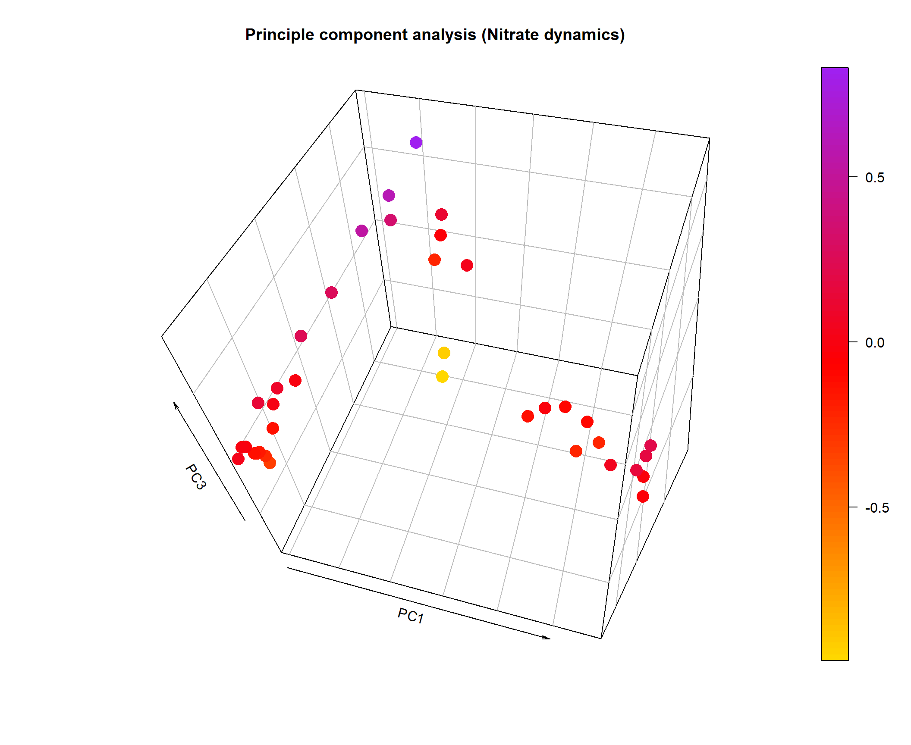
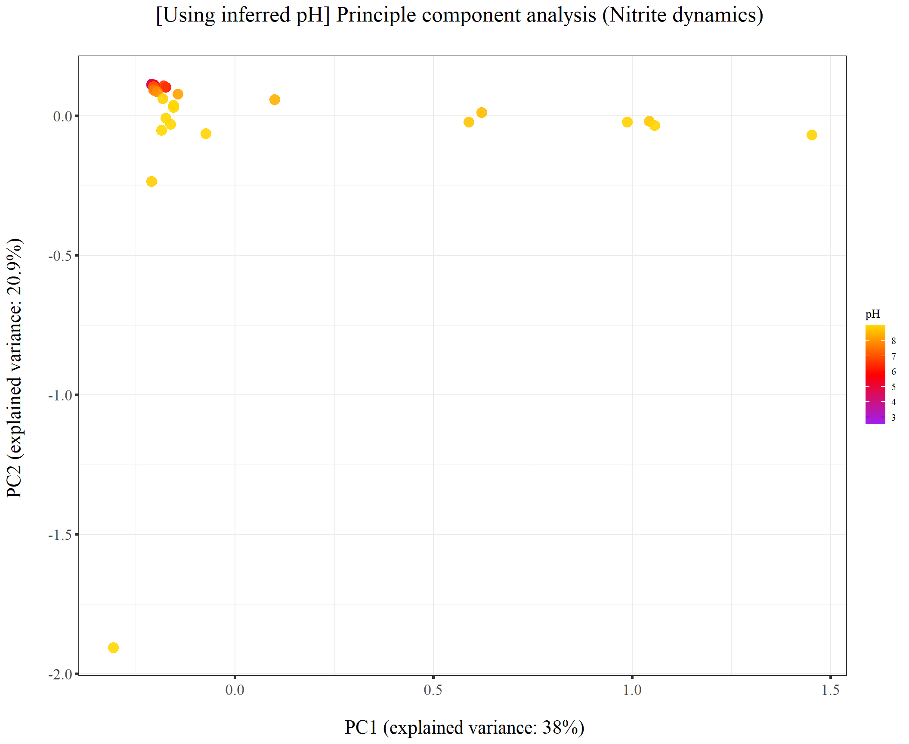
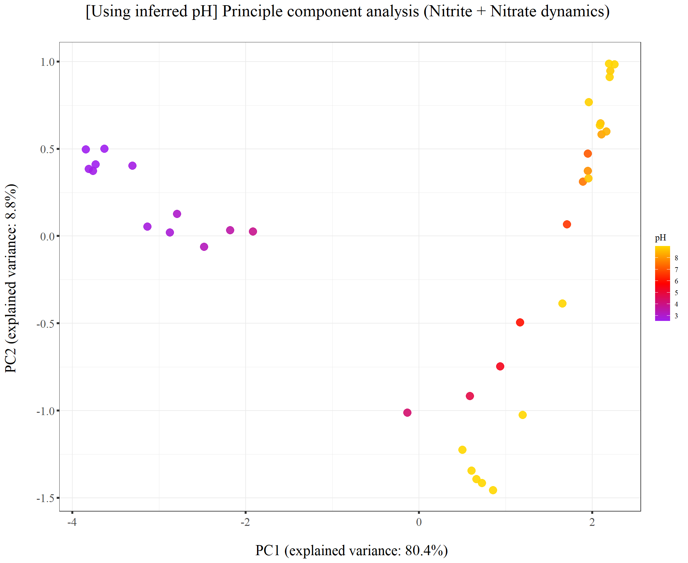

220131_Griess_pH_perturbation3
KiseokUchicago
2022-02-01
Last updated: 2022-02-08
Checks: 7 0
Knit directory: Denit_visualization_R/
This reproducible R Markdown analysis was created with workflowr (version 1.6.2). The Checks tab describes the reproducibility checks that were applied when the results were created. The Past versions tab lists the development history.
Great! Since the R Markdown file has been committed to the Git repository, you know the exact version of the code that produced these results.
Great job! The global environment was empty. Objects defined in the global environment can affect the analysis in your R Markdown file in unknown ways. For reproduciblity it’s best to always run the code in an empty environment.
The command set.seed(20210924) was run prior to running the code in the R Markdown file. Setting a seed ensures that any results that rely on randomness, e.g. subsampling or permutations, are reproducible.
Great job! Recording the operating system, R version, and package versions is critical for reproducibility.
Nice! There were no cached chunks for this analysis, so you can be confident that you successfully produced the results during this run.
Great job! Using relative paths to the files within your workflowr project makes it easier to run your code on other machines.
Great! You are using Git for version control. Tracking code development and connecting the code version to the results is critical for reproducibility.
The results in this page were generated with repository version 352308a. See the Past versions tab to see a history of the changes made to the R Markdown and HTML files.
Note that you need to be careful to ensure that all relevant files for the analysis have been committed to Git prior to generating the results (you can use wflow_publish or wflow_git_commit). workflowr only checks the R Markdown file, but you know if there are other scripts or data files that it depends on. Below is the status of the Git repository when the results were generated:
Ignored files:
Ignored: .Rhistory
Ignored: .Rproj.user/
Untracked files:
Untracked: analysis/220131_pH_during_perturbation3.Rmd
Untracked: data/120321_soil_buffering_capacity_Nichols-B.xlsx
Untracked: data/210911_TOC_sample_plate1.xlsx
Untracked: data/210922_Griess_sample_plate1-investigating.xlsx
Untracked: data/210922_Griess_sample_plate1.xlsx
Untracked: data/210927_TOC_sample_plate1_100ul.xlsx
Untracked: data/210927_TOC_sample_plate1_10ul.xlsx
Untracked: data/210928_Griess_sample_plate1.xlsx
Untracked: data/211005_Griess_sample_plate1.xlsx
Untracked: data/211007_Griess_blank_plate1.xlsx
Untracked: data/211007_Griess_blank_plate2.xlsx
Untracked: data/211008_Griess_blank_plate0.xlsx
Untracked: data/211008_Griess_blank_plate1.xlsx
Untracked: data/211017_Griess_plate0.xlsx
Untracked: data/211017_Griess_plate1.xlsx
Untracked: data/211017_Griess_plate2.xlsx
Untracked: data/211017_Griess_plate3.xlsx
Untracked: data/211017_Griess_plate4.xlsx
Untracked: data/211017_Griess_plate5.xlsx
Untracked: data/211017_Griess_plate6.xlsx
Untracked: data/211017_Griess_plate7.xlsx
Untracked: data/211017_Griess_plate8.xlsx
Untracked: data/211019_Griess_plate1.xlsx
Untracked: data/211020_Griess_plate0.xlsx
Untracked: data/211020_Griess_plate1.xlsx
Untracked: data/211020_df_full_innate.xlsx
Untracked: data/211025_Griess_no3_fit_plate0.xlsx
Untracked: data/211025_Griess_no3_fit_plate1.xlsx
Untracked: data/211025_Griess_plate0.xlsx
Untracked: data/211025_Griess_plate1.xlsx
Untracked: data/211028_Griess_plate1.xlsx
Untracked: data/211028_Griess_plate1_no3_fit.xlsx
Untracked: data/211028_Griess_plate2.xlsx
Untracked: data/211028_Griess_plate2_no3_fit.xlsx
Untracked: data/211028_Griess_plate3.xlsx
Untracked: data/211028_Griess_plate3_no3_fit.xlsx
Untracked: data/211028_Griess_plate4.xlsx
Untracked: data/211028_Griess_plate4_no3_fit.xlsx
Untracked: data/211028_time_table.xlsx
Untracked: data/211127_Griess_SUP1.xlsx
Untracked: data/211127_Griess_SUP11.xlsx
Untracked: data/211127_Griess_SUP3.xlsx
Untracked: data/211127_Griess_SUP5.xlsx
Untracked: data/211127_Griess_SUP7.xlsx
Untracked: data/211127_Griess_SUP9.xlsx
Untracked: data/211127_Griess_plate0.xlsx
Untracked: data/211127_time_table.xlsx
Untracked: data/211128_Griess_plate1.xlsx
Untracked: data/211128_Griess_plate10.xlsx
Untracked: data/211128_Griess_plate11.xlsx
Untracked: data/211128_Griess_plate2.xlsx
Untracked: data/211128_Griess_plate3.xlsx
Untracked: data/211128_Griess_plate4.xlsx
Untracked: data/211128_Griess_plate5.xlsx
Untracked: data/211128_Griess_plate6.xlsx
Untracked: data/211128_Griess_plate7.xlsx
Untracked: data/211128_Griess_plate8.xlsx
Untracked: data/211128_Griess_plate9.xlsx
Untracked: data/211128_time_table.xlsx
Untracked: data/211201_pH_colorimetric.xlsx
Untracked: data/211203_slurry_vs_water_drying_table.xlsx
Untracked: data/211203_slurry_vs_water_drying_time.xlsx
Untracked: data/211208_pH_colorimetric_T3.xlsx
Untracked: data/211208_pH_colorimetric_T4.xlsx
Untracked: data/211208_pH_colorimetric_T5.xlsx
Untracked: data/211208_pH_colorimetric_plate1.xlsx
Untracked: data/211208_pH_colorimetric_plate2.xlsx
Untracked: data/211208_pH_colorimetric_plate3.xlsx
Untracked: data/211208_time_table.xlsx
Untracked: data/211209_OD600_T1.xlsx
Untracked: data/211209_OD600_T2.xlsx
Untracked: data/211209_OD600_T3.xlsx
Untracked: data/211209_time_table.xlsx
Untracked: data/211210_pH_colorimetric_T0.xlsx
Untracked: data/211210_pH_colorimetric_T1.xlsx
Untracked: data/211210_pH_colorimetric_T2.xlsx
Untracked: data/211210_pH_colorimetric_T3.xlsx
Untracked: data/211210_time_table.xlsx
Untracked: data/211218_pH_colorimetric_t0.xlsx
Untracked: data/211218_pH_colorimetric_t1.xlsx
Untracked: data/211218_pH_colorimetric_t2.xlsx
Untracked: data/211218_pH_colorimetric_t3.xlsx
Untracked: data/211218_pH_colorimetric_t4.xlsx
Untracked: data/211218_time_table.xlsx
Untracked: data/211220_Griess_plate1.xlsx
Untracked: data/211220_Griess_plate10.xlsx
Untracked: data/211220_Griess_plate11.xlsx
Untracked: data/211220_Griess_plate2.xlsx
Untracked: data/211220_Griess_plate3.xlsx
Untracked: data/211220_Griess_plate4.xlsx
Untracked: data/211220_Griess_plate5.xlsx
Untracked: data/211220_Griess_plate6.xlsx
Untracked: data/211220_Griess_plate7.xlsx
Untracked: data/211220_Griess_plate8.xlsx
Untracked: data/211220_Griess_plate9.xlsx
Untracked: data/211220_time_table_AU.xlsx
Untracked: data/211220_time_table_BN.xlsx
Untracked: data/211224_TOC_sample_plate1.xlsx
Untracked: data/220103_Griess_T0.xlsx
Untracked: data/220103_Griess_T1.xlsx
Untracked: data/220103_Griess_T11.xlsx
Untracked: data/220103_Griess_T12.xlsx
Untracked: data/220103_Griess_T2.xlsx
Untracked: data/220103_Griess_T3.xlsx
Untracked: data/220103_Griess_T4.xlsx
Untracked: data/220103_Griess_T5.xlsx
Untracked: data/220103_Griess_T6.xlsx
Untracked: data/220103_Griess_T7.xlsx
Untracked: data/220103_Griess_T8.xlsx
Untracked: data/220103_Griess_T9.xlsx
Untracked: data/220103_time_table.xlsx
Untracked: data/220106_Ammonia_sample_plate1.xlsx
Untracked: data/220107-2_Ammonia_sample_plate1.xlsx
Untracked: data/220107-3_Ammonia_sample_plate1.xlsx
Untracked: data/220107-4_Ammonia_sample_plate1.xlsx
Untracked: data/220107-5_Ammonia_sample_plate1.xlsx
Untracked: data/220107-6_Ammonia_sample_plate1.xlsx
Untracked: data/220107-7_Ammonia_sample_plate1.xlsx
Untracked: data/220107-8_Ammonia_sample_plate1.xlsx
Untracked: data/220107-9_Ammonia_sample_plate1.xlsx
Untracked: data/220107_Ammonia_sample_plate1.xlsx
Untracked: data/220108_Ammonia_sample_plate1.xlsx
Untracked: data/220110_Ammonia_sample_plate1.xlsx
Untracked: data/220110_Ammonia_sample_plate2.xlsx
Untracked: data/220111_Ammonia_sample_T0.xlsx
Untracked: data/220111_Ammonia_sample_T1.xlsx
Untracked: data/220111_Ammonia_sample_T2.xlsx
Untracked: data/220111_Ammonia_sample_T3.xlsx
Untracked: data/220111_TOC_sample_plate1.xlsx
Untracked: data/220112_Ammonia_sample_T11.xlsx
Untracked: data/220112_Ammonia_sample_T12.xlsx
Untracked: data/220112_Ammonia_sample_T4.xlsx
Untracked: data/220112_Ammonia_sample_T5.xlsx
Untracked: data/220112_Ammonia_sample_T6.xlsx
Untracked: data/220112_Ammonia_sample_T7.xlsx
Untracked: data/220112_Ammonia_sample_T8.xlsx
Untracked: data/220112_Ammonia_sample_T9.xlsx
Untracked: data/220113_pH_colorimetric_T0.xlsx
Untracked: data/220113_pH_colorimetric_T12.xlsx
Untracked: data/220113_pH_colorimetric_T2.xlsx
Untracked: data/220113_pH_colorimetric_T3.xlsx
Untracked: data/220113_pH_colorimetric_T8.xlsx
Untracked: data/220125_pH_colorimetric_pH1_mu_opt0.099.xlsx
Untracked: data/220125_pH_colorimetric_pH1_using6.66.xlsx
Untracked: data/220125_pH_colorimetric_pH2_mu_opt0.099.xlsx
Untracked: data/220125_pH_colorimetric_pH2_using6.66.xlsx
Untracked: data/220125_time_table.xlsx
Untracked: data/220128_Ammonia_sample_plate1.xlsx
Untracked: data/220128_Ammonia_sample_plate2.xlsx
Untracked: data/220128_Ammonia_sample_plate3.xlsx
Untracked: data/220128_Ammonia_sample_plate4.xlsx
Untracked: data/220128_Ammonia_sample_plate5.xlsx
Untracked: data/220128_Ammonia_sample_plate6.xlsx
Untracked: data/220128_Griess_plate1.xlsx
Untracked: data/220128_Griess_plate2.xlsx
Untracked: data/220128_Griess_plate3.xlsx
Untracked: data/220128_Griess_plate4.xlsx
Untracked: data/220128_Griess_plate5.xlsx
Untracked: data/220128_Griess_plate6.xlsx
Untracked: data/220128_time_table.xlsx
Untracked: data/220131_Ammonia_sample_plate1.xlsx
Untracked: data/220131_Ammonia_sample_plate2.xlsx
Untracked: data/220131_Ammonia_sample_plate3.xlsx
Untracked: data/220131_Ammonia_sample_plate4.xlsx
Untracked: data/220131_Ammonia_sample_plate5.xlsx
Untracked: data/220131_Ammonia_sample_plate6.xlsx
Untracked: data/220131_Griess_plate1.xlsx
Untracked: data/220131_Griess_plate2.xlsx
Untracked: data/220131_Griess_plate3.xlsx
Untracked: data/220131_Griess_plate4.xlsx
Untracked: data/220131_Griess_plate5.xlsx
Untracked: data/220131_Griess_plate6.xlsx
Untracked: data/220131_pH_colorimetric_pH1_mu_opt_T0.xlsx
Untracked: data/220131_pH_colorimetric_pH2_mu_opt_T0.xlsx
Untracked: data/220131_time_table.xlsx
Untracked: data/TOC_TN_measurement_2_labs_211014.xlsx
Untracked: data/dry_weight_curve(9.5.21).xlsx
Untracked: data/pH_data(11.17.21)-Midway_etc.xlsx
Untracked: data/pH_data(12.6.21)-Midway_incubation_endpoint.xlsx
Untracked: data/pH_data(9.14.21).xlsx
Untracked: data/pH_data(9.28.21).xlsx
Untracked: past_figures/
Note that any generated files, e.g. HTML, png, CSS, etc., are not included in this status report because it is ok for generated content to have uncommitted changes.
These are the previous versions of the repository in which changes were made to the R Markdown (analysis/220131_Griess_pH_perturbation3.Rmd) and HTML (docs/220131_Griess_pH_perturbation3.html) files. If you’ve configured a remote Git repository (see ?wflow_git_remote), click on the hyperlinks in the table below to view the files as they were in that past version.
| File | Version | Author | Date | Message |
|---|---|---|---|---|
| Rmd | 352308a | KiseokUchicago | 2022-02-08 | wflow_publish(“analysis/220131_Griess_pH_perturbation3.Rmd”) |
Time series analysis - pH perturbation experiment-3 (Griess assay)
Researcher: Kiseok Lee
Experiment Date: 1/27/22 - 1/31/22 (5 days)
Analysis Date: 2/1/21 Lab: Seppe Kuehn
# libraries
library(dplyr)
library(ggplot2)
library(RColorBrewer)
library(vegan)
library(tidyverse)
library(magrittr)
library(readxl)
library(reshape2)
library(gtools)
library(devtools)
library(openxlsx)
library(ape)
library(stringr)
library(tidyr)
library(ggrepel)
library(ggpubr)
## theme for ggplot
mytheme <- theme_bw() +
theme(text = element_text(family="serif")) +
theme(plot.title = element_text(size = 19,hjust = 0.5, family="serif")) +
theme(axis.title.x = element_text(size = 17,hjust = 0.5, family="serif")) +
theme(axis.title.y = element_text(size = 17,hjust = 0.5, family="serif")) +
theme(axis.text.x = element_text(hjust = 0.5, vjust=0.3,size=13, family="serif"))+
theme(axis.text.y = element_text(size=10, family="serif"))+
theme(panel.grid.major = element_blank()) +
theme(panel.grid.minor = element_blank(),panel.background=element_blank(),panel.border=element_blank(),plot.background=element_blank()) +
theme(axis.ticks = element_line(size = 1.1))
mytheme_2d <- theme_bw() +
theme(text = element_text(family="serif")) +
theme(plot.title = element_text(size = 19,hjust = 0.5, family="serif")) +
theme(axis.title.x = element_text(size = 17,hjust = 0.5, family="serif")) +
theme(axis.title.y = element_text(size = 17,hjust = 0.5, family="serif")) +
theme(axis.text.x = element_text(hjust = 0.5, vjust=0.3,size=13, family="serif"))+
theme(axis.text.y = element_text(size=13, family="serif"))+
# theme(panel.grid.major = element_blank()) +
# theme(panel.grid.minor = element_blank(),panel.background=element_blank(),plot.background=element_blank()) +
theme(axis.ticks = element_line(size = 1.1))
# color collection
my_color_collection <- c(
"#CBD588", "#5F7FC7", "orange", "#AD6F3B", "#673770",
"#D14285", "#652926", "#C84248", "#8569D5", "#5E738F",
"#D1A33D", "#8A7C64", "#599861","#616163", "#FFCDB2",
"#6D9F71", "#242F40",
"#CCA43B", "#F92A82", "#ED7B84", "#7EB77F",
"#DEC4A1", "#E5D1D0", '#0E8482', '#C9DAEA', '#337357',
'#95C623', '#E55812', '#04471C', '#F2D7EE', '#D3BCC0',
'#A5668B', '#69306D', '#0E103D', '#1A535C', '#4ECDC4',
'#F7FFF7', '#FF6B6B', '#FFE66D', '#6699CC', '#FFF275',
'#FF8C42', '#FF3C38', '#A23E48', '#000000', '#CF5C36',
'#EEE5E9', '#7C7C7C', '#EFC88B', '#2E5266', '#6E8898',
'#9FB1BC', '#D3D0CB', '#E2C044', '#5BC0EB', '#FDE74C',
'#9BC53D', '#E55934', '#FA7921', "#CD9BCD", "#508578", "#DA5724")
# for git push, use this instead of using wflow_git_push()
# git push -u origin master (in the Git app / in the working directory)
# for making pdf file
library(rmarkdown)
# render("analysis/~~.Rmd", "pdf_document")1. Import data table from python code
We are going to use the vcl3 treated standard curve that is fitted with pure nitrate standards
# import file
df_plate1 <- openxlsx::read.xlsx("data/220131_Griess_plate1.xlsx")
df_plate2 <- openxlsx::read.xlsx("data/220131_Griess_plate2.xlsx")
df_plate3 <- openxlsx::read.xlsx("data/220131_Griess_plate3.xlsx")
df_plate4 <- openxlsx::read.xlsx("data/220131_Griess_plate4.xlsx")
df_plate5 <- openxlsx::read.xlsx("data/220131_Griess_plate5.xlsx")
df_plate6 <- openxlsx::read.xlsx("data/220131_Griess_plate6.xlsx")
head(df_plate1) Well Nitrite_input Nitrate_input Soil Sample_type
1 A01 0 2 LaBaghWoods_pH6.66 Slurry
2 A02 0 2 LaBaghWoods_pH6.66 Slurry
3 A03 0 2 LaBaghWoods_pH6.66 Slurry
4 A04 0 2 LaBaghWoods_pH6.66 Slurry
5 A05 0 2 LaBaghWoods_pH6.66 Slurry
6 A06 0 2 LaBaghWoods_pH6.66 Slurry
Titration_type Unit Concentration_M Added_ul Time_point NO2_OD540
1 HCl 1 0.5 20 T0 0.02780
2 HCl 3 1.5 20 T0 0.00015
3 HCl 5 2.5 20 T0 0.00050
4 HCl 7 3.5 20 T0 0.00030
5 HCl 9 4.5 20 T0 0.00000
6 HCl 11 5.5 20 T0 0.00220
NO2NO3_OD540 NO2_mM NO2NO3_mM NO3_mM
1 0.78505 0.02411308 0.7944467 0.7703336
2 0.75575 0.01023808 0.7634054 0.7531673
3 0.74260 0.01041350 0.7494993 0.7390858
4 0.73775 0.01031326 0.7443744 0.7340612
5 0.73765 0.01016290 0.7442688 0.7341059
6 0.75245 0.01126564 0.7599142 0.7486485colnames(df_plate1) [1] "Well" "Nitrite_input" "Nitrate_input" "Soil"
[5] "Sample_type" "Titration_type" "Unit" "Concentration_M"
[9] "Added_ul" "Time_point" "NO2_OD540" "NO2NO3_OD540"
[13] "NO2_mM" "NO2NO3_mM" "NO3_mM" dim(df_plate1)[1] 96 15head(df_plate2) Well Nitrite_input Nitrate_input Soil Sample_type
1 A01 0 2 LaBaghWoods_pH6.66 Slurry
2 A02 0 2 LaBaghWoods_pH6.66 Slurry
3 A03 0 2 LaBaghWoods_pH6.66 Slurry
4 A04 0 2 LaBaghWoods_pH6.66 Slurry
5 A05 0 2 LaBaghWoods_pH6.66 Slurry
6 A06 0 2 LaBaghWoods_pH6.66 Slurry
Titration_type Unit Concentration_M Added_ul Time_point NO2_OD540
1 HCl 1 0.5 20 T2 0.02865
2 HCl 3 1.5 20 T2 0.00290
3 HCl 5 2.5 20 T2 0.00285
4 HCl 7 3.5 20 T2 0.00125
5 HCl 9 4.5 20 T2 0.00175
6 HCl 11 5.5 20 T2 0.00170
NO2NO3_OD540 NO2_mM NO2NO3_mM NO3_mM
1 0.71370 0.02454015 0.7189928 0.6944527
2 0.68220 0.01161656 0.6858275 0.6742109
3 0.65985 0.01159149 0.6623497 0.6507582
4 0.70290 0.01078943 0.7076118 0.6968224
5 0.68575 0.01104006 0.6895607 0.6785206
6 0.65705 0.01101500 0.6594115 0.6483965colnames(df_plate2) [1] "Well" "Nitrite_input" "Nitrate_input" "Soil"
[5] "Sample_type" "Titration_type" "Unit" "Concentration_M"
[9] "Added_ul" "Time_point" "NO2_OD540" "NO2NO3_OD540"
[13] "NO2_mM" "NO2NO3_mM" "NO3_mM" dim(df_plate2)[1] 96 15head(df_plate3) Well Nitrite_input Nitrate_input Soil Sample_type
1 A01 0 2 LaBaghWoods_pH6.66 Slurry
2 A02 0 2 LaBaghWoods_pH6.66 Slurry
3 A03 0 2 LaBaghWoods_pH6.66 Slurry
4 A04 0 2 LaBaghWoods_pH6.66 Slurry
5 A05 0 2 LaBaghWoods_pH6.66 Slurry
6 A06 0 2 LaBaghWoods_pH6.66 Slurry
Titration_type Unit Concentration_M Added_ul Time_point NO2_OD540
1 HCl 1 0.5 20 T4 0.00150
2 HCl 3 1.5 20 T4 0.02665
3 HCl 5 2.5 20 T4 0.00205
4 HCl 7 3.5 20 T4 0.00090
5 HCl 9 4.5 20 T4 0.00000
6 HCl 11 5.5 20 T4 0.00075
NO2NO3_OD540 NO2_mM NO2NO3_mM NO3_mM
1 0.18310 0.01091474 0.1717280 0.1608133
2 0.50340 0.02353533 0.4992343 0.4756989
3 0.60920 0.01119045 0.6093078 0.5981173
4 0.63055 0.01061399 0.6316384 0.6210244
5 0.78325 0.01016290 0.7925374 0.7823745
6 0.83885 0.01053881 0.8516496 0.8411108colnames(df_plate3) [1] "Well" "Nitrite_input" "Nitrate_input" "Soil"
[5] "Sample_type" "Titration_type" "Unit" "Concentration_M"
[9] "Added_ul" "Time_point" "NO2_OD540" "NO2NO3_OD540"
[13] "NO2_mM" "NO2NO3_mM" "NO3_mM" dim(df_plate3)[1] 96 15head(df_plate4) Well Nitrite_input Nitrate_input Soil Sample_type
1 A01 0 2 LaBaghWoods_pH6.66 Slurry
2 A02 0 2 LaBaghWoods_pH6.66 Slurry
3 A03 0 2 LaBaghWoods_pH6.66 Slurry
4 A04 0 2 LaBaghWoods_pH6.66 Slurry
5 A05 0 2 LaBaghWoods_pH6.66 Slurry
6 A06 0 2 LaBaghWoods_pH6.66 Slurry
Titration_type Unit Concentration_M Added_ul Time_point NO2_OD540
1 HCl 1 0.5 20 T6 0.00000
2 HCl 3 1.5 20 T6 0.01665
3 HCl 5 2.5 20 T6 0.00335
4 HCl 7 3.5 20 T6 0.00000
5 HCl 9 4.5 20 T6 0.00000
6 HCl 11 5.5 20 T6 0.00110
NO2NO3_OD540 NO2_mM NO2NO3_mM NO3_mM
1 0.00000 0.01016290 0.0000000 0.0000000
2 0.21715 0.01851390 0.2061476 0.1876337
3 0.45075 0.01184216 0.4448156 0.4329734
4 0.60770 0.01016290 0.6077404 0.5975775
5 0.66000 0.01016290 0.6625071 0.6523442
6 0.69785 0.01071424 0.7022937 0.6915795colnames(df_plate4) [1] "Well" "Nitrite_input" "Nitrate_input" "Soil"
[5] "Sample_type" "Titration_type" "Unit" "Concentration_M"
[9] "Added_ul" "Time_point" "NO2_OD540" "NO2NO3_OD540"
[13] "NO2_mM" "NO2NO3_mM" "NO3_mM" dim(df_plate4)[1] 96 15head(df_plate5) Well Nitrite_input Nitrate_input Soil Sample_type
1 A01 0 2 LaBaghWoods_pH6.66 Slurry
2 A02 0 2 LaBaghWoods_pH6.66 Slurry
3 A03 0 2 LaBaghWoods_pH6.66 Slurry
4 A04 0 2 LaBaghWoods_pH6.66 Slurry
5 A05 0 2 LaBaghWoods_pH6.66 Slurry
6 A06 0 2 LaBaghWoods_pH6.66 Slurry
Titration_type Unit Concentration_M Added_ul Time_point NO2_OD540
1 HCl 1 0.5 20 T8 0.00140
2 HCl 3 1.5 20 T8 0.00175
3 HCl 5 2.5 20 T8 0.00110
4 HCl 7 3.5 20 T8 0.00000
5 HCl 9 4.5 20 T8 0.00090
6 HCl 11 5.5 20 T8 0.00205
NO2NO3_OD540 NO2_mM NO2NO3_mM NO3_mM
1 0.0000 0.01086462 0.0000000 0.0000000
2 0.0000 0.01104006 0.0000000 0.0000000
3 0.0000 0.01071424 0.0000000 0.0000000
4 0.5324 0.01016290 0.5293094 0.5191465
5 0.6421 0.01061399 0.6437357 0.6331217
6 0.6264 0.01119045 0.6272947 0.6161042colnames(df_plate5) [1] "Well" "Nitrite_input" "Nitrate_input" "Soil"
[5] "Sample_type" "Titration_type" "Unit" "Concentration_M"
[9] "Added_ul" "Time_point" "NO2_OD540" "NO2NO3_OD540"
[13] "NO2_mM" "NO2NO3_mM" "NO3_mM" dim(df_plate5)[1] 96 15head(df_plate6) Well Nitrite_input Nitrate_input Soil Sample_type
1 A01 0 2 LaBaghWoods_pH6.66 Slurry
2 A02 0 2 LaBaghWoods_pH6.66 Slurry
3 A03 0 2 LaBaghWoods_pH6.66 Slurry
4 A04 0 2 LaBaghWoods_pH6.66 Slurry
5 A05 0 2 LaBaghWoods_pH6.66 Slurry
6 A06 0 2 LaBaghWoods_pH6.66 Slurry
Titration_type Unit Concentration_M Added_ul Time_point NO2_OD540
1 HCl 1 0.5 20 T10 0.00445
2 HCl 3 1.5 20 T10 0.00395
3 HCl 5 2.5 20 T10 0.00240
4 HCl 7 3.5 20 T10 0.00135
5 HCl 9 4.5 20 T10 0.00110
6 HCl 11 5.5 20 T10 0.00185
NO2NO3_OD540 NO2_mM NO2NO3_mM NO3_mM
1 0.0000 0.01239366 0.0000000 0.0000000
2 0.0000 0.01214297 0.0000000 0.0000000
3 0.0000 0.01136590 0.0000000 0.0000000
4 0.5065 0.01083955 0.5024458 0.4916062
5 0.6484 0.01071424 0.6503391 0.6396249
6 0.7743 0.01109019 0.7830487 0.7719585colnames(df_plate6) [1] "Well" "Nitrite_input" "Nitrate_input" "Soil"
[5] "Sample_type" "Titration_type" "Unit" "Concentration_M"
[9] "Added_ul" "Time_point" "NO2_OD540" "NO2NO3_OD540"
[13] "NO2_mM" "NO2NO3_mM" "NO3_mM" dim(df_plate6)[1] 48 15# X1 to Well
# df_p0 %<>% rename(Well = X1)
# df_p2 %<>% rename(Well = X1)
# df_p3 %<>% rename(Well = X1)
# df_p4 %<>% rename(Well = X1)
# df_p5 %<>% rename(Well = X1)
# df_p6 %<>% rename(Well = X1)
# df_p7 %<>% rename(Well = X1)
# df_p8 %<>% rename(Well = X1)
# df_p9 %<>% rename(Well = X1)
# df_p10 %<>% rename(Well = X1)
# df_p11 %<>% rename(Well = X1)
# remove wells that were contaminated during the experiment
df_plate1 %<>% filter(!(Well %in% c("A08"))) # filter defect
df_plate5 %<>% filter(!(Well %in% c("B04","D04","F04","H04"))) # wrong sampling... I assume?
# df_p6 %<>% filter(!(Well %in% c("A11"))) # filter burst issue
# df_p8 %<>% filter(!(Well %in% c("A07", "A08", "E08"))) # filter burst issue
# df_p11 %<>% filter(!(Well %in% c("A01"))) # filter burst issue # G11 was removed because of abnormal value compared to other 2 replicates
# dim(df_p4)
# bind two dataframe
df_p <- rbind(df_plate1, df_plate2, df_plate3, df_plate4, df_plate5, df_plate6)
dim(df_p)[1] 523 15# remove NA
dim(df_p)[1] 523 15df_p <- na.omit(df_p)
dim(df_p) # 528[1] 523 15# multiply dilution factor which is 5/2
df_p %<>% select(-NO2_OD540, -NO2NO3_OD540)
df_p %<>% mutate(NO2_mM = NO2_mM * (5/2), NO2NO3_mM = NO2NO3_mM * (5/2), NO3_mM = NO3_mM * (5/2))
# Get the metadata for time point and left join
Time_table <- openxlsx::read.xlsx("data/220131_time_table.xlsx")
# Time_table_BN <- openxlsx::read.xlsx("data/220131_time_table_BN.xlsx")
# Time_table <- rbind(Time_table_AU, Time_table_BN)
Time_table %<>% select(-Date)
Time_table$Time_hours <- round(Time_table$Time_hours, 1)
Time_table$Time_days <- round(Time_table$Time_days, 1)
df_time <- Time_table
dim(df_p)[1] 523 13df_p <- df_p %>% left_join(Time_table, by=("Time_point"="Time_point"))
dim(df_p)[1] 523 16colnames(df_p) [1] "Well" "Nitrite_input" "Nitrate_input" "Soil"
[5] "Sample_type" "Titration_type" "Unit" "Concentration_M"
[9] "Added_ul" "Time_point" "NO2_mM" "NO2NO3_mM"
[13] "NO3_mM" "Time_minutes" "Time_hours" "Time_days" # time_point order
df_p$Time_point <- factor(df_p$Time_point, levels = paste0("T",0:10))2. Get average and standard deviation & Moisture correction & Blank correction
# plot to see
ggplot(df_p, aes(x=Time_point, y=NO3_mM, color=Sample_type, group=Sample_type)) +
geom_point(size=2.5, shape=21) +
# geom_line(size=1)+
scale_fill_brewer(palette='Set2') +
ylab("NO3- (mM) \n") +
xlab("\n Nitrate_spike_in (mM)") +
# scale_y_continuous(breaks = seq(0,0.3,0.05), limits=c(0, 0.3))+
ggtitle("Without averaging \n") +
mytheme_2d
# average technical replicate (here only 1 replicate per pH perturbation)
colnames(df_p) [1] "Well" "Nitrite_input" "Nitrate_input" "Soil"
[5] "Sample_type" "Titration_type" "Unit" "Concentration_M"
[9] "Added_ul" "Time_point" "NO2_mM" "NO2NO3_mM"
[13] "NO3_mM" "Time_minutes" "Time_hours" "Time_days" dim(df_p)[1] 523 16# df_p <- df_p %>% group_by(Nitrite_input, Nitrate_input, Soil, Titration_type, Concentration_M, Added_ul, Sample_type, Time_point, Time_minutes, Time_hours, Time_days) %>% summarise(NO2_mM = mean(NO2_mM), Std_NO2_mM = sd(NO2_mM), NO3_mM = mean(NO3_mM), Std_NO3_mM = sd(NO3_mM)) %>% ungroup()
# mols and molarity unit conversion
# test
df_p$Titration_type %>% length()[1] 523# Setting H_mM column
# df_soil <- df_p %>% filter(Titration_type %in% c("NaOH","HCl"))
Added_Volume <- 1.7 # ml
Soil_mg <- 0.85
moisture_percent_1 = 23.6 # LaBaghWoods1
Added_Volume + Soil_mg*(moisture_percent_1/100)[1] 1.9006# moisture_percent_2 = 33.2 # Allandale
df_p$Added_ul <- ifelse(df_p$Titration_type == "NaOH", -1*df_p$Added_ul, df_p$Added_ul) # HCl is +, NaOH is -
df_p %<>% mutate(H_mol = Concentration_M * Added_ul * 10^(-6)) # Calculate H mol
df_p$Volume <- ifelse(df_p$Soil == "LaBaghWoods_pH6.66", Added_Volume + Soil_mg*(moisture_percent_1/100), 0) # Calc total volume
# df_p$Volume <- ifelse(df_p$Soil == "Allandale_pH4", Added_Volume + Soil_mg*(moisture_percent_2/100), df_p$Volume) # Calc total volume
# df_p$Volume %>% unique()
df_p %<>% mutate(H_Molarity = H_mol / (Volume * 10^(-3)))
df_p %<>% mutate(H_mM = H_Molarity * 1000)
# openxlsx::write.xlsx(df_p, "df_p.xlsx")
# how many levels of H_mM?
df_p %>% filter(Soil == "LaBaghWoods_pH6.66")%>% select(H_mM) %>% unique() %>% arrange(H_mM) H_mM
1 -94.706935
2 -89.445438
3 -84.183942
4 -78.922446
5 -73.660949
6 -68.399453
7 -63.137956
8 -57.876460
9 -52.614964
10 -47.353467
11 -42.091971
12 -36.830475
13 -31.568978
14 -26.307482
15 -21.045985
16 -15.784489
17 -10.522993
18 -5.261496
19 0.000000
20 5.261496
21 10.522993
22 15.784489
23 21.045985
24 26.307482
25 31.568978
26 36.830475
27 42.091971
28 47.353467
29 52.614964
30 57.876460
31 63.137956
32 68.399453
33 73.660949
34 78.922446
35 84.183942
36 89.445438
37 94.706935# df_p %>% filter(Soil == "Allandale_pH4")%>% select(H_mM) %>% unique() %>% arrange()
colnames(df_p) [1] "Well" "Nitrite_input" "Nitrate_input" "Soil"
[5] "Sample_type" "Titration_type" "Unit" "Concentration_M"
[9] "Added_ul" "Time_point" "NO2_mM" "NO2NO3_mM"
[13] "NO3_mM" "Time_minutes" "Time_hours" "Time_days"
[17] "H_mol" "Volume" "H_Molarity" "H_mM" ## Moisture correction
dim(df_p)[1] 523 20# Testing negative samples
df_no3_blank <- df_p %>% filter(Sample_type == "Nitrate_Blank") # Use Nitrate_Blank instead in the future
df_no3_blank # 33 Well Nitrite_input Nitrate_input Soil Sample_type
1 G06 0 2 LaBaghWoods_pH6.66 Nitrate_Blank
2 G12 0 2 LaBaghWoods_pH6.66 Nitrate_Blank
3 H05 0 2 LaBaghWoods_pH6.66 Nitrate_Blank
4 H06 0 2 LaBaghWoods_pH6.66 Nitrate_Blank
5 H11 0 2 LaBaghWoods_pH6.66 Nitrate_Blank
6 H12 0 2 LaBaghWoods_pH6.66 Nitrate_Blank
7 G06 0 2 LaBaghWoods_pH6.66 Nitrate_Blank
8 G12 0 2 LaBaghWoods_pH6.66 Nitrate_Blank
9 H05 0 2 LaBaghWoods_pH6.66 Nitrate_Blank
10 H06 0 2 LaBaghWoods_pH6.66 Nitrate_Blank
11 H11 0 2 LaBaghWoods_pH6.66 Nitrate_Blank
12 H12 0 2 LaBaghWoods_pH6.66 Nitrate_Blank
13 G06 0 2 LaBaghWoods_pH6.66 Nitrate_Blank
14 G12 0 2 LaBaghWoods_pH6.66 Nitrate_Blank
15 H05 0 2 LaBaghWoods_pH6.66 Nitrate_Blank
16 H06 0 2 LaBaghWoods_pH6.66 Nitrate_Blank
17 H11 0 2 LaBaghWoods_pH6.66 Nitrate_Blank
18 H12 0 2 LaBaghWoods_pH6.66 Nitrate_Blank
19 G06 0 2 LaBaghWoods_pH6.66 Nitrate_Blank
20 G12 0 2 LaBaghWoods_pH6.66 Nitrate_Blank
21 H05 0 2 LaBaghWoods_pH6.66 Nitrate_Blank
22 H06 0 2 LaBaghWoods_pH6.66 Nitrate_Blank
23 H11 0 2 LaBaghWoods_pH6.66 Nitrate_Blank
24 H12 0 2 LaBaghWoods_pH6.66 Nitrate_Blank
25 G06 0 2 LaBaghWoods_pH6.66 Nitrate_Blank
26 G12 0 2 LaBaghWoods_pH6.66 Nitrate_Blank
27 H05 0 2 LaBaghWoods_pH6.66 Nitrate_Blank
28 H06 0 2 LaBaghWoods_pH6.66 Nitrate_Blank
29 H11 0 2 LaBaghWoods_pH6.66 Nitrate_Blank
30 H12 0 2 LaBaghWoods_pH6.66 Nitrate_Blank
31 G06 0 2 LaBaghWoods_pH6.66 Nitrate_Blank
32 H05 0 2 LaBaghWoods_pH6.66 Nitrate_Blank
33 H06 0 2 LaBaghWoods_pH6.66 Nitrate_Blank
Titration_type Unit Concentration_M Added_ul Time_point NO2_mM NO2NO3_mM
1 Nitrate 0 0 20 T0 0.02709889 1.902694
2 Nitrate 0 0 20 T1 0.02540724 1.962789
3 Nitrate 0 0 20 T0 0.02734952 2.078809
4 Nitrate 0 0 20 T0 0.02772547 1.942126
5 Nitrate 0 0 20 T1 0.02603375 1.911423
6 Nitrate 0 0 20 T1 0.02590845 2.070298
7 Nitrate 0 0 20 T2 0.03317792 1.967691
8 Nitrate 0 0 20 T3 0.02615906 1.870446
9 Nitrate 0 0 20 T2 0.04772785 1.990227
10 Nitrate 0 0 20 T2 0.02828942 1.997522
11 Nitrate 0 0 20 T3 0.02540724 1.829259
12 Nitrate 0 0 20 T3 0.02678560 1.814355
13 Nitrate 0 0 20 T4 0.02540724 2.178855
14 Nitrate 0 0 20 T5 0.02540724 2.112210
15 Nitrate 0 0 20 T4 0.02540724 2.128857
16 Nitrate 0 0 20 T4 0.02540724 2.021540
17 Nitrate 0 0 20 T5 0.02628437 2.093975
18 Nitrate 0 0 20 T5 0.02540724 1.950072
19 Nitrate 0 0 20 T6 0.02540724 2.066709
20 Nitrate 0 0 20 T7 0.02540724 2.077479
21 Nitrate 0 0 20 T6 0.02540724 2.000706
22 Nitrate 0 0 20 T6 0.02540724 1.976439
23 Nitrate 0 0 20 T7 0.02816410 2.099165
24 Nitrate 0 0 20 T7 0.02672295 1.902694
25 Nitrate 0 0 20 T8 0.02590845 2.126193
26 Nitrate 0 0 20 T9 0.02540724 2.139783
27 Nitrate 0 0 20 T8 0.02540724 2.077479
28 Nitrate 0 0 20 T8 0.02615906 1.982139
29 Nitrate 0 0 20 T9 0.02797611 2.135919
30 Nitrate 0 0 20 T9 0.02716154 1.890795
31 Nitrate 0 0 20 T10 0.02546989 2.310573
32 Nitrate 0 0 20 T10 0.02603375 2.267853
33 Nitrate 0 0 20 T10 0.02666029 2.070165
NO3_mM Time_minutes Time_hours Time_days H_mol Volume H_Molarity H_mM
1 1.875596 0 0.0 0.0 0 1.9006 0 0
2 1.937381 215 3.6 0.1 0 1.9006 0 0
3 2.051460 0 0.0 0.0 0 1.9006 0 0
4 1.914401 0 0.0 0.0 0 1.9006 0 0
5 1.885390 215 3.6 0.1 0 1.9006 0 0
6 2.044390 215 3.6 0.1 0 1.9006 0 0
7 1.934513 385 6.4 0.3 0 1.9006 0 0
8 1.844287 580 9.7 0.4 0 1.9006 0 0
9 1.942500 385 6.4 0.3 0 1.9006 0 0
10 1.969233 385 6.4 0.3 0 1.9006 0 0
11 1.803851 580 9.7 0.4 0 1.9006 0 0
12 1.787570 580 9.7 0.4 0 1.9006 0 0
13 2.153447 1470 24.5 1.0 0 1.9006 0 0
14 2.086803 1855 30.9 1.3 0 1.9006 0 0
15 2.103450 1470 24.5 1.0 0 1.9006 0 0
16 1.996133 1470 24.5 1.0 0 1.9006 0 0
17 2.067690 1855 30.9 1.3 0 1.9006 0 0
18 1.924664 1855 30.9 1.3 0 1.9006 0 0
19 2.041301 2190 36.5 1.5 0 1.9006 0 0
20 2.052072 3010 50.2 2.1 0 1.9006 0 0
21 1.975298 2190 36.5 1.5 0 1.9006 0 0
22 1.951031 2190 36.5 1.5 0 1.9006 0 0
23 2.071001 3010 50.2 2.1 0 1.9006 0 0
24 1.875972 3010 50.2 2.1 0 1.9006 0 0
25 2.100285 3615 60.2 2.5 0 1.9006 0 0
26 2.114376 4535 75.6 3.1 0 1.9006 0 0
27 2.052072 3615 60.2 2.5 0 1.9006 0 0
28 1.955980 3615 60.2 2.5 0 1.9006 0 0
29 2.107943 4535 75.6 3.1 0 1.9006 0 0
30 1.863634 4535 75.6 3.1 0 1.9006 0 0
31 2.285103 5985 99.8 4.2 0 1.9006 0 0
32 2.241819 5985 99.8 4.2 0 1.9006 0 0
33 2.043505 5985 99.8 4.2 0 1.9006 0 0df_no2_blank <- df_p %>% filter(Sample_type == "Nitrite_Blank")
df_no2_blank # 33 Well Nitrite_input Nitrate_input Soil Sample_type
1 G04 2 0 LaBaghWoods_pH6.66 Nitrite_Blank
2 G05 2 0 LaBaghWoods_pH6.66 Nitrite_Blank
3 G10 2 0 LaBaghWoods_pH6.66 Nitrite_Blank
4 G11 2 0 LaBaghWoods_pH6.66 Nitrite_Blank
5 H04 2 0 LaBaghWoods_pH6.66 Nitrite_Blank
6 H10 2 0 LaBaghWoods_pH6.66 Nitrite_Blank
7 G04 2 0 LaBaghWoods_pH6.66 Nitrite_Blank
8 G05 2 0 LaBaghWoods_pH6.66 Nitrite_Blank
9 G10 2 0 LaBaghWoods_pH6.66 Nitrite_Blank
10 G11 2 0 LaBaghWoods_pH6.66 Nitrite_Blank
11 H04 2 0 LaBaghWoods_pH6.66 Nitrite_Blank
12 H10 2 0 LaBaghWoods_pH6.66 Nitrite_Blank
13 G04 2 0 LaBaghWoods_pH6.66 Nitrite_Blank
14 G05 2 0 LaBaghWoods_pH6.66 Nitrite_Blank
15 G10 2 0 LaBaghWoods_pH6.66 Nitrite_Blank
16 G11 2 0 LaBaghWoods_pH6.66 Nitrite_Blank
17 H04 2 0 LaBaghWoods_pH6.66 Nitrite_Blank
18 H10 2 0 LaBaghWoods_pH6.66 Nitrite_Blank
19 G04 2 0 LaBaghWoods_pH6.66 Nitrite_Blank
20 G05 2 0 LaBaghWoods_pH6.66 Nitrite_Blank
21 G10 2 0 LaBaghWoods_pH6.66 Nitrite_Blank
22 G11 2 0 LaBaghWoods_pH6.66 Nitrite_Blank
23 H04 2 0 LaBaghWoods_pH6.66 Nitrite_Blank
24 H10 2 0 LaBaghWoods_pH6.66 Nitrite_Blank
25 G04 2 0 LaBaghWoods_pH6.66 Nitrite_Blank
26 G05 2 0 LaBaghWoods_pH6.66 Nitrite_Blank
27 G10 2 0 LaBaghWoods_pH6.66 Nitrite_Blank
28 G11 2 0 LaBaghWoods_pH6.66 Nitrite_Blank
29 H10 2 0 LaBaghWoods_pH6.66 Nitrite_Blank
30 G04 2 0 LaBaghWoods_pH6.66 Nitrite_Blank
31 G05 2 0 LaBaghWoods_pH6.66 Nitrite_Blank
32 H04 2 0 LaBaghWoods_pH6.66 Nitrite_Blank
Titration_type Unit Concentration_M Added_ul Time_point NO2_mM NO2NO3_mM
1 Nitrite 0 0 20 T0 2.089940 2.026984
2 Nitrite 0 0 20 T0 1.999982 2.031100
3 Nitrite 0 0 20 T1 1.971781 1.890663
4 Nitrite 0 0 20 T1 2.002740 1.951793
5 Nitrite 0 0 20 T0 2.066568 2.057138
6 Nitrite 0 0 20 T1 2.071239 1.990891
7 Nitrite 0 0 20 T2 2.022356 1.978294
8 Nitrite 0 0 20 T2 2.026937 1.963451
9 Nitrite 0 0 20 T3 1.999836 1.934448
10 Nitrite 0 0 20 T3 1.964614 1.878505
11 Nitrite 0 0 20 T2 2.028683 1.970739
12 Nitrite 0 0 20 T3 1.992218 1.893175
13 Nitrite 0 0 20 T4 2.142688 2.093176
14 Nitrite 0 0 20 T4 2.162380 2.149646
15 Nitrite 0 0 20 T5 2.065619 2.019284
16 Nitrite 0 0 20 T5 2.048267 1.998185
17 Nitrite 0 0 20 T4 2.143569 2.107417
18 Nitrite 0 0 20 T5 2.081243 2.030436
19 Nitrite 0 0 20 T6 2.088478 2.009595
20 Nitrite 0 0 20 T6 2.150620 2.056739
21 Nitrite 0 0 20 T7 2.176433 2.087721
22 Nitrite 0 0 20 T7 2.165395 2.088120
23 Nitrite 0 0 20 T6 2.080659 1.969282
24 Nitrite 0 0 20 T7 2.190724 2.079607
25 Nitrite 0 0 20 T8 2.128673 2.023664
26 Nitrite 0 0 20 T8 2.300075 2.200078
27 Nitrite 0 0 20 T9 2.248424 2.140316
28 Nitrite 0 0 20 T9 2.329560 2.216106
29 Nitrite 0 0 20 T9 2.287959 2.139250
30 Nitrite 0 0 20 T10 2.357474 2.265979
31 Nitrite 0 0 20 T10 2.448076 2.360199
32 Nitrite 0 0 20 T10 2.502329 2.363555
NO3_mM Time_minutes Time_hours Time_days H_mol Volume H_Molarity H_mM
1 0.00000000 0 0.0 0.0 0 1.9006 0 0
2 0.03111824 0 0.0 0.0 0 1.9006 0 0
3 0.00000000 215 3.6 0.1 0 1.9006 0 0
4 0.00000000 215 3.6 0.1 0 1.9006 0 0
5 0.00000000 0 0.0 0.0 0 1.9006 0 0
6 0.00000000 215 3.6 0.1 0 1.9006 0 0
7 0.00000000 385 6.4 0.3 0 1.9006 0 0
8 0.00000000 385 6.4 0.3 0 1.9006 0 0
9 0.00000000 580 9.7 0.4 0 1.9006 0 0
10 0.00000000 580 9.7 0.4 0 1.9006 0 0
11 0.00000000 385 6.4 0.3 0 1.9006 0 0
12 0.00000000 580 9.7 0.4 0 1.9006 0 0
13 0.00000000 1470 24.5 1.0 0 1.9006 0 0
14 0.00000000 1470 24.5 1.0 0 1.9006 0 0
15 0.00000000 1855 30.9 1.3 0 1.9006 0 0
16 0.00000000 1855 30.9 1.3 0 1.9006 0 0
17 0.00000000 1470 24.5 1.0 0 1.9006 0 0
18 0.00000000 1855 30.9 1.3 0 1.9006 0 0
19 0.00000000 2190 36.5 1.5 0 1.9006 0 0
20 0.00000000 2190 36.5 1.5 0 1.9006 0 0
21 0.00000000 3010 50.2 2.1 0 1.9006 0 0
22 0.00000000 3010 50.2 2.1 0 1.9006 0 0
23 0.00000000 2190 36.5 1.5 0 1.9006 0 0
24 0.00000000 3010 50.2 2.1 0 1.9006 0 0
25 0.00000000 3615 60.2 2.5 0 1.9006 0 0
26 0.00000000 3615 60.2 2.5 0 1.9006 0 0
27 0.00000000 4535 75.6 3.1 0 1.9006 0 0
28 0.00000000 4535 75.6 3.1 0 1.9006 0 0
29 0.00000000 4535 75.6 3.1 0 1.9006 0 0
30 0.00000000 5985 99.8 4.2 0 1.9006 0 0
31 0.00000000 5985 99.8 4.2 0 1.9006 0 0
32 0.00000000 5985 99.8 4.2 0 1.9006 0 0# close to zero
# 1. Apply moisture correction factor (correcting for moisture in soil)
soil_spike_ratio = 0.5 # soil weight(0.85g) / spike in volume (1.7ml)
moisture_percent_1 = 23.6 # LaBaghWoods1
mcf_1 = (soil_spike_ratio*(moisture_percent_1/100) + 1)
mcf_1[1] 1.118# apply moisture factor to each soil
dim(df_p)[1] 523 20df_p %>% select(Soil) %>% unique() Soil
1 LaBaghWoods_pH6.66# this is a special case with no replicates
df_p_mcf_1 <- df_p %>% filter(Titration_type %in% c("NaOH","HCl","No_Nitrate")) %>% mutate(NO3_mM = NO3_mM * mcf_1, NO2_mM = NO2_mM * mcf_1)
dim(df_p_mcf_1) #462[1] 458 20df_p_others_mcf <- df_p %>% filter(Sample_type %in% c("Nitrite_Blank", "Nitrate_Blank")) # Use Nitrate_Blank instead in the future
dim(df_p_others_mcf) #66[1] 65 20df_p_mcf <- rbind(df_p_mcf_1, df_p_others_mcf)
dim(df_p_mcf) # 528[1] 523 20# plot to see
ggplot(df_p_mcf, aes(x=Time_hours, y=NO3_mM, color=Sample_type, group=Sample_type)) +
geom_point(size=2.5, shape=21) +
# geom_line(size=1)+
# geom_errorbar(aes(ymin=NO3_mM - Std_NO3_mM, ymax=NO3_mM + Std_NO3_mM), width=.05)+
scale_fill_brewer(palette='Set2') +
ylab("NO3- (mM) \n") +
xlab("\n Time (hours)") +
# scale_y_continuous(breaks = seq(0,0.3,0.05), limits=c(0, 0.3))+
ggtitle("After averaging with biological replicates \n") +
mytheme_2d
# 2. Apply blank correction factor (drying effect during incubation)
# Blank reads
df_no3_blank <- df_p %>% filter(Sample_type == "Nitrate_Blank")
df_no3_blank Well Nitrite_input Nitrate_input Soil Sample_type
1 G06 0 2 LaBaghWoods_pH6.66 Nitrate_Blank
2 G12 0 2 LaBaghWoods_pH6.66 Nitrate_Blank
3 H05 0 2 LaBaghWoods_pH6.66 Nitrate_Blank
4 H06 0 2 LaBaghWoods_pH6.66 Nitrate_Blank
5 H11 0 2 LaBaghWoods_pH6.66 Nitrate_Blank
6 H12 0 2 LaBaghWoods_pH6.66 Nitrate_Blank
7 G06 0 2 LaBaghWoods_pH6.66 Nitrate_Blank
8 G12 0 2 LaBaghWoods_pH6.66 Nitrate_Blank
9 H05 0 2 LaBaghWoods_pH6.66 Nitrate_Blank
10 H06 0 2 LaBaghWoods_pH6.66 Nitrate_Blank
11 H11 0 2 LaBaghWoods_pH6.66 Nitrate_Blank
12 H12 0 2 LaBaghWoods_pH6.66 Nitrate_Blank
13 G06 0 2 LaBaghWoods_pH6.66 Nitrate_Blank
14 G12 0 2 LaBaghWoods_pH6.66 Nitrate_Blank
15 H05 0 2 LaBaghWoods_pH6.66 Nitrate_Blank
16 H06 0 2 LaBaghWoods_pH6.66 Nitrate_Blank
17 H11 0 2 LaBaghWoods_pH6.66 Nitrate_Blank
18 H12 0 2 LaBaghWoods_pH6.66 Nitrate_Blank
19 G06 0 2 LaBaghWoods_pH6.66 Nitrate_Blank
20 G12 0 2 LaBaghWoods_pH6.66 Nitrate_Blank
21 H05 0 2 LaBaghWoods_pH6.66 Nitrate_Blank
22 H06 0 2 LaBaghWoods_pH6.66 Nitrate_Blank
23 H11 0 2 LaBaghWoods_pH6.66 Nitrate_Blank
24 H12 0 2 LaBaghWoods_pH6.66 Nitrate_Blank
25 G06 0 2 LaBaghWoods_pH6.66 Nitrate_Blank
26 G12 0 2 LaBaghWoods_pH6.66 Nitrate_Blank
27 H05 0 2 LaBaghWoods_pH6.66 Nitrate_Blank
28 H06 0 2 LaBaghWoods_pH6.66 Nitrate_Blank
29 H11 0 2 LaBaghWoods_pH6.66 Nitrate_Blank
30 H12 0 2 LaBaghWoods_pH6.66 Nitrate_Blank
31 G06 0 2 LaBaghWoods_pH6.66 Nitrate_Blank
32 H05 0 2 LaBaghWoods_pH6.66 Nitrate_Blank
33 H06 0 2 LaBaghWoods_pH6.66 Nitrate_Blank
Titration_type Unit Concentration_M Added_ul Time_point NO2_mM NO2NO3_mM
1 Nitrate 0 0 20 T0 0.02709889 1.902694
2 Nitrate 0 0 20 T1 0.02540724 1.962789
3 Nitrate 0 0 20 T0 0.02734952 2.078809
4 Nitrate 0 0 20 T0 0.02772547 1.942126
5 Nitrate 0 0 20 T1 0.02603375 1.911423
6 Nitrate 0 0 20 T1 0.02590845 2.070298
7 Nitrate 0 0 20 T2 0.03317792 1.967691
8 Nitrate 0 0 20 T3 0.02615906 1.870446
9 Nitrate 0 0 20 T2 0.04772785 1.990227
10 Nitrate 0 0 20 T2 0.02828942 1.997522
11 Nitrate 0 0 20 T3 0.02540724 1.829259
12 Nitrate 0 0 20 T3 0.02678560 1.814355
13 Nitrate 0 0 20 T4 0.02540724 2.178855
14 Nitrate 0 0 20 T5 0.02540724 2.112210
15 Nitrate 0 0 20 T4 0.02540724 2.128857
16 Nitrate 0 0 20 T4 0.02540724 2.021540
17 Nitrate 0 0 20 T5 0.02628437 2.093975
18 Nitrate 0 0 20 T5 0.02540724 1.950072
19 Nitrate 0 0 20 T6 0.02540724 2.066709
20 Nitrate 0 0 20 T7 0.02540724 2.077479
21 Nitrate 0 0 20 T6 0.02540724 2.000706
22 Nitrate 0 0 20 T6 0.02540724 1.976439
23 Nitrate 0 0 20 T7 0.02816410 2.099165
24 Nitrate 0 0 20 T7 0.02672295 1.902694
25 Nitrate 0 0 20 T8 0.02590845 2.126193
26 Nitrate 0 0 20 T9 0.02540724 2.139783
27 Nitrate 0 0 20 T8 0.02540724 2.077479
28 Nitrate 0 0 20 T8 0.02615906 1.982139
29 Nitrate 0 0 20 T9 0.02797611 2.135919
30 Nitrate 0 0 20 T9 0.02716154 1.890795
31 Nitrate 0 0 20 T10 0.02546989 2.310573
32 Nitrate 0 0 20 T10 0.02603375 2.267853
33 Nitrate 0 0 20 T10 0.02666029 2.070165
NO3_mM Time_minutes Time_hours Time_days H_mol Volume H_Molarity H_mM
1 1.875596 0 0.0 0.0 0 1.9006 0 0
2 1.937381 215 3.6 0.1 0 1.9006 0 0
3 2.051460 0 0.0 0.0 0 1.9006 0 0
4 1.914401 0 0.0 0.0 0 1.9006 0 0
5 1.885390 215 3.6 0.1 0 1.9006 0 0
6 2.044390 215 3.6 0.1 0 1.9006 0 0
7 1.934513 385 6.4 0.3 0 1.9006 0 0
8 1.844287 580 9.7 0.4 0 1.9006 0 0
9 1.942500 385 6.4 0.3 0 1.9006 0 0
10 1.969233 385 6.4 0.3 0 1.9006 0 0
11 1.803851 580 9.7 0.4 0 1.9006 0 0
12 1.787570 580 9.7 0.4 0 1.9006 0 0
13 2.153447 1470 24.5 1.0 0 1.9006 0 0
14 2.086803 1855 30.9 1.3 0 1.9006 0 0
15 2.103450 1470 24.5 1.0 0 1.9006 0 0
16 1.996133 1470 24.5 1.0 0 1.9006 0 0
17 2.067690 1855 30.9 1.3 0 1.9006 0 0
18 1.924664 1855 30.9 1.3 0 1.9006 0 0
19 2.041301 2190 36.5 1.5 0 1.9006 0 0
20 2.052072 3010 50.2 2.1 0 1.9006 0 0
21 1.975298 2190 36.5 1.5 0 1.9006 0 0
22 1.951031 2190 36.5 1.5 0 1.9006 0 0
23 2.071001 3010 50.2 2.1 0 1.9006 0 0
24 1.875972 3010 50.2 2.1 0 1.9006 0 0
25 2.100285 3615 60.2 2.5 0 1.9006 0 0
26 2.114376 4535 75.6 3.1 0 1.9006 0 0
27 2.052072 3615 60.2 2.5 0 1.9006 0 0
28 1.955980 3615 60.2 2.5 0 1.9006 0 0
29 2.107943 4535 75.6 3.1 0 1.9006 0 0
30 1.863634 4535 75.6 3.1 0 1.9006 0 0
31 2.285103 5985 99.8 4.2 0 1.9006 0 0
32 2.241819 5985 99.8 4.2 0 1.9006 0 0
33 2.043505 5985 99.8 4.2 0 1.9006 0 0df_no2_blank <- df_p %>% filter(Sample_type == "Nitrite_Blank")
df_no2_blank Well Nitrite_input Nitrate_input Soil Sample_type
1 G04 2 0 LaBaghWoods_pH6.66 Nitrite_Blank
2 G05 2 0 LaBaghWoods_pH6.66 Nitrite_Blank
3 G10 2 0 LaBaghWoods_pH6.66 Nitrite_Blank
4 G11 2 0 LaBaghWoods_pH6.66 Nitrite_Blank
5 H04 2 0 LaBaghWoods_pH6.66 Nitrite_Blank
6 H10 2 0 LaBaghWoods_pH6.66 Nitrite_Blank
7 G04 2 0 LaBaghWoods_pH6.66 Nitrite_Blank
8 G05 2 0 LaBaghWoods_pH6.66 Nitrite_Blank
9 G10 2 0 LaBaghWoods_pH6.66 Nitrite_Blank
10 G11 2 0 LaBaghWoods_pH6.66 Nitrite_Blank
11 H04 2 0 LaBaghWoods_pH6.66 Nitrite_Blank
12 H10 2 0 LaBaghWoods_pH6.66 Nitrite_Blank
13 G04 2 0 LaBaghWoods_pH6.66 Nitrite_Blank
14 G05 2 0 LaBaghWoods_pH6.66 Nitrite_Blank
15 G10 2 0 LaBaghWoods_pH6.66 Nitrite_Blank
16 G11 2 0 LaBaghWoods_pH6.66 Nitrite_Blank
17 H04 2 0 LaBaghWoods_pH6.66 Nitrite_Blank
18 H10 2 0 LaBaghWoods_pH6.66 Nitrite_Blank
19 G04 2 0 LaBaghWoods_pH6.66 Nitrite_Blank
20 G05 2 0 LaBaghWoods_pH6.66 Nitrite_Blank
21 G10 2 0 LaBaghWoods_pH6.66 Nitrite_Blank
22 G11 2 0 LaBaghWoods_pH6.66 Nitrite_Blank
23 H04 2 0 LaBaghWoods_pH6.66 Nitrite_Blank
24 H10 2 0 LaBaghWoods_pH6.66 Nitrite_Blank
25 G04 2 0 LaBaghWoods_pH6.66 Nitrite_Blank
26 G05 2 0 LaBaghWoods_pH6.66 Nitrite_Blank
27 G10 2 0 LaBaghWoods_pH6.66 Nitrite_Blank
28 G11 2 0 LaBaghWoods_pH6.66 Nitrite_Blank
29 H10 2 0 LaBaghWoods_pH6.66 Nitrite_Blank
30 G04 2 0 LaBaghWoods_pH6.66 Nitrite_Blank
31 G05 2 0 LaBaghWoods_pH6.66 Nitrite_Blank
32 H04 2 0 LaBaghWoods_pH6.66 Nitrite_Blank
Titration_type Unit Concentration_M Added_ul Time_point NO2_mM NO2NO3_mM
1 Nitrite 0 0 20 T0 2.089940 2.026984
2 Nitrite 0 0 20 T0 1.999982 2.031100
3 Nitrite 0 0 20 T1 1.971781 1.890663
4 Nitrite 0 0 20 T1 2.002740 1.951793
5 Nitrite 0 0 20 T0 2.066568 2.057138
6 Nitrite 0 0 20 T1 2.071239 1.990891
7 Nitrite 0 0 20 T2 2.022356 1.978294
8 Nitrite 0 0 20 T2 2.026937 1.963451
9 Nitrite 0 0 20 T3 1.999836 1.934448
10 Nitrite 0 0 20 T3 1.964614 1.878505
11 Nitrite 0 0 20 T2 2.028683 1.970739
12 Nitrite 0 0 20 T3 1.992218 1.893175
13 Nitrite 0 0 20 T4 2.142688 2.093176
14 Nitrite 0 0 20 T4 2.162380 2.149646
15 Nitrite 0 0 20 T5 2.065619 2.019284
16 Nitrite 0 0 20 T5 2.048267 1.998185
17 Nitrite 0 0 20 T4 2.143569 2.107417
18 Nitrite 0 0 20 T5 2.081243 2.030436
19 Nitrite 0 0 20 T6 2.088478 2.009595
20 Nitrite 0 0 20 T6 2.150620 2.056739
21 Nitrite 0 0 20 T7 2.176433 2.087721
22 Nitrite 0 0 20 T7 2.165395 2.088120
23 Nitrite 0 0 20 T6 2.080659 1.969282
24 Nitrite 0 0 20 T7 2.190724 2.079607
25 Nitrite 0 0 20 T8 2.128673 2.023664
26 Nitrite 0 0 20 T8 2.300075 2.200078
27 Nitrite 0 0 20 T9 2.248424 2.140316
28 Nitrite 0 0 20 T9 2.329560 2.216106
29 Nitrite 0 0 20 T9 2.287959 2.139250
30 Nitrite 0 0 20 T10 2.357474 2.265979
31 Nitrite 0 0 20 T10 2.448076 2.360199
32 Nitrite 0 0 20 T10 2.502329 2.363555
NO3_mM Time_minutes Time_hours Time_days H_mol Volume H_Molarity H_mM
1 0.00000000 0 0.0 0.0 0 1.9006 0 0
2 0.03111824 0 0.0 0.0 0 1.9006 0 0
3 0.00000000 215 3.6 0.1 0 1.9006 0 0
4 0.00000000 215 3.6 0.1 0 1.9006 0 0
5 0.00000000 0 0.0 0.0 0 1.9006 0 0
6 0.00000000 215 3.6 0.1 0 1.9006 0 0
7 0.00000000 385 6.4 0.3 0 1.9006 0 0
8 0.00000000 385 6.4 0.3 0 1.9006 0 0
9 0.00000000 580 9.7 0.4 0 1.9006 0 0
10 0.00000000 580 9.7 0.4 0 1.9006 0 0
11 0.00000000 385 6.4 0.3 0 1.9006 0 0
12 0.00000000 580 9.7 0.4 0 1.9006 0 0
13 0.00000000 1470 24.5 1.0 0 1.9006 0 0
14 0.00000000 1470 24.5 1.0 0 1.9006 0 0
15 0.00000000 1855 30.9 1.3 0 1.9006 0 0
16 0.00000000 1855 30.9 1.3 0 1.9006 0 0
17 0.00000000 1470 24.5 1.0 0 1.9006 0 0
18 0.00000000 1855 30.9 1.3 0 1.9006 0 0
19 0.00000000 2190 36.5 1.5 0 1.9006 0 0
20 0.00000000 2190 36.5 1.5 0 1.9006 0 0
21 0.00000000 3010 50.2 2.1 0 1.9006 0 0
22 0.00000000 3010 50.2 2.1 0 1.9006 0 0
23 0.00000000 2190 36.5 1.5 0 1.9006 0 0
24 0.00000000 3010 50.2 2.1 0 1.9006 0 0
25 0.00000000 3615 60.2 2.5 0 1.9006 0 0
26 0.00000000 3615 60.2 2.5 0 1.9006 0 0
27 0.00000000 4535 75.6 3.1 0 1.9006 0 0
28 0.00000000 4535 75.6 3.1 0 1.9006 0 0
29 0.00000000 4535 75.6 3.1 0 1.9006 0 0
30 0.00000000 5985 99.8 4.2 0 1.9006 0 0
31 0.00000000 5985 99.8 4.2 0 1.9006 0 0
32 0.00000000 5985 99.8 4.2 0 1.9006 0 0# df_aero_blank$Nitrate_input <- as.numeric(as.character(df_aero_blank$Nitrate_input))
df_no2_blank %<>% mutate(Correction_factor_NO2 = (Nitrite_input / NO2_mM))
df_no3_blank %<>% mutate(Correction_factor_NO3 = (Nitrate_input / NO3_mM))
# average the blanks by time point
cf_no2 <- df_no2_blank %>% select(Soil, Time_point, Correction_factor_NO2) %>% group_by(Soil, Time_point) %>% summarize(Correction_factor_NO2 = mean(Correction_factor_NO2)) %>% ungroup()
cf_no3 <- df_no3_blank %>% select(Soil, Time_point, Correction_factor_NO3) %>% group_by(Soil, Time_point) %>% summarize(Correction_factor_NO3 = mean(Correction_factor_NO3)) %>% ungroup()
# left join and multiply the correction factor
# left join to samples
df_sample_mcf <- df_p_mcf %>% filter(!(Sample_type %in% c("Nitrite_Blank","Nitrate_Blank","No_Nitrate")))
dim(df_sample_mcf) #462[1] 425 20df_sample_mcf$Sample_type %>% unique()[1] "Slurry"df_sample_bcf <- df_sample_mcf %>% left_join(cf_no2, by = c("Soil"="Soil", "Time_point"="Time_point")) %>% left_join(cf_no3, by = c("Soil"="Soil", "Time_point"="Time_point"))
dim(df_sample_bcf)[1] 425 22df_sample_bcf <- df_sample_bcf %>% mutate(NO3_mM = NO3_mM * Correction_factor_NO3, NO2_mM = NO2_mM * Correction_factor_NO2)
dim(df_sample_bcf) #462 22[1] 425 22# merge dataframe with blank just for convenience
df_p_blanks_bcf <- df_p_mcf %>% filter(Sample_type %in% c("Nitrite_Blank","Nitrate_Blank","No_Nitrate")) %>% left_join(cf_no2, by = c("Soil"="Soil", "Time_point"="Time_point")) %>% left_join(cf_no3, by = c("Soil"="Soil", "Time_point"="Time_point"))
dim(df_p_blanks_bcf) #99 22[1] 98 22dim(df_sample_bcf) # 462[1] 425 22df_p_bcf <- rbind(df_sample_bcf, df_p_blanks_bcf)
dim(df_p_bcf) # 528 22[1] 523 22## innate nitrate
df_p_bcf %>% filter(Titration_type == "No_Nitrate" & Time_point == "T0") %>% select(NO3_mM) %>% unlist() %>% mean()[1] 0.1913479# 0.19 mM3. Sanity check: moisture correction & blank correction factor
Blank correction
Use the nitrate concentration of the blank and use the ratio.
For example, multiply to nitrate concentration x (2mM / changed [NO3])
# without any correction
# nitrate blanks
dim(df_no3_blank)[1] 33 21ggplot(df_no3_blank, aes(x=Time_hours, y=NO3_mM, color=Soil, group=Soil)) +
geom_point(size=2.5, shape=21) +
# geom_line(size=1)+
# geom_errorbar(aes(ymin=NO3_mM - Std_NO3_mM, ymax=NO3_mM + Std_NO3_mM), width=.05)+
# scale_color_brewer(palette='Set2') +
# scale_color_manual(values = c("deepskyblue4","maroon2"))+
ylab("Measured NO3- (mM) \n") +
xlab("\n Time (hr)") +
scale_y_continuous(breaks = seq(0,2.7,0.5), limits=c(0, 2.7))+
# scale_x_continuous(breaks = seq(0,2.1,0.25), limits=c(0, 2.1))+
ggtitle("Nitrate blank \n") +
mytheme_2d
# nitrite blanks
dim(df_no2_blank)[1] 32 21ggplot(df_no2_blank, aes(x=Time_hours, y=NO2_mM, color=Soil, group=Soil)) +
geom_point(size=2.5, shape=21) +
# geom_line(size=1)+
# geom_errorbar(aes(ymin=NO2_mM - Std_NO2_mM, ymax=NO2_mM + Std_NO2_mM), width=.05)+
# scale_color_brewer(palette='Set2') +
# scale_color_manual(values = c("deepskyblue4","maroon2"))+
ylab("Measured NO2- (mM) \n") +
xlab("\n Time (hr)") +
scale_y_continuous(breaks = seq(0,2.7,0.5), limits=c(0, 2.7))+
# scale_x_continuous(breaks = seq(0,2.1,0.25), limits=c(0, 2.1))+
ggtitle("Nitrite blank \n") +
mytheme_2d# without any correction
ggplot(df_p, aes(x=Time_hours, y=NO3_mM, color=Sample_type, group=Sample_type)) +
geom_point(size=2.5, shape=21) +
# geom_line(size=1)+
# geom_errorbar(aes(ymin=NO3_mM - Std_NO3_mM, ymax=NO3_mM + Std_NO3_mM), width=.05)+
# scale_color_brewer(palette='Set2') +
# scale_color_manual(values = c("deepskyblue4","maroon2"))+
ylab("Measured NO3- (mM) \n") +
xlab("\n Time (hr)") +
# scale_y_continuous(breaks = seq(0,5.1,1), limits=c(0, 5.1))+
# scale_x_continuous(breaks = seq(0,5.1,1), limits=c(0, 5.1))+
ggtitle("(Without any correction) All samples \n") +
mytheme_2d +
facet_grid(. ~ Soil) +
theme(strip.background = element_rect(colour="black", fill="white", size=0.1))
### What are those points with very high std?
colnames(df_p) [1] "Well" "Nitrite_input" "Nitrate_input" "Soil"
[5] "Sample_type" "Titration_type" "Unit" "Concentration_M"
[9] "Added_ul" "Time_point" "NO2_mM" "NO2NO3_mM"
[13] "NO3_mM" "Time_minutes" "Time_hours" "Time_days"
[17] "H_mol" "Volume" "H_Molarity" "H_mM" # df_p %>% arrange(desc(Std_NO3_mM)) %>% select(Soil, Titration_type, Concentration_M, Sample_type, Time_point, Std_NO3_mM)
## based on this I corrected the wrongly removed E02 -< removed E01 (filter burst). Eliminated point P11 G11.
# After moisture correction
ggplot(df_p_mcf, aes(x=Time_hours, y=NO3_mM, color=Sample_type, group=Sample_type)) +
geom_point(size=2.5, shape=21) +
# geom_line(size=1)+
# geom_errorbar(aes(ymin=NO3_mM - Std_NO3_mM, ymax=NO3_mM + Std_NO3_mM), width=.05)+
# scale_color_brewer(palette='Set2') +
# scale_color_manual(values = c("deepskyblue4","maroon2"))+
ylab("Measured NO3- (mM) \n") +
xlab("\n Time (hr)") +
# scale_y_continuous(breaks = seq(0,5.1,1), limits=c(0, 5.1))+
# scale_x_continuous(breaks = seq(0,5.1,1), limits=c(0, 5.1))+
ggtitle("(After moisture correction) All samples \n") +
mytheme_2d +
facet_grid(. ~ Soil) +
theme(strip.background = element_rect(colour="black", fill="white", size=0.1))# After blank correction (evaporation)
ggplot(df_p_bcf, aes(x=Time_hours, y=NO3_mM, color=Sample_type, group=Sample_type)) +
geom_point(size=2.5, shape=21) +
# geom_line(size=1)+
# geom_errorbar(aes(ymin=NO3_mM - Std_NO3_mM, ymax=NO3_mM + Std_NO3_mM), width=.05)+
# scale_color_brewer(palette='Set2') +
# scale_color_manual(values = c("deepskyblue4","maroon2"))+
ylab("Measured NO3- (mM) \n") +
xlab("\n Time (hr)") +
# scale_y_continuous(breaks = seq(0,5.1,1), limits=c(0, 5.1))+
# scale_x_continuous(breaks = seq(0,5.1,1), limits=c(0, 5.1))+
ggtitle("(After moisture + blank correction) All samples \n") +
mytheme_2d +
facet_grid(. ~ Soil) +
theme(strip.background = element_rect(colour="black", fill="white", size=0.1))
4. Nitrogen dynamics
4.1. pH perturbation experiment.
- Is there a difference in pH perturbation levels?
# pH color
col_pH <- colorRampPalette(c("gold","red","purple"))
library(colorRamps)
colorRamps::green2redfunction (n)
rgb.tables(n, red = c(1, 0, 2), green = c(0, 0, 2), blue = c(0,
0, 0, 0))
<bytecode: 0x000000002c1bbb38>
<environment: namespace:colorRamps>plot(rep(1,13),col=col_pH(13),pch=19,cex=3)
grad_pH <- scale_colour_gradientn(colours = col_pH(100))
# Confer this page (https://stackoverflow.com/questions/21537782/how-to-set-fixed-continuous-colour-values-in-ggplot2)
# myPalette <- colorRampPalette(rev(brewer.pal(11, "Spectral")))
# sc <- scale_colour_gradientn(colours = myPalette(100), limits=c(1, 8))
# 1. pH perturbation
# plot Nitrate
df_pH <- df_p_bcf %>% filter(Titration_type %in% c("NaOH","HCl"))
dim(df_pH)[1] 425 22# average the no acid base one.
df_plot <- df_pH %>% select(H_mM, NO3_mM, NO2_mM, Soil, Time_hours)
df_plot %>% filter(H_mM == 0) %>% dim()[1] 33 5df_plot %>% filter(H_mM == 0) %>% group_by(H_mM, Soil, Time_hours) %>% summarize(NO3_mM = mean(NO3_mM), NO2_mM = mean(NO2_mM)) %>% ungroup()# A tibble: 11 x 5
H_mM Soil Time_hours NO3_mM NO2_mM
<dbl> <chr> <dbl> <dbl> <dbl>
1 0 LaBaghWoods_pH6.66 0 2.21 0.0303
2 0 LaBaghWoods_pH6.66 3.6 2.09 0.0324
3 0 LaBaghWoods_pH6.66 6.4 1.88 0.0747
4 0 LaBaghWoods_pH6.66 9.7 1.68 0.0491
5 0 LaBaghWoods_pH6.66 24.5 0.559 0.0318
6 0 LaBaghWoods_pH6.66 30.9 0.0835 0.0328
7 0 LaBaghWoods_pH6.66 36.5 0 0.0301
8 0 LaBaghWoods_pH6.66 50.2 0 0.0323
9 0 LaBaghWoods_pH6.66 60.2 0 0.0331
10 0 LaBaghWoods_pH6.66 75.6 0 0.0403
11 0 LaBaghWoods_pH6.66 99.8 0 0.0381df_sub <- df_plot %>% filter(H_mM == 0) %>% group_by(H_mM, Soil, Time_hours) %>% summarize(NO3_mM = mean(NO3_mM), NO2_mM = mean(NO2_mM)) %>% ungroup()
df_main <- df_plot %>% filter(H_mM != 0)
dim(df_plot)[1] 425 5dim(df_main)[1] 392 5df_plot2 <- rbind(df_main, df_sub)
ggplot(df_plot2, aes(x=Time_hours, y=NO3_mM, color=H_mM, group=H_mM)) +
geom_point(size=2.5, shape=16) +
geom_line(size=1.2)+
# geom_errorbar(aes(ymin=NO3_mM - Std_NO3_mM, ymax=NO3_mM + Std_NO3_mM), width=.05)+
scale_colour_gradientn(colours = col_pH(100)) +
# scale_color_manual(values=grad_pH) +
ylab("NO3- (mM) \n") +
xlab("\n Time (hr)") +
# scale_y_continuous(breaks = seq(0,0.3,0.05), limits=c(0, 0.3))+
ggtitle("pH perturbation \n") +
# label
# geom_text(aes(label = round(NO3_mM,3)), size = 3, vjust = -1.5, family="serif", show.legend = FALSE)+
mytheme_2d +
facet_grid(. ~ Soil) +
theme(strip.background = element_rect(colour="black", fill="white", size=0.1))
# plot Nitrite
ggplot(df_plot2, aes(x=Time_hours, y=NO2_mM, color=H_mM, group=H_mM)) +
geom_point(size=2.5, shape=16) +
geom_line(size=1.5)+
# geom_errorbar(aes(ymin=NO2_mM - Std_NO2_mM, ymax=NO2_mM + Std_NO2_mM), width=.05)+
scale_colour_gradientn(colours = col_pH(100)) +
# scale_color_manual(values=col_pH(4)) +
ylab("NO2- (mM) \n") +
xlab("\n Time (hr)") +
# scale_y_continuous(breaks = seq(0,0.3,0.05), limits=c(0, 0.3))+
ggtitle("pH perturbation \n") +
# label
# geom_text(aes(label = round(NO2_mM,3)), size = 3, vjust = -1.5, family="serif", show.legend = FALSE)+
mytheme_2d +
facet_grid(. ~ Soil) +
theme(strip.background = element_rect(colour="black", fill="white", size=0.1))
4.1.1. Nitrite peakheight and H_mM
colnames(df_plot2)[1] "H_mM" "NO3_mM" "NO2_mM" "Soil" "Time_hours"df_plot2 %>% group_by(H_mM) %>% summarize(Max_NO2_mM = max(NO2_mM)) %>% ungroup()# A tibble: 37 x 2
H_mM Max_NO2_mM
<dbl> <dbl>
1 -94.7 1.70
2 -89.4 1.45
3 -84.2 1.07
4 -78.9 0.0876
5 -73.7 0.0895
6 -68.4 1.17
7 -63.1 1.74
8 -57.9 1.30
9 -52.6 1.70
10 -47.4 1.23
# ... with 27 more rows# library(ggpmisc)
# x[ggpmisc:::find_peaks(df_plot2$NO2_mM)]
# get global peaks
df_plot2 H_mM NO3_mM NO2_mM Soil Time_hours
1 5.261496 2.21477315 0.06570583 LaBaghWoods_pH6.66 0.0
2 15.784489 2.16541863 0.02789778 LaBaghWoods_pH6.66 0.0
3 26.307482 2.12493322 0.02837579 LaBaghWoods_pH6.66 0.0
4 36.830475 2.11048697 0.02810264 LaBaghWoods_pH6.66 0.0
5 47.353467 2.11061553 0.02769292 LaBaghWoods_pH6.66 0.0
6 57.876460 2.15242679 0.03069779 LaBaghWoods_pH6.66 0.0
7 5.261496 2.28741092 0.03007993 LaBaghWoods_pH6.66 3.6
8 26.307482 2.14076713 0.02875853 LaBaghWoods_pH6.66 3.6
9 36.830475 1.84093055 0.02931490 LaBaghWoods_pH6.66 3.6
10 47.353467 1.94738972 0.03056678 LaBaghWoods_pH6.66 3.6
11 57.876460 1.90846253 0.02820219 LaBaghWoods_pH6.66 3.6
12 10.522993 2.19132655 0.02858066 LaBaghWoods_pH6.66 0.0
13 21.045985 2.13963436 0.02769292 LaBaghWoods_pH6.66 0.0
14 31.568978 2.15012346 0.02769292 LaBaghWoods_pH6.66 0.0
15 42.091971 2.12823669 0.02769292 LaBaghWoods_pH6.66 0.0
16 52.614964 2.22937721 0.02817092 LaBaghWoods_pH6.66 0.0
17 63.137956 2.26535315 0.02933186 LaBaghWoods_pH6.66 0.0
18 10.522993 2.02263211 0.03167965 LaBaghWoods_pH6.66 3.6
19 21.045985 2.03622658 0.02917580 LaBaghWoods_pH6.66 3.6
20 31.568978 1.92734473 0.02841082 LaBaghWoods_pH6.66 3.6
21 42.091971 2.22618893 0.02952354 LaBaghWoods_pH6.66 3.6
22 52.614964 1.87219957 0.02868899 LaBaghWoods_pH6.66 3.6
23 63.137956 2.08018309 0.02959308 LaBaghWoods_pH6.66 3.6
24 68.399453 2.19707882 0.02803435 LaBaghWoods_pH6.66 0.0
25 78.922446 2.23342482 0.03083438 LaBaghWoods_pH6.66 0.0
26 89.445438 2.13264991 0.02912699 LaBaghWoods_pH6.66 0.0
27 -5.261496 2.06855378 0.03144909 LaBaghWoods_pH6.66 0.0
28 -15.784489 2.13867774 0.04012587 LaBaghWoods_pH6.66 0.0
29 -26.307482 2.09039107 0.05161118 LaBaghWoods_pH6.66 0.0
30 68.399453 2.41387674 0.02820219 LaBaghWoods_pH6.66 3.6
31 78.922446 2.10119370 0.03105365 LaBaghWoods_pH6.66 3.6
32 89.445438 2.35398013 0.03161010 LaBaghWoods_pH6.66 3.6
33 -5.261496 1.91874988 0.04155977 LaBaghWoods_pH6.66 3.6
34 -15.784489 2.06292489 0.04559707 LaBaghWoods_pH6.66 3.6
35 -26.307482 1.82450989 0.05193350 LaBaghWoods_pH6.66 3.6
36 73.660949 2.29098970 0.02933186 LaBaghWoods_pH6.66 0.0
37 84.183942 2.24560320 0.03056119 LaBaghWoods_pH6.66 0.0
38 94.706935 2.21212638 0.03138079 LaBaghWoods_pH6.66 0.0
39 -10.522993 2.15803610 0.03431805 LaBaghWoods_pH6.66 0.0
40 -21.045985 2.26598649 0.05085891 LaBaghWoods_pH6.66 0.0
41 -31.568978 2.10694995 0.04887582 LaBaghWoods_pH6.66 0.0
42 73.660949 2.15737721 0.02938444 LaBaghWoods_pH6.66 3.6
43 84.183942 2.35718770 0.03056678 LaBaghWoods_pH6.66 3.6
44 94.706935 2.12791883 0.03300129 LaBaghWoods_pH6.66 3.6
45 -10.522993 2.24540847 0.04135097 LaBaghWoods_pH6.66 3.6
46 -21.045985 1.92710112 0.05067994 LaBaghWoods_pH6.66 3.6
47 -31.568978 1.99341582 0.05416229 LaBaghWoods_pH6.66 3.6
48 -36.830475 2.13937665 0.04969638 LaBaghWoods_pH6.66 0.0
49 -47.353467 2.15929298 0.05475743 LaBaghWoods_pH6.66 0.0
50 -57.876460 2.02932867 0.05626239 LaBaghWoods_pH6.66 0.0
51 -68.399453 1.96206020 0.06070968 LaBaghWoods_pH6.66 0.0
52 -78.922446 1.93601403 0.05284225 LaBaghWoods_pH6.66 0.0
53 -89.445438 1.92261133 0.05393661 LaBaghWoods_pH6.66 0.0
54 -36.830475 2.21845272 0.05144599 LaBaghWoods_pH6.66 3.6
55 -47.353467 1.89889353 0.05381402 LaBaghWoods_pH6.66 3.6
56 -57.876460 2.01074174 0.05520714 LaBaghWoods_pH6.66 3.6
57 -68.399453 1.65295962 0.06538061 LaBaghWoods_pH6.66 3.6
58 -78.922446 1.71458001 0.07263142 LaBaghWoods_pH6.66 3.6
59 -89.445438 1.35317579 0.08044366 LaBaghWoods_pH6.66 3.6
60 -42.091971 2.05233300 0.04826043 LaBaghWoods_pH6.66 0.0
61 -52.614964 2.05044214 0.05537308 LaBaghWoods_pH6.66 0.0
62 -63.137956 1.97974414 0.05715174 LaBaghWoods_pH6.66 0.0
63 -73.660949 2.03502055 0.05776748 LaBaghWoods_pH6.66 0.0
64 -84.183942 1.94064271 0.06365242 LaBaghWoods_pH6.66 0.0
65 -94.706935 2.09340960 0.06502133 LaBaghWoods_pH6.66 0.0
66 -42.091971 2.14078237 0.05590375 LaBaghWoods_pH6.66 3.6
67 -52.614964 1.82006814 0.05813309 LaBaghWoods_pH6.66 3.6
68 -63.137956 1.79189466 0.06217457 LaBaghWoods_pH6.66 3.6
69 -73.660949 1.74470709 0.06970281 LaBaghWoods_pH6.66 3.6
70 -84.183942 1.45223315 0.07535132 LaBaghWoods_pH6.66 3.6
71 -94.706935 1.42416426 0.08009481 LaBaghWoods_pH6.66 3.6
72 5.261496 1.99215790 0.06770988 LaBaghWoods_pH6.66 6.4
73 15.784489 1.93409091 0.03205179 LaBaghWoods_pH6.66 6.4
74 26.307482 1.86681274 0.03198263 LaBaghWoods_pH6.66 6.4
75 36.830475 1.99895582 0.02976962 LaBaghWoods_pH6.66 6.4
76 47.353467 1.94645412 0.03046115 LaBaghWoods_pH6.66 6.4
77 57.876460 1.86003790 0.03039200 LaBaghWoods_pH6.66 6.4
78 5.261496 1.68221850 0.06074843 LaBaghWoods_pH6.66 9.7
79 15.784489 1.82769758 0.04004772 LaBaghWoods_pH6.66 9.7
80 26.307482 2.20240053 0.03080099 LaBaghWoods_pH6.66 9.7
81 36.830475 2.02870782 0.03150666 LaBaghWoods_pH6.66 9.7
82 47.353467 1.91304252 0.02960141 LaBaghWoods_pH6.66 9.7
83 57.876460 1.86070558 0.02861360 LaBaghWoods_pH6.66 9.7
84 10.522993 1.83212331 0.04291385 LaBaghWoods_pH6.66 6.4
85 21.045985 1.94547132 0.02893983 LaBaghWoods_pH6.66 6.4
86 31.568978 1.86188034 0.02804093 LaBaghWoods_pH6.66 6.4
87 42.091971 1.80031750 0.02824836 LaBaghWoods_pH6.66 6.4
88 52.614964 1.95002646 0.02804093 LaBaghWoods_pH6.66 6.4
89 63.137956 1.96692729 0.02804093 LaBaghWoods_pH6.66 6.4
90 10.522993 1.75254834 0.08685623 LaBaghWoods_pH6.66 9.7
91 21.045985 1.83494337 0.03108325 LaBaghWoods_pH6.66 9.7
92 31.568978 1.86570547 0.02861360 LaBaghWoods_pH6.66 9.7
93 42.091971 1.95435993 0.02861360 LaBaghWoods_pH6.66 9.7
94 52.614964 1.85086900 0.02861360 LaBaghWoods_pH6.66 9.7
95 63.137956 1.92632921 0.03044816 LaBaghWoods_pH6.66 9.7
96 68.399453 2.22704140 0.02935472 LaBaghWoods_pH6.66 6.4
97 78.922446 2.00481532 0.03343508 LaBaghWoods_pH6.66 6.4
98 89.445438 1.96980900 0.03122187 LaBaghWoods_pH6.66 6.4
99 -5.261496 2.00850448 0.11720977 LaBaghWoods_pH6.66 6.4
100 -15.784489 1.79260349 0.19730597 LaBaghWoods_pH6.66 6.4
101 -26.307482 1.79953837 0.09553022 LaBaghWoods_pH6.66 6.4
102 68.399453 2.14430954 0.03009534 LaBaghWoods_pH6.66 9.7
103 78.922446 2.23540185 0.03277695 LaBaghWoods_pH6.66 9.7
104 89.445438 2.49557160 0.03475314 LaBaghWoods_pH6.66 9.7
105 -5.261496 1.69715735 0.13181208 LaBaghWoods_pH6.66 9.7
106 -15.784489 1.40411568 0.41859861 LaBaghWoods_pH6.66 9.7
107 -26.307482 1.61933413 0.18166488 LaBaghWoods_pH6.66 9.7
108 73.660949 2.07981960 0.03011538 LaBaghWoods_pH6.66 6.4
109 84.183942 1.93043662 0.03136019 LaBaghWoods_pH6.66 6.4
110 94.706935 2.04800716 0.03101440 LaBaghWoods_pH6.66 6.4
111 -10.522993 1.77674725 0.19513963 LaBaghWoods_pH6.66 6.4
112 -21.045985 1.81305172 0.14295800 LaBaghWoods_pH6.66 6.4
113 -31.568978 1.87200437 0.07117609 LaBaghWoods_pH6.66 6.4
114 73.660949 2.36011773 0.03122439 LaBaghWoods_pH6.66 9.7
115 84.183942 2.24183704 0.03418849 LaBaghWoods_pH6.66 9.7
116 94.706935 2.30688140 0.03256522 LaBaghWoods_pH6.66 9.7
117 -10.522993 1.55318951 0.40985389 LaBaghWoods_pH6.66 9.7
118 -21.045985 1.64789519 0.29983629 LaBaghWoods_pH6.66 9.7
119 -31.568978 1.76678123 0.11740410 LaBaghWoods_pH6.66 9.7
120 -36.830475 1.77394345 0.06271986 LaBaghWoods_pH6.66 6.4
121 -47.353467 1.74632853 0.06327423 LaBaghWoods_pH6.66 6.4
122 -57.876460 1.77449505 0.06667016 LaBaghWoods_pH6.66 6.4
123 -68.399453 1.56868075 0.07492045 LaBaghWoods_pH6.66 6.4
124 -78.922446 1.32134509 0.07713975 LaBaghWoods_pH6.66 6.4
125 -89.445438 1.20631763 0.07928999 LaBaghWoods_pH6.66 6.4
126 -36.830475 1.91376060 0.08218346 LaBaghWoods_pH6.66 9.7
127 -47.353467 1.85920822 0.06428361 LaBaghWoods_pH6.66 9.7
128 -57.876460 2.01551543 0.06838539 LaBaghWoods_pH6.66 9.7
129 -68.399453 1.50450449 0.07178074 LaBaghWoods_pH6.66 9.7
130 -78.922446 1.24869577 0.07645052 LaBaghWoods_pH6.66 9.7
131 -89.445438 0.99884789 0.08190030 LaBaghWoods_pH6.66 9.7
132 -42.091971 1.76212153 0.06209622 LaBaghWoods_pH6.66 6.4
133 -52.614964 1.64193598 0.06978952 LaBaghWoods_pH6.66 6.4
134 -63.137956 1.48520361 0.07422698 LaBaghWoods_pH6.66 6.4
135 -73.660949 1.42105864 0.07173076 LaBaghWoods_pH6.66 6.4
136 -84.183942 1.31329724 0.08345257 LaBaghWoods_pH6.66 6.4
137 -94.706935 1.23816115 0.08241182 LaBaghWoods_pH6.66 6.4
138 -42.091971 2.02730969 0.06916343 LaBaghWoods_pH6.66 9.7
139 -52.614964 1.82518173 0.06838539 LaBaghWoods_pH6.66 9.7
140 -63.137956 1.71225352 0.07192223 LaBaghWoods_pH6.66 9.7
141 -73.660949 1.41518213 0.07701665 LaBaghWoods_pH6.66 9.7
142 -84.183942 1.18291892 0.08182951 LaBaghWoods_pH6.66 9.7
143 -94.706935 0.99194496 0.08430728 LaBaghWoods_pH6.66 9.7
144 5.261496 0.43171887 0.02838484 LaBaghWoods_pH6.66 24.5
145 15.784489 1.27705984 0.06120590 LaBaghWoods_pH6.66 24.5
146 26.307482 1.60570392 0.02910183 LaBaghWoods_pH6.66 24.5
147 36.830475 1.66720020 0.02760271 LaBaghWoods_pH6.66 24.5
148 47.353467 2.10036020 0.02642959 LaBaghWoods_pH6.66 24.5
149 57.876460 2.25804331 0.02740718 LaBaghWoods_pH6.66 24.5
150 5.261496 0.00000000 0.03029344 LaBaghWoods_pH6.66 30.9
151 15.784489 0.94184123 0.06194423 LaBaghWoods_pH6.66 30.9
152 26.307482 1.36168338 0.02846156 LaBaghWoods_pH6.66 30.9
153 36.830475 1.67748826 0.02751178 LaBaghWoods_pH6.66 30.9
154 47.353467 1.77399774 0.03158267 LaBaghWoods_pH6.66 30.9
155 57.876460 1.80205908 0.02751178 LaBaghWoods_pH6.66 30.9
156 10.522993 0.84251664 0.05408748 LaBaghWoods_pH6.66 24.5
157 21.045985 1.43068465 0.03275249 LaBaghWoods_pH6.66 24.5
158 31.568978 1.64691837 0.02642959 LaBaghWoods_pH6.66 24.5
159 42.091971 1.85540718 0.02642959 LaBaghWoods_pH6.66 24.5
160 52.614964 2.06109089 0.02642959 LaBaghWoods_pH6.66 24.5
161 63.137956 2.15559304 0.02675544 LaBaghWoods_pH6.66 24.5
162 10.522993 0.35710705 0.03151481 LaBaghWoods_pH6.66 30.9
163 21.045985 1.17968574 0.03796252 LaBaghWoods_pH6.66 30.9
164 31.568978 1.57654306 0.02751178 LaBaghWoods_pH6.66 30.9
165 42.091971 1.82520542 0.02941139 LaBaghWoods_pH6.66 30.9
166 52.614964 1.84092635 0.02751178 LaBaghWoods_pH6.66 30.9
167 63.137956 1.95575526 0.03165052 LaBaghWoods_pH6.66 30.9
168 68.399453 2.06800135 0.02786341 LaBaghWoods_pH6.66 24.5
169 78.922446 2.21983668 0.02688579 LaBaghWoods_pH6.66 24.5
170 89.445438 2.23253060 0.02760271 LaBaghWoods_pH6.66 24.5
171 -5.261496 0.46343072 0.03549106 LaBaghWoods_pH6.66 24.5
172 -15.784489 0.00000000 0.31756757 LaBaghWoods_pH6.66 24.5
173 -26.307482 0.77928412 0.79408193 LaBaghWoods_pH6.66 24.5
174 68.399453 2.04134446 0.02778314 LaBaghWoods_pH6.66 30.9
175 78.922446 2.19805632 0.02934355 LaBaghWoods_pH6.66 30.9
176 89.445438 1.96309644 0.03002203 LaBaghWoods_pH6.66 30.9
177 -5.261496 0.01669228 0.03436505 LaBaghWoods_pH6.66 30.9
178 -15.784489 0.00000000 0.04380170 LaBaghWoods_pH6.66 30.9
179 -26.307482 0.00000000 0.68684041 LaBaghWoods_pH6.66 30.9
180 73.660949 2.34616689 0.02779824 LaBaghWoods_pH6.66 24.5
181 84.183942 2.17282388 0.02858038 LaBaghWoods_pH6.66 24.5
182 94.706935 2.16925992 0.03092705 LaBaghWoods_pH6.66 24.5
183 -10.522993 0.04850377 0.07355686 LaBaghWoods_pH6.66 24.5
184 -21.045985 0.29372756 0.84637617 LaBaghWoods_pH6.66 24.5
185 -31.568978 0.00000000 1.28382145 LaBaghWoods_pH6.66 24.5
186 73.660949 2.16899657 0.02751178 LaBaghWoods_pH6.66 30.9
187 84.183942 2.19992540 0.02751178 LaBaghWoods_pH6.66 30.9
188 94.706935 2.09784224 0.02839371 LaBaghWoods_pH6.66 30.9
189 -10.522993 0.00000000 0.03959184 LaBaghWoods_pH6.66 30.9
190 -21.045985 0.00000000 0.11104163 LaBaghWoods_pH6.66 30.9
191 -31.568978 0.00000000 0.05324406 LaBaghWoods_pH6.66 30.9
192 -36.830475 0.00000000 0.05291229 LaBaghWoods_pH6.66 24.5
193 -47.353467 0.00000000 1.23199660 LaBaghWoods_pH6.66 24.5
194 -57.876460 0.00000000 1.30175706 LaBaghWoods_pH6.66 24.5
195 -68.399453 1.63526211 0.07120351 LaBaghWoods_pH6.66 24.5
196 -78.922446 1.54955663 0.08362815 LaBaghWoods_pH6.66 24.5
197 -89.445438 1.35521984 0.08788106 LaBaghWoods_pH6.66 24.5
198 -36.830475 0.00000000 0.05310815 LaBaghWoods_pH6.66 30.9
199 -47.353467 0.00000000 0.05929288 LaBaghWoods_pH6.66 30.9
200 -57.876460 0.00000000 0.06296410 LaBaghWoods_pH6.66 30.9
201 -68.399453 1.32957899 0.29001540 LaBaghWoods_pH6.66 30.9
202 -78.922446 1.42321176 0.07956335 LaBaghWoods_pH6.66 30.9
203 -89.445438 1.11940225 0.08936794 LaBaghWoods_pH6.66 30.9
204 -42.091971 0.00000000 0.05545865 LaBaghWoods_pH6.66 24.5
205 -52.614964 0.00000000 1.69965253 LaBaghWoods_pH6.66 24.5
206 -63.137956 1.65412042 0.08781562 LaBaghWoods_pH6.66 24.5
207 -73.660949 1.53153939 0.08369357 LaBaghWoods_pH6.66 24.5
208 -84.183942 1.43351834 0.08873178 LaBaghWoods_pH6.66 24.5
209 -94.706935 1.26031825 0.08847001 LaBaghWoods_pH6.66 24.5
210 -42.091971 0.00000000 0.05603030 LaBaghWoods_pH6.66 30.9
211 -52.614964 0.00000000 0.06384804 LaBaghWoods_pH6.66 30.9
212 -63.137956 0.00000000 1.74445642 LaBaghWoods_pH6.66 30.9
213 -73.660949 1.58534676 0.08174161 LaBaghWoods_pH6.66 30.9
214 -84.183942 1.37055226 0.09038960 LaBaghWoods_pH6.66 30.9
215 -94.706935 1.11665654 0.09931500 LaBaghWoods_pH6.66 30.9
216 5.261496 0.00000000 0.02697399 LaBaghWoods_pH6.66 36.5
217 15.784489 0.52747287 0.04913892 LaBaghWoods_pH6.66 36.5
218 26.307482 1.21716806 0.03143102 LaBaghWoods_pH6.66 36.5
219 36.830475 1.67990038 0.02697399 LaBaghWoods_pH6.66 36.5
220 47.353467 1.83385970 0.02697399 LaBaghWoods_pH6.66 36.5
221 57.876460 1.94415727 0.02843735 LaBaghWoods_pH6.66 36.5
222 5.261496 0.00000000 0.02834206 LaBaghWoods_pH6.66 50.2
223 15.784489 0.00000000 0.02654055 LaBaghWoods_pH6.66 50.2
224 26.307482 0.11010524 0.03104475 LaBaghWoods_pH6.66 50.2
225 36.830475 1.58464262 0.02705525 LaBaghWoods_pH6.66 50.2
226 47.353467 1.68888462 0.02892117 LaBaghWoods_pH6.66 50.2
227 57.876460 1.69823196 0.02840641 LaBaghWoods_pH6.66 50.2
228 10.522993 0.00000000 0.02730656 LaBaghWoods_pH6.66 36.5
229 21.045985 0.78783577 0.03974985 LaBaghWoods_pH6.66 36.5
230 31.568978 1.45646247 0.02797172 LaBaghWoods_pH6.66 36.5
231 42.091971 1.61366782 0.02730656 LaBaghWoods_pH6.66 36.5
232 52.614964 1.79010132 0.02750610 LaBaghWoods_pH6.66 36.5
233 63.137956 2.12466662 0.02863691 LaBaghWoods_pH6.66 36.5
234 10.522993 0.00000000 0.02609021 LaBaghWoods_pH6.66 50.2
235 21.045985 0.00000000 0.02621887 LaBaghWoods_pH6.66 50.2
236 31.568978 1.15449242 0.02666922 LaBaghWoods_pH6.66 50.2
237 42.091971 1.63498389 0.02750562 LaBaghWoods_pH6.66 50.2
238 52.614964 1.89231892 0.02872813 LaBaghWoods_pH6.66 50.2
239 63.137956 2.09911203 0.02872813 LaBaghWoods_pH6.66 50.2
240 68.399453 1.94159936 0.02903604 LaBaghWoods_pH6.66 36.5
241 78.922446 2.12949782 0.02857039 LaBaghWoods_pH6.66 36.5
242 89.445438 2.10303159 0.02996738 LaBaghWoods_pH6.66 36.5
243 -5.261496 0.00000000 0.03322751 LaBaghWoods_pH6.66 36.5
244 -15.784489 0.00000000 0.04734056 LaBaghWoods_pH6.66 36.5
245 -26.307482 0.00000000 0.05093748 LaBaghWoods_pH6.66 36.5
246 68.399453 2.30587553 0.02744128 LaBaghWoods_pH6.66 50.2
247 78.922446 2.27987993 0.02859944 LaBaghWoods_pH6.66 50.2
248 89.445438 2.26989195 0.02956465 LaBaghWoods_pH6.66 50.2
249 -5.261496 0.00000000 0.03387666 LaBaghWoods_pH6.66 50.2
250 -15.784489 0.00000000 0.04108760 LaBaghWoods_pH6.66 50.2
251 -26.307482 0.00000000 0.04624043 LaBaghWoods_pH6.66 50.2
252 73.660949 2.09175828 0.02910256 LaBaghWoods_pH6.66 36.5
253 84.183942 2.20380266 0.03069918 LaBaghWoods_pH6.66 36.5
254 94.706935 2.17946967 0.03256212 LaBaghWoods_pH6.66 36.5
255 -10.522993 0.00000000 0.04394425 LaBaghWoods_pH6.66 36.5
256 -21.045985 0.00000000 0.04487650 LaBaghWoods_pH6.66 36.5
257 -31.568978 0.00000000 0.05153705 LaBaghWoods_pH6.66 36.5
258 73.660949 2.13253197 0.02744128 LaBaghWoods_pH6.66 50.2
259 84.183942 1.95032743 0.02756996 LaBaghWoods_pH6.66 50.2
260 94.706935 2.35847664 0.02995074 LaBaghWoods_pH6.66 50.2
261 -10.522993 0.00000000 0.04495205 LaBaghWoods_pH6.66 50.2
262 -21.045985 0.00000000 0.04649812 LaBaghWoods_pH6.66 50.2
263 -31.568978 0.00000000 0.04939742 LaBaghWoods_pH6.66 50.2
264 -36.830475 0.00000000 0.05280288 LaBaghWoods_pH6.66 36.5
265 -47.353467 0.00000000 0.05726744 LaBaghWoods_pH6.66 36.5
266 -57.876460 0.00000000 0.06179997 LaBaghWoods_pH6.66 36.5
267 -68.399453 0.00000000 1.17437834 LaBaghWoods_pH6.66 36.5
268 -78.922446 1.31733280 0.08762101 LaBaghWoods_pH6.66 36.5
269 -89.445438 1.16453852 0.08481661 LaBaghWoods_pH6.66 36.5
270 -36.830475 0.00000000 0.05216839 LaBaghWoods_pH6.66 50.2
271 -47.353467 0.00000000 0.05435977 LaBaghWoods_pH6.66 50.2
272 -57.876460 0.00000000 0.05990410 LaBaghWoods_pH6.66 50.2
273 -68.399453 0.00000000 0.06751482 LaBaghWoods_pH6.66 50.2
274 -78.922446 0.00000000 0.06951489 LaBaghWoods_pH6.66 50.2
275 -89.445438 0.99914325 0.09301995 LaBaghWoods_pH6.66 50.2
276 -42.091971 0.00000000 0.05620116 LaBaghWoods_pH6.66 36.5
277 -52.614964 0.00000000 0.06506689 LaBaghWoods_pH6.66 36.5
278 -63.137956 0.00000000 0.06820112 LaBaghWoods_pH6.66 36.5
279 -73.660949 1.29293341 0.08949089 LaBaghWoods_pH6.66 36.5
280 -84.183942 1.18814457 0.09156139 LaBaghWoods_pH6.66 36.5
281 -94.706935 1.05440239 0.09216255 LaBaghWoods_pH6.66 36.5
282 -42.091971 0.00000000 0.05055730 LaBaghWoods_pH6.66 50.2
283 -52.614964 0.00000000 0.05919482 LaBaghWoods_pH6.66 50.2
284 -63.137956 0.00000000 0.06512798 LaBaghWoods_pH6.66 50.2
285 -73.660949 0.00000000 0.07493582 LaBaghWoods_pH6.66 50.2
286 -84.183942 0.00000000 1.06861160 LaBaghWoods_pH6.66 50.2
287 -94.706935 1.00755369 0.09928998 LaBaghWoods_pH6.66 50.2
288 5.261496 0.00000000 0.02746795 LaBaghWoods_pH6.66 60.2
289 15.784489 0.00000000 0.02791151 LaBaghWoods_pH6.66 60.2
290 26.307482 0.00000000 0.02708777 LaBaghWoods_pH6.66 60.2
291 36.830475 1.42653199 0.02569386 LaBaghWoods_pH6.66 60.2
292 47.353467 1.73971754 0.02683432 LaBaghWoods_pH6.66 60.2
293 57.876460 1.69295628 0.02829171 LaBaghWoods_pH6.66 60.2
294 5.261496 0.00000000 0.03205397 LaBaghWoods_pH6.66 75.6
295 15.784489 0.00000000 0.02917537 LaBaghWoods_pH6.66 75.6
296 26.307482 0.00000000 0.02580756 LaBaghWoods_pH6.66 75.6
297 36.830475 1.45312662 0.02635860 LaBaghWoods_pH6.66 75.6
298 47.353467 1.54375015 0.02837927 LaBaghWoods_pH6.66 75.6
299 57.876460 1.98547847 0.02482798 LaBaghWoods_pH6.66 75.6
300 10.522993 0.00000000 0.02594729 LaBaghWoods_pH6.66 60.2
301 21.045985 0.00000000 0.02569386 LaBaghWoods_pH6.66 60.2
302 31.568978 0.44584098 0.02740459 LaBaghWoods_pH6.66 60.2
303 52.614964 1.74513253 0.02569386 LaBaghWoods_pH6.66 60.2
304 63.137956 1.97176886 0.02759468 LaBaghWoods_pH6.66 60.2
305 10.522993 0.00000000 0.02733828 LaBaghWoods_pH6.66 75.6
306 21.045985 0.00000000 0.02617491 LaBaghWoods_pH6.66 75.6
307 31.568978 0.00000000 0.02482798 LaBaghWoods_pH6.66 75.6
308 42.091971 1.48396437 0.02501164 LaBaghWoods_pH6.66 75.6
309 52.614964 1.91663676 0.02629737 LaBaghWoods_pH6.66 75.6
310 63.137956 1.78921830 0.02525653 LaBaghWoods_pH6.66 75.6
311 68.399453 1.92774876 0.02664424 LaBaghWoods_pH6.66 60.2
312 78.922446 2.03789847 0.02696105 LaBaghWoods_pH6.66 60.2
313 89.445438 2.13450650 0.02626408 LaBaghWoods_pH6.66 60.2
314 -5.261496 0.00000000 0.03494686 LaBaghWoods_pH6.66 60.2
315 -15.784489 0.00000000 0.04414230 LaBaghWoods_pH6.66 60.2
316 -26.307482 0.00000000 0.04598208 LaBaghWoods_pH6.66 60.2
317 68.399453 2.22476724 0.02525653 LaBaghWoods_pH6.66 75.6
318 78.922446 2.42127453 0.02684843 LaBaghWoods_pH6.66 75.6
319 89.445438 2.45722064 0.02905289 LaBaghWoods_pH6.66 75.6
320 -5.261496 0.00000000 0.03928366 LaBaghWoods_pH6.66 75.6
321 -15.784489 0.00000000 0.04124490 LaBaghWoods_pH6.66 75.6
322 -26.307482 0.00000000 0.04480033 LaBaghWoods_pH6.66 75.6
323 73.660949 2.09285324 0.02829171 LaBaghWoods_pH6.66 60.2
324 84.183942 2.13462774 0.02936901 LaBaghWoods_pH6.66 60.2
325 94.706935 2.03743004 0.02886204 LaBaghWoods_pH6.66 60.2
326 -21.045985 0.00000000 0.04376168 LaBaghWoods_pH6.66 60.2
327 -31.568978 0.00000000 0.04871046 LaBaghWoods_pH6.66 60.2
328 73.660949 2.45073004 0.02733828 LaBaghWoods_pH6.66 75.6
329 84.183942 2.45960510 0.02733828 LaBaghWoods_pH6.66 75.6
330 94.706935 2.44619214 0.02991028 LaBaghWoods_pH6.66 75.6
331 -10.522993 0.00000000 0.04247081 LaBaghWoods_pH6.66 75.6
332 -21.045985 0.00000000 0.04265470 LaBaghWoods_pH6.66 75.6
333 -31.568978 0.00000000 0.04418726 LaBaghWoods_pH6.66 75.6
334 -36.830475 0.00000000 0.04997965 LaBaghWoods_pH6.66 60.2
335 -47.353467 0.00000000 0.05289920 LaBaghWoods_pH6.66 60.2
336 -57.876460 0.00000000 0.05975611 LaBaghWoods_pH6.66 60.2
337 -68.399453 0.00000000 0.07017463 LaBaghWoods_pH6.66 60.2
338 -78.922446 0.00000000 0.08085499 LaBaghWoods_pH6.66 60.2
339 -89.445438 0.00000000 1.45055613 LaBaghWoods_pH6.66 60.2
340 -36.830475 0.00000000 0.41928339 LaBaghWoods_pH6.66 75.6
341 -47.353467 0.00000000 0.05099383 LaBaghWoods_pH6.66 75.6
342 -57.876460 0.00000000 0.05657645 LaBaghWoods_pH6.66 75.6
343 -68.399453 0.00000000 0.07057340 LaBaghWoods_pH6.66 75.6
344 -78.922446 0.00000000 0.07800727 LaBaghWoods_pH6.66 75.6
345 -89.445438 0.00000000 0.08716678 LaBaghWoods_pH6.66 75.6
346 -42.091971 0.00000000 0.04997965 LaBaghWoods_pH6.66 60.2
347 -52.614964 0.00000000 0.06115328 LaBaghWoods_pH6.66 60.2
348 -63.137956 0.00000000 0.06369394 LaBaghWoods_pH6.66 60.2
349 -84.183942 0.00000000 0.08040982 LaBaghWoods_pH6.66 60.2
350 -94.706935 0.48543913 0.08734333 LaBaghWoods_pH6.66 60.2
351 -42.091971 0.28194393 0.06148608 LaBaghWoods_pH6.66 75.6
352 -52.614964 0.00000000 0.05835599 LaBaghWoods_pH6.66 75.6
353 -63.137956 0.00000000 0.06572200 LaBaghWoods_pH6.66 75.6
354 -73.660949 0.00000000 0.07075767 LaBaghWoods_pH6.66 75.6
355 -84.183942 0.00000000 0.08974974 LaBaghWoods_pH6.66 75.6
356 -94.706935 0.00000000 1.69911297 LaBaghWoods_pH6.66 75.6
357 5.261496 0.00000000 0.02845803 LaBaghWoods_pH6.66 99.8
358 15.784489 0.00000000 0.02788239 LaBaghWoods_pH6.66 99.8
359 26.307482 0.00000000 0.02609810 LaBaghWoods_pH6.66 99.8
360 36.830475 1.25773935 0.02488952 LaBaghWoods_pH6.66 99.8
361 47.353467 1.63643460 0.02460178 LaBaghWoods_pH6.66 99.8
362 57.876460 1.97500066 0.02546502 LaBaghWoods_pH6.66 99.8
363 10.522993 0.00000000 0.02886098 LaBaghWoods_pH6.66 99.8
364 21.045985 0.00000000 0.02736435 LaBaghWoods_pH6.66 99.8
365 31.568978 0.00000000 0.02759459 LaBaghWoods_pH6.66 99.8
366 42.091971 1.50607012 0.02604055 LaBaghWoods_pH6.66 99.8
367 52.614964 1.85332931 0.02609810 LaBaghWoods_pH6.66 99.8
368 63.137956 1.90471785 0.02655854 LaBaghWoods_pH6.66 99.8
369 68.399453 1.78236039 0.02586789 LaBaghWoods_pH6.66 99.8
370 78.922446 2.37364544 0.02696144 LaBaghWoods_pH6.66 99.8
371 89.445438 1.94409108 0.02414141 LaBaghWoods_pH6.66 99.8
372 -5.261496 0.00000000 0.04424004 LaBaghWoods_pH6.66 99.8
373 -15.784489 0.00000000 0.04026396 LaBaghWoods_pH6.66 99.8
374 -26.307482 0.00000000 0.04193492 LaBaghWoods_pH6.66 99.8
375 73.660949 2.22518731 0.02471687 LaBaghWoods_pH6.66 99.8
376 84.183942 2.32464546 0.02586789 LaBaghWoods_pH6.66 99.8
377 94.706935 2.41742779 0.02886098 LaBaghWoods_pH6.66 99.8
378 -10.522993 0.00000000 0.03813236 LaBaghWoods_pH6.66 99.8
379 -21.045985 0.00000000 0.04216541 LaBaghWoods_pH6.66 99.8
380 -31.568978 0.00000000 0.04447057 LaBaghWoods_pH6.66 99.8
381 -36.830475 0.00000000 0.04856321 LaBaghWoods_pH6.66 99.8
382 -47.353467 0.00000000 0.04775611 LaBaghWoods_pH6.66 99.8
383 -57.876460 0.00000000 0.05110013 LaBaghWoods_pH6.66 99.8
384 -68.399453 0.00000000 0.05836764 LaBaghWoods_pH6.66 99.8
385 -78.922446 0.00000000 0.06610096 LaBaghWoods_pH6.66 99.8
386 -89.445438 0.00000000 0.07545625 LaBaghWoods_pH6.66 99.8
387 -42.091971 0.00000000 0.04902443 LaBaghWoods_pH6.66 99.8
388 -52.614964 0.00000000 0.05156144 LaBaghWoods_pH6.66 99.8
389 -63.137956 0.00000000 0.05859842 LaBaghWoods_pH6.66 99.8
390 -73.660949 0.00000000 0.06263772 LaBaghWoods_pH6.66 99.8
391 -84.183942 0.00000000 0.07383881 LaBaghWoods_pH6.66 99.8
392 -94.706935 0.00000000 1.15013070 LaBaghWoods_pH6.66 99.8
393 0.000000 2.20561768 0.03033354 LaBaghWoods_pH6.66 0.0
394 0.000000 2.09040112 0.03237525 LaBaghWoods_pH6.66 3.6
395 0.000000 1.87697175 0.07466739 LaBaghWoods_pH6.66 6.4
396 0.000000 1.68443369 0.04913502 LaBaghWoods_pH6.66 9.7
397 0.000000 0.55859031 0.03179629 LaBaghWoods_pH6.66 24.5
398 0.000000 0.08349005 0.03278156 LaBaghWoods_pH6.66 30.9
399 0.000000 0.00000000 0.03010045 LaBaghWoods_pH6.66 36.5
400 0.000000 0.00000000 0.03231064 LaBaghWoods_pH6.66 50.2
401 0.000000 0.00000000 0.03310857 LaBaghWoods_pH6.66 60.2
402 0.000000 0.00000000 0.04030512 LaBaghWoods_pH6.66 75.6
403 0.000000 0.00000000 0.03811318 LaBaghWoods_pH6.66 99.8mat_H_time <- dcast(df_plot2, H_mM ~ Time_hours, value.var = "NO2_mM")
mat_H_time <- tibble::column_to_rownames(mat_H_time, var = "H_mM")
mat_H_time <- as.matrix(mat_H_time)
class(mat_H_time)[1] "matrix" "array" ## get rid of NA
# Substitute NA to average of NO2_mM of before and after.
na_to_average <- function(mat_NO2){
for (i in 1:dim(mat_NO2)[1]){
# print(i)
for (j in 1:dim(mat_NO2)[2]){
# print(j)
if (is.na(mat_NO2[i,j])){
mat_NO2[i,j] <- (mat_NO2[i,j-1] + mat_NO2[i,j+1] ) / 2
}
}
}
return(mat_NO2)
}
mat_H_time <- na_to_average(mat_H_time)
mat_H_time[is.na(mat_H_time)] # no more NAnumeric(0)# maximum peak value
apply(mat_H_time, 1, max)-94.7069346522151 -89.4454382826476 -84.1839419130801 -78.9224455435126
1.69911297 1.45055613 1.06861160 0.08762101
-73.6609491739451 -68.3994528043776 -63.1379564348101 -57.8764600652426
0.08949089 1.17437834 1.74445642 1.30175706
-52.614963695675 -47.3534673261075 -42.09197095654 -36.8304745869725
1.69965253 1.23199660 0.06916343 0.41928339
-31.568978217405 -26.3074818478375 -21.04598547827 -15.7844891087025
1.28382145 0.79408193 0.84637617 0.41859861
-10.522992739135 -5.2614963695675 0 5.2614963695675
0.40985389 0.13181208 0.07466739 0.06770988
10.522992739135 15.7844891087025 21.04598547827 26.3074818478375
0.08685623 0.06194423 0.03974985 0.03198263
31.568978217405 36.8304745869725 42.09197095654 47.3534673261075
0.02861360 0.03150666 0.02952354 0.03158267
52.614963695675 57.8764600652426 63.1379564348101 68.3994528043776
0.02872813 0.03069779 0.03165052 0.03009534
73.6609491739451 78.9224455435126 84.1839419130801 89.4454382826476
0.03122439 0.03343508 0.03418849 0.03475314
94.7069346522151
0.03300129 ## plot with peak height and H_mM
vec_peakheight <- apply(mat_H_time, 1, max)
vec_H_mM <- names(vec_peakheight)
plot(vec_H_mM, vec_peakheight)
df_peakheight <- data.frame(H_mM = vec_H_mM, NO2_mM = vec_peakheight)
df_peakheight$H_mM <- as.numeric(df_peakheight$H_mM)
## plot
# linear regression
fit.peakheight <- lm(NO2_mM ~ H_mM, df_peakheight)
summary(fit.peakheight)
Call:
lm(formula = NO2_mM ~ H_mM, data = df_peakheight)
Residuals:
Min 1Q Median 3Q Max
-0.96289 -0.25157 -0.02186 0.23540 0.84893
Coefficients:
Estimate Std. Error t value Pr(>|t|)
(Intercept) 0.451150 0.067955 6.639 1.12e-07 ***
H_mM -0.007594 0.001210 -6.278 3.33e-07 ***
---
Signif. codes: 0 '***' 0.001 '**' 0.01 '*' 0.05 '.' 0.1 ' ' 1
Residual standard error: 0.4134 on 35 degrees of freedom
Multiple R-squared: 0.5297, Adjusted R-squared: 0.5162
F-statistic: 39.42 on 1 and 35 DF, p-value: 3.327e-07# Plot H_mM with peak time
## 1. linear regression
ggplot(df_peakheight, aes(x=H_mM, y=NO2_mM)) +
geom_point(size=2.5, shape=16, color = "blue") +
# geom_line(size=1)+
# scale_color_brewer(palette='Set2') +
# scale_color_manual(values = c("maroon2","deepskyblue4"))+
xlab("Amount of pH perturbation (H+ mM) \n") +
ylab("\n NO2 (Nitrite) peak (mM)") +
# scale_x_continuous(breaks = seq(0,16,1), limits=c(0, 16))+
#scale_y_continuous(breaks = seq(0,0.3,0.05), limits=c(0, 0.3))+
# geom_text_repel(aes(label = round(NO3_mM,3)), size = 3,family="serif", show.legend = FALSE)+
ggtitle("Correlation with pH perturbation and nitrite peak height \n") +
# geom_abline(slope = 1, intercept=0, show.legend = "y=x")+
# regression line
geom_abline(slope = coef(fit.peakheight)[[2]], intercept = coef(fit.peakheight)[[1]],
color = "maroon2") +
# show equation
# stat_cor(aes(label = paste(..rr.label.., ..p.label.., sep = "~`,`~"))) +
annotate("text",x=0,y=1, label= paste0("y = ", round(coef(fit.peakheight)[[1]],3),"+",round(coef(fit.peakheight)[[2]],3),"x", ", R^2: ", round(summary(fit.peakheight)$r.squared,3)), color = "maroon2") +
mytheme_2d# 2. quadratic regression
df_peakheight$H_mM_2 <- (df_peakheight$H_mM)^2
quad.peakheight <- lm(NO2_mM ~ H_mM + H_mM_2, df_peakheight)
summary(quad.peakheight)
Call:
lm(formula = NO2_mM ~ H_mM + H_mM_2, data = df_peakheight)
Residuals:
Min 1Q Median 3Q Max
-1.08824 -0.15076 0.00301 0.12251 0.86473
Coefficients:
Estimate Std. Error t value Pr(>|t|)
(Intercept) 3.224e-01 9.916e-02 3.252 0.00259 **
H_mM -7.594e-03 1.176e-03 -6.458 2.21e-07 ***
H_mM_2 4.079e-05 2.343e-05 1.741 0.09073 .
---
Signif. codes: 0 '***' 0.001 '**' 0.01 '*' 0.05 '.' 0.1 ' ' 1
Residual standard error: 0.4019 on 34 degrees of freedom
Multiple R-squared: 0.5682, Adjusted R-squared: 0.5428
F-statistic: 22.37 on 2 and 34 DF, p-value: 6.316e-07perturbValues <- seq(-100, 100, 0.1)
peakPredict <- predict(quad.peakheight,list(H_mM=perturbValues, H_mM_2=perturbValues^2))
df_quad <- data.frame(H_mM = perturbValues, NO2_mM = peakPredict)
plot(perturbValues, peakPredict)
# Plot H_mM with peak time
ggplot(df_peakheight, aes(x=H_mM, y=NO2_mM)) +
geom_point(size=2.5, shape=16, color = "blue") +
stat_smooth(method = "lm", formula = y ~ x + I(x^2), size = 1) +
# geom_line(size=1)+
# scale_color_brewer(palette='Set2') +
# scale_color_manual(values = c("maroon2","deepskyblue4"))+
xlab("Amount of pH perturbation (H+ mM) \n") +
ylab("\n NO2 (Nitrite) peak height (mM)") +
# scale_x_continuous(breaks = seq(0,16,1), limits=c(0, 16))+
#scale_y_continuous(breaks = seq(0,0.3,0.05), limits=c(0, 0.3))+
# geom_text_repel(aes(label = round(NO3_mM,3)), size = 3,family="serif", show.legend = FALSE)+
ggtitle("Correlation with pH perturbation and nitrite peak height \n") +
# geom_abline(slope = 1, intercept=0, show.legend = "y=x")+
# regression line
# geom_abline(slope = coef(fit.no2peak_quad)[[2]], intercept = coef(fit.no2peak)[[1]],
# color = "maroon2") +
# show equation
# stat_cor(aes(label = paste(..rr.label.., ..p.label.., sep = "~`,`~"))) +
# annotate("text",x=0,y=30, label= paste0("y = ", round(coef(fit.no2peak)[[1]],3),"+",round(coef(fit.no2peak)[[2]],3),"x"), color = "maroon2") +
mytheme_2d# Plot H_mM with peak time
ggplot(df_peakheight, aes(x=H_mM, y=NO2_mM)) +
geom_point(size=2.5, shape=16, color = "blue") +
# stat_smooth(method = "lm", formula = y ~ x + I(x^2), size = 1) +
# geom_line(size=1)+
# scale_color_brewer(palette='Set2') +
# scale_color_manual(values = c("maroon2","deepskyblue4"))+
xlab("Amount of pH perturbation (H+ mM) \n") +
ylab("\n NO2 (Nitrite) peak height (mM)") +
# scale_x_continuous(breaks = seq(0,16,1), limits=c(0, 16))+
#scale_y_continuous(breaks = seq(0,0.3,0.05), limits=c(0, 0.3))+
# geom_text_repel(aes(label = round(NO3_mM,3)), size = 3,family="serif", show.legend = FALSE)+
ggtitle("Correlation with pH perturbation and nitrite peak height \n") +
geom_line(data = df_quad, aes(x = H_mM, y = NO2_mM), color = "blue", size = 1) +
# geom_abline(slope = 1, intercept=0, show.legend = "y=x")+
# regression line
# geom_abline(slope = coef(fit.no2peak_quad)[[2]], intercept = coef(fit.no2peak)[[1]],
# color = "maroon2") +
# show equation
# stat_cor(aes(label = paste(..rr.label.., ..p.label.., sep = "~`,`~"))) +
annotate("text",x=0,y=1, label= paste0("y = ", round(coef(quad.peakheight)[[1]],3), "+", round(coef(quad.peakheight)[[2]],3),"x+",round(coef(quad.peakheight)[[3]],3), "x^2", ", R^2: ", round(summary(quad.peakheight)$r.squared,3)), color = "maroon2") +
mytheme_2d4.1.2. Peak time
# maximum peak time
vec_peaktime <- apply(mat_H_time, 1, which.max)
vec_hr <- df_time$Time_hours
vec_hr[vec_peaktime] [1] 75.6 60.2 50.2 36.5 36.5 36.5 30.9 24.5 24.5 24.5 9.7 75.6 24.5 24.5 24.5
[16] 9.7 9.7 9.7 6.4 6.4 9.7 30.9 36.5 6.4 9.7 9.7 3.6 30.9 50.2 0.0
[31] 30.9 9.7 9.7 6.4 9.7 9.7 3.6names(vec_peaktime) [1] "-94.7069346522151" "-89.4454382826476" "-84.1839419130801"
[4] "-78.9224455435126" "-73.6609491739451" "-68.3994528043776"
[7] "-63.1379564348101" "-57.8764600652426" "-52.614963695675"
[10] "-47.3534673261075" "-42.09197095654" "-36.8304745869725"
[13] "-31.568978217405" "-26.3074818478375" "-21.04598547827"
[16] "-15.7844891087025" "-10.522992739135" "-5.2614963695675"
[19] "0" "5.2614963695675" "10.522992739135"
[22] "15.7844891087025" "21.04598547827" "26.3074818478375"
[25] "31.568978217405" "36.8304745869725" "42.09197095654"
[28] "47.3534673261075" "52.614963695675" "57.8764600652426"
[31] "63.1379564348101" "68.3994528043776" "73.6609491739451"
[34] "78.9224455435126" "84.1839419130801" "89.4454382826476"
[37] "94.7069346522151" plot(names(vec_peaktime), vec_hr[vec_peaktime])
df_peak_NO2 <- data.frame(H_mM = names(vec_peaktime), Time_hours = vec_hr[vec_peaktime])
df_peak_NO2$H_mM <- as.numeric(df_peak_NO2$H_mM)
# 1. linear regression
fit.no2peak <- lm(Time_hours ~ H_mM, df_peak_NO2)
summary(fit.no2peak)
Call:
lm(formula = Time_hours ~ H_mM, data = df_peak_NO2)
Residuals:
Min 1Q Median 3Q Max
-22.317 -11.296 -3.237 4.435 44.653
Coefficients:
Estimate Std. Error t value Pr(>|t|)
(Intercept) 23.45676 2.61881 8.957 1.39e-10 ***
H_mM -0.20338 0.04662 -4.363 0.000108 ***
---
Signif. codes: 0 '***' 0.001 '**' 0.01 '*' 0.05 '.' 0.1 ' ' 1
Residual standard error: 15.93 on 35 degrees of freedom
Multiple R-squared: 0.3523, Adjusted R-squared: 0.3338
F-statistic: 19.03 on 1 and 35 DF, p-value: 0.000108# Plot H_mM with peak time
ggplot(df_peak_NO2, aes(x=H_mM, y=Time_hours)) +
geom_point(size=2.5, shape=16, color = "blue") +
# geom_line(size=1)+
# scale_color_brewer(palette='Set2') +
# scale_color_manual(values = c("maroon2","deepskyblue4"))+
xlab("Amount of pH perturbation (H+ mM) \n") +
ylab("\n NO2 (Nitrite) peak time (hr)") +
# scale_x_continuous(breaks = seq(0,16,1), limits=c(0, 16))+
#scale_y_continuous(breaks = seq(0,0.3,0.05), limits=c(0, 0.3))+
# geom_text_repel(aes(label = round(NO3_mM,3)), size = 3,family="serif", show.legend = FALSE)+
ggtitle("Correlation with pH perturbation and nitrite peaks \n") +
# geom_abline(slope = 1, intercept=0, show.legend = "y=x")+
# regression line
geom_abline(slope = coef(fit.no2peak)[[2]], intercept = coef(fit.no2peak)[[1]],
color = "maroon2") +
# show equation
# stat_cor(aes(label = paste(..rr.label.., ..p.label.., sep = "~`,`~"))) +
annotate("text",x=0,y=30, label= paste0("y = ", round(coef(fit.no2peak)[[1]],3),"+",round(coef(fit.no2peak)[[2]],3),"x", ", R^2: ", round(summary(fit.no2peak)$r.squared,3)), color = "maroon2") +
mytheme_2d# 2. quadratic regression
df_peak_NO2$H_mM_2 <- (df_peak_NO2$H_mM)^2
quadraticModel <- lm(Time_hours ~ H_mM + H_mM_2, df_peak_NO2)
summary(quadraticModel)
Call:
lm(formula = Time_hours ~ H_mM + H_mM_2, data = df_peak_NO2)
Residuals:
Min 1Q Median 3Q Max
-19.574 -8.889 -5.168 1.830 48.219
Coefficients:
Estimate Std. Error t value Pr(>|t|)
(Intercept) 17.2013365 3.7194731 4.625 5.24e-05 ***
H_mM -0.2033795 0.0441127 -4.610 5.46e-05 ***
H_mM_2 0.0019821 0.0008789 2.255 0.0307 *
---
Signif. codes: 0 '***' 0.001 '**' 0.01 '*' 0.05 '.' 0.1 ' ' 1
Residual standard error: 15.07 on 34 degrees of freedom
Multiple R-squared: 0.4366, Adjusted R-squared: 0.4034
F-statistic: 13.17 on 2 and 34 DF, p-value: 5.815e-05perturbValues <- seq(-100, 100, 0.1)
peakPredict <- predict(quadraticModel,list(H_mM=perturbValues, H_mM_2=perturbValues^2))
df_quad <- data.frame(H_mM = perturbValues, Time_hours = peakPredict)
plot(perturbValues, peakPredict)
# Plot H_mM with peak time
ggplot(df_peak_NO2, aes(x=H_mM, y=Time_hours)) +
geom_point(size=2.5, shape=16, color = "blue") +
stat_smooth(method = "lm", formula = y ~ x + I(x^2), size = 1) +
# geom_line(size=1)+
# scale_color_brewer(palette='Set2') +
# scale_color_manual(values = c("maroon2","deepskyblue4"))+
xlab("Amount of pH perturbation (H+ mM) \n") +
ylab("\n NO2 (Nitrite) peak time (hr)") +
# scale_x_continuous(breaks = seq(0,16,1), limits=c(0, 16))+
#scale_y_continuous(breaks = seq(0,0.3,0.05), limits=c(0, 0.3))+
# geom_text_repel(aes(label = round(NO3_mM,3)), size = 3,family="serif", show.legend = FALSE)+
ggtitle("Correlation with pH perturbation and nitrite peaks \n") +
# geom_abline(slope = 1, intercept=0, show.legend = "y=x")+
# regression line
# geom_abline(slope = coef(fit.no2peak_quad)[[2]], intercept = coef(fit.no2peak)[[1]],
# color = "maroon2") +
# show equation
# stat_cor(aes(label = paste(..rr.label.., ..p.label.., sep = "~`,`~"))) +
# annotate("text",x=0,y=30, label= paste0("y = ", round(coef(fit.no2peak)[[1]],3),"+",round(coef(fit.no2peak)[[2]],3),"x"), color = "maroon2") +
mytheme_2d
# Plot H_mM with peak time
ggplot(df_peak_NO2, aes(x=H_mM, y=Time_hours)) +
geom_point(size=2.5, shape=16, color = "blue") +
# stat_smooth(method = "lm", formula = y ~ x + I(x^2), size = 1) +
# geom_line(size=1)+
# scale_color_brewer(palette='Set2') +
# scale_color_manual(values = c("maroon2","deepskyblue4"))+
xlab("Amount of pH perturbation (H+ mM) \n") +
ylab("\n NO2 (Nitrite) peak time (hr)") +
# scale_x_continuous(breaks = seq(0,16,1), limits=c(0, 16))+
#scale_y_continuous(breaks = seq(0,0.3,0.05), limits=c(0, 0.3))+
# geom_text_repel(aes(label = round(NO3_mM,3)), size = 3,family="serif", show.legend = FALSE)+
ggtitle("Correlation with pH perturbation and nitrite peaks \n") +
geom_line(data = df_quad, aes(x = H_mM, y = Time_hours), color = "blue", size = 1) +
# geom_abline(slope = 1, intercept=0, show.legend = "y=x")+
# regression line
# geom_abline(slope = coef(fit.no2peak_quad)[[2]], intercept = coef(fit.no2peak)[[1]],
# color = "maroon2") +
# show equation
# stat_cor(aes(label = paste(..rr.label.., ..p.label.., sep = "~`,`~"))) +
annotate("text",x=0,y=30, label= paste0("y = ", round(coef(quadraticModel)[[1]],3), "+", round(coef(quadraticModel)[[2]],3),"x+",round(coef(quadraticModel)[[3]],3), "x^2", ", R^2: ", round(summary(quadraticModel)$r.squared,3)), color = "maroon2") +
mytheme_2d
4.1.3. Get rid of noise by peak threshold
# maximum peak value
apply(mat_H_time, 1, max) %>% length()[1] 37vec_max <- apply(mat_H_time, 1, max)
hist(vec_max, breaks = 50, xlab = "NO2 mM at peak", main = "Histogram of peak NO2 concentration")
sort(vec_max) 31.568978217405 52.614963695675 42.09197095654 68.3994528043776
0.02861360 0.02872813 0.02952354 0.03009534
57.8764600652426 73.6609491739451 36.8304745869725 47.3534673261075
0.03069779 0.03122439 0.03150666 0.03158267
63.1379564348101 26.3074818478375 94.7069346522151 78.9224455435126
0.03165052 0.03198263 0.03300129 0.03343508
84.1839419130801 89.4454382826476 21.04598547827 15.7844891087025
0.03418849 0.03475314 0.03974985 0.06194423
5.2614963695675 -42.09197095654 0 10.522992739135
0.06770988 0.06916343 0.07466739 0.08685623
-78.9224455435126 -73.6609491739451 -5.2614963695675 -10.522992739135
0.08762101 0.08949089 0.13181208 0.40985389
-15.7844891087025 -36.8304745869725 -26.3074818478375 -21.04598547827
0.41859861 0.41928339 0.79408193 0.84637617
-84.1839419130801 -68.3994528043776 -47.3534673261075 -31.568978217405
1.06861160 1.17437834 1.23199660 1.28382145
-57.8764600652426 -89.4454382826476 -94.7069346522151 -52.614963695675
1.30175706 1.45055613 1.69911297 1.69965253
-63.1379564348101
1.74445642 min_peak_NO2_mM <- 0.05
vec_max[vec_max > min_peak_NO2_mM]-94.7069346522151 -89.4454382826476 -84.1839419130801 -78.9224455435126
1.69911297 1.45055613 1.06861160 0.08762101
-73.6609491739451 -68.3994528043776 -63.1379564348101 -57.8764600652426
0.08949089 1.17437834 1.74445642 1.30175706
-52.614963695675 -47.3534673261075 -42.09197095654 -36.8304745869725
1.69965253 1.23199660 0.06916343 0.41928339
-31.568978217405 -26.3074818478375 -21.04598547827 -15.7844891087025
1.28382145 0.79408193 0.84637617 0.41859861
-10.522992739135 -5.2614963695675 0 5.2614963695675
0.40985389 0.13181208 0.07466739 0.06770988
10.522992739135 15.7844891087025
0.08685623 0.06194423 # maximum peak time
vec_peaktime <- apply(mat_H_time, 1, which.max)
vec_hr <- df_time$Time_hours
vec_hr[vec_peaktime] [1] 75.6 60.2 50.2 36.5 36.5 36.5 30.9 24.5 24.5 24.5 9.7 75.6 24.5 24.5 24.5
[16] 9.7 9.7 9.7 6.4 6.4 9.7 30.9 36.5 6.4 9.7 9.7 3.6 30.9 50.2 0.0
[31] 30.9 9.7 9.7 6.4 9.7 9.7 3.6names(vec_peaktime) [1] "-94.7069346522151" "-89.4454382826476" "-84.1839419130801"
[4] "-78.9224455435126" "-73.6609491739451" "-68.3994528043776"
[7] "-63.1379564348101" "-57.8764600652426" "-52.614963695675"
[10] "-47.3534673261075" "-42.09197095654" "-36.8304745869725"
[13] "-31.568978217405" "-26.3074818478375" "-21.04598547827"
[16] "-15.7844891087025" "-10.522992739135" "-5.2614963695675"
[19] "0" "5.2614963695675" "10.522992739135"
[22] "15.7844891087025" "21.04598547827" "26.3074818478375"
[25] "31.568978217405" "36.8304745869725" "42.09197095654"
[28] "47.3534673261075" "52.614963695675" "57.8764600652426"
[31] "63.1379564348101" "68.3994528043776" "73.6609491739451"
[34] "78.9224455435126" "84.1839419130801" "89.4454382826476"
[37] "94.7069346522151" plot(names(vec_peaktime), vec_hr[vec_peaktime])df_peak_NO2 <- data.frame(H_mM = names(vec_peaktime), Time_hours = vec_hr[vec_peaktime])
df_peak_NO2$H_mM <- as.numeric(df_peak_NO2$H_mM)
df_peak_NO2_threshold <- df_peak_NO2[vec_max > min_peak_NO2_mM, ]
dim(df_peak_NO2_threshold)[1] 22 2df_threshold <- na.omit(df_peak_NO2_threshold)
dim(df_threshold)[1] 22 2# 1. linear regression
fit.no2peak <- lm(Time_hours ~ H_mM, df_threshold)
summary(fit.no2peak)
Call:
lm(formula = Time_hours ~ H_mM, data = df_threshold)
Residuals:
Min 1Q Median 3Q Max
-20.536 -8.024 -4.955 2.206 47.545
Coefficients:
Estimate Std. Error t value Pr(>|t|)
(Intercept) 12.78859 5.07953 2.518 0.020446 *
H_mM -0.41450 0.09828 -4.218 0.000423 ***
---
Signif. codes: 0 '***' 0.001 '**' 0.01 '*' 0.05 '.' 0.1 ' ' 1
Residual standard error: 15.39 on 20 degrees of freedom
Multiple R-squared: 0.4707, Adjusted R-squared: 0.4443
F-statistic: 17.79 on 1 and 20 DF, p-value: 0.0004228# Plot H_mM with peak time
ggplot(df_threshold, aes(x=H_mM, y=Time_hours)) +
geom_point(size=2.5, shape=16, color = "blue") +
# geom_line(size=1)+
# scale_color_brewer(palette='Set2') +
# scale_color_manual(values = c("maroon2","deepskyblue4"))+
xlab("Amount of pH perturbation (H+ mM) \n") +
ylab("\n NO2 (Nitrite) peak time (hr)") +
# scale_x_continuous(breaks = seq(0,16,1), limits=c(0, 16))+
#scale_y_continuous(breaks = seq(0,0.3,0.05), limits=c(0, 0.3))+
# geom_text_repel(aes(label = round(NO3_mM,3)), size = 3,family="serif", show.legend = FALSE)+
ggtitle("Correlation with pH perturbation and nitrite peaks (NO2_mM > 0.02) \n") +
# geom_abline(slope = 1, intercept=0, show.legend = "y=x")+
# regression line
geom_abline(slope = coef(fit.no2peak)[[2]], intercept = coef(fit.no2peak)[[1]],
color = "maroon2") +
# show equation
# stat_cor(aes(label = paste(..rr.label.., ..p.label.., sep = "~`,`~"))) +
annotate("text",x=-40,y=40, label= paste0("y = ", round(coef(fit.no2peak)[[1]],3),"+",round(coef(fit.no2peak)[[2]],3),"x", ", R^2: ", round(summary(fit.no2peak)$r.squared,3)), color = "maroon2") +
mytheme_2d# 2. quadratic regression
df_threshold$H_mM_2 <- (df_threshold$H_mM)^2
quadraticModel_th <- lm(Time_hours ~ H_mM + H_mM_2, df_threshold)
summary(quadraticModel_th)
Call:
lm(formula = Time_hours ~ H_mM + H_mM_2, data = df_threshold)
Residuals:
Min 1Q Median 3Q Max
-14.954 -7.035 -5.311 3.786 53.127
Coefficients:
Estimate Std. Error t value Pr(>|t|)
(Intercept) 15.021231 5.097467 2.947 0.00828 **
H_mM -0.016691 0.268583 -0.062 0.95110
H_mM_2 0.005041 0.003184 1.583 0.12993
---
Signif. codes: 0 '***' 0.001 '**' 0.01 '*' 0.05 '.' 0.1 ' ' 1
Residual standard error: 14.84 on 19 degrees of freedom
Multiple R-squared: 0.5324, Adjusted R-squared: 0.4832
F-statistic: 10.82 on 2 and 19 DF, p-value: 0.0007306perturbValues <- seq(-100, 10, 0.1)
peakPredict <- predict(quadraticModel_th,list(H_mM=perturbValues, H_mM_2=perturbValues^2))
df_quad <- data.frame(H_mM = perturbValues, Time_hours = peakPredict)
plot(perturbValues, peakPredict)
# Plot H_mM with peak time
ggplot(df_threshold, aes(x=H_mM, y=Time_hours)) +
geom_point(size=2.5, shape=16, color = "blue") +
stat_smooth(method = "lm", formula = y ~ x + I(x^2), size = 1) +
# geom_line(size=1)+
# scale_color_brewer(palette='Set2') +
# scale_color_manual(values = c("maroon2","deepskyblue4"))+
xlab("Amount of pH perturbation (H+ mM) \n") +
ylab("\n NO2 (Nitrite) peak time (hr)") +
# scale_x_continuous(breaks = seq(0,16,1), limits=c(0, 16))+
#scale_y_continuous(breaks = seq(0,0.3,0.05), limits=c(0, 0.3))+
# geom_text_repel(aes(label = round(NO3_mM,3)), size = 3,family="serif", show.legend = FALSE)+
ggtitle("Correlation with pH perturbation and nitrite peaks (NO2_mM > 0.02) \n") +
# geom_abline(slope = 1, intercept=0, show.legend = "y=x")+
# regression line
# geom_abline(slope = coef(fit.no2peak_quad)[[2]], intercept = coef(fit.no2peak)[[1]],
# color = "maroon2") +
# show equation
# stat_cor(aes(label = paste(..rr.label.., ..p.label.., sep = "~`,`~"))) +
# annotate("text",x=0,y=30, label= paste0("y = ", round(coef(fit.no2peak)[[1]],3),"+",round(coef(fit.no2peak)[[2]],3),"x"), color = "maroon2") +
mytheme_2d# Plot H_mM with peak time
ggplot(df_threshold, aes(x=H_mM, y=Time_hours)) +
geom_point(size=2.5, shape=16, color = "blue") +
# stat_smooth(method = "lm", formula = y ~ x + I(x^2), size = 1) +
# geom_line(size=1)+
# scale_color_brewer(palette='Set2') +
# scale_color_manual(values = c("maroon2","deepskyblue4"))+
xlab("Amount of pH perturbation (H+ mM) \n") +
ylab("\n NO2 (Nitrite) peak time (hr)") +
# scale_x_continuous(breaks = seq(0,16,1), limits=c(0, 16))+
#scale_y_continuous(breaks = seq(0,0.3,0.05), limits=c(0, 0.3))+
# geom_text_repel(aes(label = round(NO3_mM,3)), size = 3,family="serif", show.legend = FALSE)+
ggtitle("Correlation with pH perturbation and nitrite peaks (NO2_mM > 0.02) \n") +
geom_line(data = df_quad, aes(x = H_mM, y = Time_hours), color = "blue", size = 1) +
# geom_abline(slope = 1, intercept=0, show.legend = "y=x")+
# regression line
# geom_abline(slope = coef(fit.no2peak_quad)[[2]], intercept = coef(fit.no2peak)[[1]],
# color = "maroon2") +
# show equation
# stat_cor(aes(label = paste(..rr.label.., ..p.label.., sep = "~`,`~"))) +
annotate("text",x=-45,y=40, label= paste0("y = ", round(coef(quadraticModel_th)[[1]],3), "+", round(coef(quadraticModel_th)[[2]],3),"x+",round(coef(quadraticModel_th)[[3]],3), "x^2", ", R^2: ", round(summary(quadraticModel_th)$r.squared,3)), color = "maroon2") +
mytheme_2d4.2. Area under curve calculation
df_plot2$Time_hours [1] 0.0 0.0 0.0 0.0 0.0 0.0 3.6 3.6 3.6 3.6 3.6 0.0 0.0 0.0 0.0
[16] 0.0 0.0 3.6 3.6 3.6 3.6 3.6 3.6 0.0 0.0 0.0 0.0 0.0 0.0 3.6
[31] 3.6 3.6 3.6 3.6 3.6 0.0 0.0 0.0 0.0 0.0 0.0 3.6 3.6 3.6 3.6
[46] 3.6 3.6 0.0 0.0 0.0 0.0 0.0 0.0 3.6 3.6 3.6 3.6 3.6 3.6 0.0
[61] 0.0 0.0 0.0 0.0 0.0 3.6 3.6 3.6 3.6 3.6 3.6 6.4 6.4 6.4 6.4
[76] 6.4 6.4 9.7 9.7 9.7 9.7 9.7 9.7 6.4 6.4 6.4 6.4 6.4 6.4 9.7
[91] 9.7 9.7 9.7 9.7 9.7 6.4 6.4 6.4 6.4 6.4 6.4 9.7 9.7 9.7 9.7
[106] 9.7 9.7 6.4 6.4 6.4 6.4 6.4 6.4 9.7 9.7 9.7 9.7 9.7 9.7 6.4
[121] 6.4 6.4 6.4 6.4 6.4 9.7 9.7 9.7 9.7 9.7 9.7 6.4 6.4 6.4 6.4
[136] 6.4 6.4 9.7 9.7 9.7 9.7 9.7 9.7 24.5 24.5 24.5 24.5 24.5 24.5 30.9
[151] 30.9 30.9 30.9 30.9 30.9 24.5 24.5 24.5 24.5 24.5 24.5 30.9 30.9 30.9 30.9
[166] 30.9 30.9 24.5 24.5 24.5 24.5 24.5 24.5 30.9 30.9 30.9 30.9 30.9 30.9 24.5
[181] 24.5 24.5 24.5 24.5 24.5 30.9 30.9 30.9 30.9 30.9 30.9 24.5 24.5 24.5 24.5
[196] 24.5 24.5 30.9 30.9 30.9 30.9 30.9 30.9 24.5 24.5 24.5 24.5 24.5 24.5 30.9
[211] 30.9 30.9 30.9 30.9 30.9 36.5 36.5 36.5 36.5 36.5 36.5 50.2 50.2 50.2 50.2
[226] 50.2 50.2 36.5 36.5 36.5 36.5 36.5 36.5 50.2 50.2 50.2 50.2 50.2 50.2 36.5
[241] 36.5 36.5 36.5 36.5 36.5 50.2 50.2 50.2 50.2 50.2 50.2 36.5 36.5 36.5 36.5
[256] 36.5 36.5 50.2 50.2 50.2 50.2 50.2 50.2 36.5 36.5 36.5 36.5 36.5 36.5 50.2
[271] 50.2 50.2 50.2 50.2 50.2 36.5 36.5 36.5 36.5 36.5 36.5 50.2 50.2 50.2 50.2
[286] 50.2 50.2 60.2 60.2 60.2 60.2 60.2 60.2 75.6 75.6 75.6 75.6 75.6 75.6 60.2
[301] 60.2 60.2 60.2 60.2 75.6 75.6 75.6 75.6 75.6 75.6 60.2 60.2 60.2 60.2 60.2
[316] 60.2 75.6 75.6 75.6 75.6 75.6 75.6 60.2 60.2 60.2 60.2 60.2 75.6 75.6 75.6
[331] 75.6 75.6 75.6 60.2 60.2 60.2 60.2 60.2 60.2 75.6 75.6 75.6 75.6 75.6 75.6
[346] 60.2 60.2 60.2 60.2 60.2 75.6 75.6 75.6 75.6 75.6 75.6 99.8 99.8 99.8 99.8
[361] 99.8 99.8 99.8 99.8 99.8 99.8 99.8 99.8 99.8 99.8 99.8 99.8 99.8 99.8 99.8
[376] 99.8 99.8 99.8 99.8 99.8 99.8 99.8 99.8 99.8 99.8 99.8 99.8 99.8 99.8 99.8
[391] 99.8 99.8 0.0 3.6 6.4 9.7 24.5 30.9 36.5 50.2 60.2 75.6 99.8require(pracma)
colnames(df_plot2)[1] "H_mM" "NO3_mM" "NO2_mM" "Soil" "Time_hours"df_corr <- df_plot2 %>% select(H_mM, Time_hours, NO3_mM, NO2_mM) %>% group_by(H_mM) %>% summarize(auc = trapz(Time_hours, NO3_mM)) %>% ungroup()
plot(df_corr$H_mM, df_corr$auc)
df_corr$H_mM_2 <- (df_corr$H_mM)^2
fit.no3 <- lm(auc ~ H_mM + H_mM_2, df_corr)
summary(fit.no3)
Call:
lm(formula = auc ~ H_mM + H_mM_2, data = df_corr)
Residuals:
Min 1Q Median 3Q Max
-49.092 -15.109 -1.848 9.520 45.576
Coefficients:
Estimate Std. Error t value Pr(>|t|)
(Intercept) 56.047602 5.522171 10.15 7.97e-12 ***
H_mM 1.076282 0.065493 16.43 < 2e-16 ***
H_mM_2 0.013061 0.001305 10.01 1.14e-11 ***
---
Signif. codes: 0 '***' 0.001 '**' 0.01 '*' 0.05 '.' 0.1 ' ' 1
Residual standard error: 22.38 on 34 degrees of freedom
Multiple R-squared: 0.9159, Adjusted R-squared: 0.9109
F-statistic: 185.1 on 2 and 34 DF, p-value: < 2.2e-16perturbH <- seq(-100, 100, 0.1)
aucPredict <- predict(fit.no3,list(H_mM=perturbH, H_mM_2=perturbH^2))
df_auc_quad <- data.frame(H_mM = perturbH, Time_hours = aucPredict)
plot(perturbH, aucPredict)
# (1) Plot fitted linear regression line
ggplot(df_corr, aes(x=H_mM, y=auc)) +
geom_point(size=2.5, shape=16, color = "brown") +
# stat_smooth(method = "lm", formula = y ~ x + I(x^2), size = 1) +
# geom_errorbar(aes(ymin=NO3_mM - sd_NO3_mM, ymax=NO3_mM + sd_NO3_mM), width=.05)+
# scale_color_brewer(palette='Set2') +
# scale_color_manual(values = c("maroon2","deepskyblue4"))+
xlab("Amount of pH perturbation (H+ mM) \n") +
ylab("\n Area under curve (NO3-)") +
# scale_x_continuous(breaks = seq(0,16,1), limits=c(0, 16))+
#scale_y_continuous(breaks = seq(0,0.3,0.05), limits=c(0, 0.3))+
# geom_text_repel(aes(label = round(NO3_mM,3)), size = 3,family="serif", show.legend = FALSE)+
ggtitle("Correlation with perturbation and area under nitrate curve \n") +
# geom_abline(slope = 1, intercept=0, show.legend = "y=x")+
# regression line
geom_line(data = df_auc_quad, aes(x = H_mM, y = Time_hours), color = "maroon2", size = 1) +
# show equation
annotate("text",x=0,y=100, label= paste0("y = ", round(coef(fit.no3)[[1]],3), "+", round(coef(fit.no3)[[2]],3),"x+",round(coef(fit.no3)[[3]],3), "x^2", ", R^2: ", round(summary(fit.no3)$r.squared,3)), color = "maroon2") +
mytheme_2d
## NO2 area under curve
colnames(df_plot2)[1] "H_mM" "NO3_mM" "NO2_mM" "Soil" "Time_hours"df_corr_no2 <- df_plot2 %>% select(H_mM, Time_hours, NO3_mM, NO2_mM) %>% group_by(H_mM) %>% summarize(auc = trapz(Time_hours, NO2_mM)) %>% ungroup()
plot(df_corr_no2$H_mM, df_corr_no2$auc)fit.no2 <- lm(auc ~ H_mM, df_corr_no2)
summary(fit.no2)
Call:
lm(formula = auc ~ H_mM, data = df_corr_no2)
Residuals:
Min 1Q Median 3Q Max
-12.6569 -3.4259 -0.6752 3.3469 31.2322
Coefficients:
Estimate Std. Error t value Pr(>|t|)
(Intercept) 9.7789 1.1799 8.288 9.05e-10 ***
H_mM -0.1335 0.0210 -6.357 2.63e-07 ***
---
Signif. codes: 0 '***' 0.001 '**' 0.01 '*' 0.05 '.' 0.1 ' ' 1
Residual standard error: 7.177 on 35 degrees of freedom
Multiple R-squared: 0.5358, Adjusted R-squared: 0.5226
F-statistic: 40.41 on 1 and 35 DF, p-value: 2.626e-07df_corr_no2$H_mM_2 <- (df_corr_no2$H_mM)^2
fit.no2.quad <- lm(auc ~ H_mM + H_mM_2, df_corr_no2)
summary(fit.no2.quad)
Call:
lm(formula = auc ~ H_mM + H_mM_2, data = df_corr_no2)
Residuals:
Min 1Q Median 3Q Max
-16.1529 -1.4455 -0.1061 0.4766 24.6182
Coefficients:
Estimate Std. Error t value Pr(>|t|)
(Intercept) 6.1884239 1.5958777 3.878 0.000459 ***
H_mM -0.1335115 0.0189270 -7.054 3.82e-08 ***
H_mM_2 0.0011377 0.0003771 3.017 0.004809 **
---
Signif. codes: 0 '***' 0.001 '**' 0.01 '*' 0.05 '.' 0.1 ' ' 1
Residual standard error: 6.468 on 34 degrees of freedom
Multiple R-squared: 0.6339, Adjusted R-squared: 0.6123
F-statistic: 29.43 on 2 and 34 DF, p-value: 3.819e-08perturbH <- seq(-100, 100, 0.1)
aucPredict <- predict(fit.no2.quad,list(H_mM=perturbH, H_mM_2=perturbH^2))
df_auc_quad <- data.frame(H_mM = perturbH, Time_hours = aucPredict)
plot(perturbH, aucPredict)
# (1) Plot fitted linear regression line
ggplot(df_corr_no2, aes(x=H_mM, y=auc)) +
geom_point(size=2.5, shape=21, color = "brown") +
# geom_line(size=1)+
# geom_errorbar(aes(ymin=NO3_mM - sd_NO3_mM, ymax=NO3_mM + sd_NO3_mM), width=.05)+
# scale_color_brewer(palette='Set2') +
# scale_color_manual(values = c("maroon2","deepskyblue4"))+
xlab("Amount of pH perturbation (H+ mM) \n") +
ylab("\n Area under curve (NO2-)") +
# scale_x_continuous(breaks = seq(0,16,1), limits=c(0, 16))+
#scale_y_continuous(breaks = seq(0,0.3,0.05), limits=c(0, 0.3))+
# geom_text_repel(aes(label = round(NO3_mM,3)), size = 3,family="serif", show.legend = FALSE)+
ggtitle("Correlation with perturbation and area under nitrite curve \n") +
# geom_abline(slope = 1, intercept=0, show.legend = "y=x")+
# regression line
geom_line(data = df_auc_quad, aes(x = H_mM, y = Time_hours), color = "maroon2", size = 1) +
# show equation
annotate("text",x=0,y=20, label= paste0("y = ", round(coef(fit.no2.quad)[[1]],3), "+", round(coef(fit.no2.quad)[[2]],3),"x+",round(coef(fit.no2.quad)[[3]],3), "x^2", ", R^2: ", round(summary(fit.no2.quad)$r.squared,3)), color = "maroon2") +
mytheme_2d
5. Get Ir dynamics (Reduction rate of the nitrite)
5.1. I p
df_plot2 H_mM NO3_mM NO2_mM Soil Time_hours
1 5.261496 2.21477315 0.06570583 LaBaghWoods_pH6.66 0.0
2 15.784489 2.16541863 0.02789778 LaBaghWoods_pH6.66 0.0
3 26.307482 2.12493322 0.02837579 LaBaghWoods_pH6.66 0.0
4 36.830475 2.11048697 0.02810264 LaBaghWoods_pH6.66 0.0
5 47.353467 2.11061553 0.02769292 LaBaghWoods_pH6.66 0.0
6 57.876460 2.15242679 0.03069779 LaBaghWoods_pH6.66 0.0
7 5.261496 2.28741092 0.03007993 LaBaghWoods_pH6.66 3.6
8 26.307482 2.14076713 0.02875853 LaBaghWoods_pH6.66 3.6
9 36.830475 1.84093055 0.02931490 LaBaghWoods_pH6.66 3.6
10 47.353467 1.94738972 0.03056678 LaBaghWoods_pH6.66 3.6
11 57.876460 1.90846253 0.02820219 LaBaghWoods_pH6.66 3.6
12 10.522993 2.19132655 0.02858066 LaBaghWoods_pH6.66 0.0
13 21.045985 2.13963436 0.02769292 LaBaghWoods_pH6.66 0.0
14 31.568978 2.15012346 0.02769292 LaBaghWoods_pH6.66 0.0
15 42.091971 2.12823669 0.02769292 LaBaghWoods_pH6.66 0.0
16 52.614964 2.22937721 0.02817092 LaBaghWoods_pH6.66 0.0
17 63.137956 2.26535315 0.02933186 LaBaghWoods_pH6.66 0.0
18 10.522993 2.02263211 0.03167965 LaBaghWoods_pH6.66 3.6
19 21.045985 2.03622658 0.02917580 LaBaghWoods_pH6.66 3.6
20 31.568978 1.92734473 0.02841082 LaBaghWoods_pH6.66 3.6
21 42.091971 2.22618893 0.02952354 LaBaghWoods_pH6.66 3.6
22 52.614964 1.87219957 0.02868899 LaBaghWoods_pH6.66 3.6
23 63.137956 2.08018309 0.02959308 LaBaghWoods_pH6.66 3.6
24 68.399453 2.19707882 0.02803435 LaBaghWoods_pH6.66 0.0
25 78.922446 2.23342482 0.03083438 LaBaghWoods_pH6.66 0.0
26 89.445438 2.13264991 0.02912699 LaBaghWoods_pH6.66 0.0
27 -5.261496 2.06855378 0.03144909 LaBaghWoods_pH6.66 0.0
28 -15.784489 2.13867774 0.04012587 LaBaghWoods_pH6.66 0.0
29 -26.307482 2.09039107 0.05161118 LaBaghWoods_pH6.66 0.0
30 68.399453 2.41387674 0.02820219 LaBaghWoods_pH6.66 3.6
31 78.922446 2.10119370 0.03105365 LaBaghWoods_pH6.66 3.6
32 89.445438 2.35398013 0.03161010 LaBaghWoods_pH6.66 3.6
33 -5.261496 1.91874988 0.04155977 LaBaghWoods_pH6.66 3.6
34 -15.784489 2.06292489 0.04559707 LaBaghWoods_pH6.66 3.6
35 -26.307482 1.82450989 0.05193350 LaBaghWoods_pH6.66 3.6
36 73.660949 2.29098970 0.02933186 LaBaghWoods_pH6.66 0.0
37 84.183942 2.24560320 0.03056119 LaBaghWoods_pH6.66 0.0
38 94.706935 2.21212638 0.03138079 LaBaghWoods_pH6.66 0.0
39 -10.522993 2.15803610 0.03431805 LaBaghWoods_pH6.66 0.0
40 -21.045985 2.26598649 0.05085891 LaBaghWoods_pH6.66 0.0
41 -31.568978 2.10694995 0.04887582 LaBaghWoods_pH6.66 0.0
42 73.660949 2.15737721 0.02938444 LaBaghWoods_pH6.66 3.6
43 84.183942 2.35718770 0.03056678 LaBaghWoods_pH6.66 3.6
44 94.706935 2.12791883 0.03300129 LaBaghWoods_pH6.66 3.6
45 -10.522993 2.24540847 0.04135097 LaBaghWoods_pH6.66 3.6
46 -21.045985 1.92710112 0.05067994 LaBaghWoods_pH6.66 3.6
47 -31.568978 1.99341582 0.05416229 LaBaghWoods_pH6.66 3.6
48 -36.830475 2.13937665 0.04969638 LaBaghWoods_pH6.66 0.0
49 -47.353467 2.15929298 0.05475743 LaBaghWoods_pH6.66 0.0
50 -57.876460 2.02932867 0.05626239 LaBaghWoods_pH6.66 0.0
51 -68.399453 1.96206020 0.06070968 LaBaghWoods_pH6.66 0.0
52 -78.922446 1.93601403 0.05284225 LaBaghWoods_pH6.66 0.0
53 -89.445438 1.92261133 0.05393661 LaBaghWoods_pH6.66 0.0
54 -36.830475 2.21845272 0.05144599 LaBaghWoods_pH6.66 3.6
55 -47.353467 1.89889353 0.05381402 LaBaghWoods_pH6.66 3.6
56 -57.876460 2.01074174 0.05520714 LaBaghWoods_pH6.66 3.6
57 -68.399453 1.65295962 0.06538061 LaBaghWoods_pH6.66 3.6
58 -78.922446 1.71458001 0.07263142 LaBaghWoods_pH6.66 3.6
59 -89.445438 1.35317579 0.08044366 LaBaghWoods_pH6.66 3.6
60 -42.091971 2.05233300 0.04826043 LaBaghWoods_pH6.66 0.0
61 -52.614964 2.05044214 0.05537308 LaBaghWoods_pH6.66 0.0
62 -63.137956 1.97974414 0.05715174 LaBaghWoods_pH6.66 0.0
63 -73.660949 2.03502055 0.05776748 LaBaghWoods_pH6.66 0.0
64 -84.183942 1.94064271 0.06365242 LaBaghWoods_pH6.66 0.0
65 -94.706935 2.09340960 0.06502133 LaBaghWoods_pH6.66 0.0
66 -42.091971 2.14078237 0.05590375 LaBaghWoods_pH6.66 3.6
67 -52.614964 1.82006814 0.05813309 LaBaghWoods_pH6.66 3.6
68 -63.137956 1.79189466 0.06217457 LaBaghWoods_pH6.66 3.6
69 -73.660949 1.74470709 0.06970281 LaBaghWoods_pH6.66 3.6
70 -84.183942 1.45223315 0.07535132 LaBaghWoods_pH6.66 3.6
71 -94.706935 1.42416426 0.08009481 LaBaghWoods_pH6.66 3.6
72 5.261496 1.99215790 0.06770988 LaBaghWoods_pH6.66 6.4
73 15.784489 1.93409091 0.03205179 LaBaghWoods_pH6.66 6.4
74 26.307482 1.86681274 0.03198263 LaBaghWoods_pH6.66 6.4
75 36.830475 1.99895582 0.02976962 LaBaghWoods_pH6.66 6.4
76 47.353467 1.94645412 0.03046115 LaBaghWoods_pH6.66 6.4
77 57.876460 1.86003790 0.03039200 LaBaghWoods_pH6.66 6.4
78 5.261496 1.68221850 0.06074843 LaBaghWoods_pH6.66 9.7
79 15.784489 1.82769758 0.04004772 LaBaghWoods_pH6.66 9.7
80 26.307482 2.20240053 0.03080099 LaBaghWoods_pH6.66 9.7
81 36.830475 2.02870782 0.03150666 LaBaghWoods_pH6.66 9.7
82 47.353467 1.91304252 0.02960141 LaBaghWoods_pH6.66 9.7
83 57.876460 1.86070558 0.02861360 LaBaghWoods_pH6.66 9.7
84 10.522993 1.83212331 0.04291385 LaBaghWoods_pH6.66 6.4
85 21.045985 1.94547132 0.02893983 LaBaghWoods_pH6.66 6.4
86 31.568978 1.86188034 0.02804093 LaBaghWoods_pH6.66 6.4
87 42.091971 1.80031750 0.02824836 LaBaghWoods_pH6.66 6.4
88 52.614964 1.95002646 0.02804093 LaBaghWoods_pH6.66 6.4
89 63.137956 1.96692729 0.02804093 LaBaghWoods_pH6.66 6.4
90 10.522993 1.75254834 0.08685623 LaBaghWoods_pH6.66 9.7
91 21.045985 1.83494337 0.03108325 LaBaghWoods_pH6.66 9.7
92 31.568978 1.86570547 0.02861360 LaBaghWoods_pH6.66 9.7
93 42.091971 1.95435993 0.02861360 LaBaghWoods_pH6.66 9.7
94 52.614964 1.85086900 0.02861360 LaBaghWoods_pH6.66 9.7
95 63.137956 1.92632921 0.03044816 LaBaghWoods_pH6.66 9.7
96 68.399453 2.22704140 0.02935472 LaBaghWoods_pH6.66 6.4
97 78.922446 2.00481532 0.03343508 LaBaghWoods_pH6.66 6.4
98 89.445438 1.96980900 0.03122187 LaBaghWoods_pH6.66 6.4
99 -5.261496 2.00850448 0.11720977 LaBaghWoods_pH6.66 6.4
100 -15.784489 1.79260349 0.19730597 LaBaghWoods_pH6.66 6.4
101 -26.307482 1.79953837 0.09553022 LaBaghWoods_pH6.66 6.4
102 68.399453 2.14430954 0.03009534 LaBaghWoods_pH6.66 9.7
103 78.922446 2.23540185 0.03277695 LaBaghWoods_pH6.66 9.7
104 89.445438 2.49557160 0.03475314 LaBaghWoods_pH6.66 9.7
105 -5.261496 1.69715735 0.13181208 LaBaghWoods_pH6.66 9.7
106 -15.784489 1.40411568 0.41859861 LaBaghWoods_pH6.66 9.7
107 -26.307482 1.61933413 0.18166488 LaBaghWoods_pH6.66 9.7
108 73.660949 2.07981960 0.03011538 LaBaghWoods_pH6.66 6.4
109 84.183942 1.93043662 0.03136019 LaBaghWoods_pH6.66 6.4
110 94.706935 2.04800716 0.03101440 LaBaghWoods_pH6.66 6.4
111 -10.522993 1.77674725 0.19513963 LaBaghWoods_pH6.66 6.4
112 -21.045985 1.81305172 0.14295800 LaBaghWoods_pH6.66 6.4
113 -31.568978 1.87200437 0.07117609 LaBaghWoods_pH6.66 6.4
114 73.660949 2.36011773 0.03122439 LaBaghWoods_pH6.66 9.7
115 84.183942 2.24183704 0.03418849 LaBaghWoods_pH6.66 9.7
116 94.706935 2.30688140 0.03256522 LaBaghWoods_pH6.66 9.7
117 -10.522993 1.55318951 0.40985389 LaBaghWoods_pH6.66 9.7
118 -21.045985 1.64789519 0.29983629 LaBaghWoods_pH6.66 9.7
119 -31.568978 1.76678123 0.11740410 LaBaghWoods_pH6.66 9.7
120 -36.830475 1.77394345 0.06271986 LaBaghWoods_pH6.66 6.4
121 -47.353467 1.74632853 0.06327423 LaBaghWoods_pH6.66 6.4
122 -57.876460 1.77449505 0.06667016 LaBaghWoods_pH6.66 6.4
123 -68.399453 1.56868075 0.07492045 LaBaghWoods_pH6.66 6.4
124 -78.922446 1.32134509 0.07713975 LaBaghWoods_pH6.66 6.4
125 -89.445438 1.20631763 0.07928999 LaBaghWoods_pH6.66 6.4
126 -36.830475 1.91376060 0.08218346 LaBaghWoods_pH6.66 9.7
127 -47.353467 1.85920822 0.06428361 LaBaghWoods_pH6.66 9.7
128 -57.876460 2.01551543 0.06838539 LaBaghWoods_pH6.66 9.7
129 -68.399453 1.50450449 0.07178074 LaBaghWoods_pH6.66 9.7
130 -78.922446 1.24869577 0.07645052 LaBaghWoods_pH6.66 9.7
131 -89.445438 0.99884789 0.08190030 LaBaghWoods_pH6.66 9.7
132 -42.091971 1.76212153 0.06209622 LaBaghWoods_pH6.66 6.4
133 -52.614964 1.64193598 0.06978952 LaBaghWoods_pH6.66 6.4
134 -63.137956 1.48520361 0.07422698 LaBaghWoods_pH6.66 6.4
135 -73.660949 1.42105864 0.07173076 LaBaghWoods_pH6.66 6.4
136 -84.183942 1.31329724 0.08345257 LaBaghWoods_pH6.66 6.4
137 -94.706935 1.23816115 0.08241182 LaBaghWoods_pH6.66 6.4
138 -42.091971 2.02730969 0.06916343 LaBaghWoods_pH6.66 9.7
139 -52.614964 1.82518173 0.06838539 LaBaghWoods_pH6.66 9.7
140 -63.137956 1.71225352 0.07192223 LaBaghWoods_pH6.66 9.7
141 -73.660949 1.41518213 0.07701665 LaBaghWoods_pH6.66 9.7
142 -84.183942 1.18291892 0.08182951 LaBaghWoods_pH6.66 9.7
143 -94.706935 0.99194496 0.08430728 LaBaghWoods_pH6.66 9.7
144 5.261496 0.43171887 0.02838484 LaBaghWoods_pH6.66 24.5
145 15.784489 1.27705984 0.06120590 LaBaghWoods_pH6.66 24.5
146 26.307482 1.60570392 0.02910183 LaBaghWoods_pH6.66 24.5
147 36.830475 1.66720020 0.02760271 LaBaghWoods_pH6.66 24.5
148 47.353467 2.10036020 0.02642959 LaBaghWoods_pH6.66 24.5
149 57.876460 2.25804331 0.02740718 LaBaghWoods_pH6.66 24.5
150 5.261496 0.00000000 0.03029344 LaBaghWoods_pH6.66 30.9
151 15.784489 0.94184123 0.06194423 LaBaghWoods_pH6.66 30.9
152 26.307482 1.36168338 0.02846156 LaBaghWoods_pH6.66 30.9
153 36.830475 1.67748826 0.02751178 LaBaghWoods_pH6.66 30.9
154 47.353467 1.77399774 0.03158267 LaBaghWoods_pH6.66 30.9
155 57.876460 1.80205908 0.02751178 LaBaghWoods_pH6.66 30.9
156 10.522993 0.84251664 0.05408748 LaBaghWoods_pH6.66 24.5
157 21.045985 1.43068465 0.03275249 LaBaghWoods_pH6.66 24.5
158 31.568978 1.64691837 0.02642959 LaBaghWoods_pH6.66 24.5
159 42.091971 1.85540718 0.02642959 LaBaghWoods_pH6.66 24.5
160 52.614964 2.06109089 0.02642959 LaBaghWoods_pH6.66 24.5
161 63.137956 2.15559304 0.02675544 LaBaghWoods_pH6.66 24.5
162 10.522993 0.35710705 0.03151481 LaBaghWoods_pH6.66 30.9
163 21.045985 1.17968574 0.03796252 LaBaghWoods_pH6.66 30.9
164 31.568978 1.57654306 0.02751178 LaBaghWoods_pH6.66 30.9
165 42.091971 1.82520542 0.02941139 LaBaghWoods_pH6.66 30.9
166 52.614964 1.84092635 0.02751178 LaBaghWoods_pH6.66 30.9
167 63.137956 1.95575526 0.03165052 LaBaghWoods_pH6.66 30.9
168 68.399453 2.06800135 0.02786341 LaBaghWoods_pH6.66 24.5
169 78.922446 2.21983668 0.02688579 LaBaghWoods_pH6.66 24.5
170 89.445438 2.23253060 0.02760271 LaBaghWoods_pH6.66 24.5
171 -5.261496 0.46343072 0.03549106 LaBaghWoods_pH6.66 24.5
172 -15.784489 0.00000000 0.31756757 LaBaghWoods_pH6.66 24.5
173 -26.307482 0.77928412 0.79408193 LaBaghWoods_pH6.66 24.5
174 68.399453 2.04134446 0.02778314 LaBaghWoods_pH6.66 30.9
175 78.922446 2.19805632 0.02934355 LaBaghWoods_pH6.66 30.9
176 89.445438 1.96309644 0.03002203 LaBaghWoods_pH6.66 30.9
177 -5.261496 0.01669228 0.03436505 LaBaghWoods_pH6.66 30.9
178 -15.784489 0.00000000 0.04380170 LaBaghWoods_pH6.66 30.9
179 -26.307482 0.00000000 0.68684041 LaBaghWoods_pH6.66 30.9
180 73.660949 2.34616689 0.02779824 LaBaghWoods_pH6.66 24.5
181 84.183942 2.17282388 0.02858038 LaBaghWoods_pH6.66 24.5
182 94.706935 2.16925992 0.03092705 LaBaghWoods_pH6.66 24.5
183 -10.522993 0.04850377 0.07355686 LaBaghWoods_pH6.66 24.5
184 -21.045985 0.29372756 0.84637617 LaBaghWoods_pH6.66 24.5
185 -31.568978 0.00000000 1.28382145 LaBaghWoods_pH6.66 24.5
186 73.660949 2.16899657 0.02751178 LaBaghWoods_pH6.66 30.9
187 84.183942 2.19992540 0.02751178 LaBaghWoods_pH6.66 30.9
188 94.706935 2.09784224 0.02839371 LaBaghWoods_pH6.66 30.9
189 -10.522993 0.00000000 0.03959184 LaBaghWoods_pH6.66 30.9
190 -21.045985 0.00000000 0.11104163 LaBaghWoods_pH6.66 30.9
191 -31.568978 0.00000000 0.05324406 LaBaghWoods_pH6.66 30.9
192 -36.830475 0.00000000 0.05291229 LaBaghWoods_pH6.66 24.5
193 -47.353467 0.00000000 1.23199660 LaBaghWoods_pH6.66 24.5
194 -57.876460 0.00000000 1.30175706 LaBaghWoods_pH6.66 24.5
195 -68.399453 1.63526211 0.07120351 LaBaghWoods_pH6.66 24.5
196 -78.922446 1.54955663 0.08362815 LaBaghWoods_pH6.66 24.5
197 -89.445438 1.35521984 0.08788106 LaBaghWoods_pH6.66 24.5
198 -36.830475 0.00000000 0.05310815 LaBaghWoods_pH6.66 30.9
199 -47.353467 0.00000000 0.05929288 LaBaghWoods_pH6.66 30.9
200 -57.876460 0.00000000 0.06296410 LaBaghWoods_pH6.66 30.9
201 -68.399453 1.32957899 0.29001540 LaBaghWoods_pH6.66 30.9
202 -78.922446 1.42321176 0.07956335 LaBaghWoods_pH6.66 30.9
203 -89.445438 1.11940225 0.08936794 LaBaghWoods_pH6.66 30.9
204 -42.091971 0.00000000 0.05545865 LaBaghWoods_pH6.66 24.5
205 -52.614964 0.00000000 1.69965253 LaBaghWoods_pH6.66 24.5
206 -63.137956 1.65412042 0.08781562 LaBaghWoods_pH6.66 24.5
207 -73.660949 1.53153939 0.08369357 LaBaghWoods_pH6.66 24.5
208 -84.183942 1.43351834 0.08873178 LaBaghWoods_pH6.66 24.5
209 -94.706935 1.26031825 0.08847001 LaBaghWoods_pH6.66 24.5
210 -42.091971 0.00000000 0.05603030 LaBaghWoods_pH6.66 30.9
211 -52.614964 0.00000000 0.06384804 LaBaghWoods_pH6.66 30.9
212 -63.137956 0.00000000 1.74445642 LaBaghWoods_pH6.66 30.9
213 -73.660949 1.58534676 0.08174161 LaBaghWoods_pH6.66 30.9
214 -84.183942 1.37055226 0.09038960 LaBaghWoods_pH6.66 30.9
215 -94.706935 1.11665654 0.09931500 LaBaghWoods_pH6.66 30.9
216 5.261496 0.00000000 0.02697399 LaBaghWoods_pH6.66 36.5
217 15.784489 0.52747287 0.04913892 LaBaghWoods_pH6.66 36.5
218 26.307482 1.21716806 0.03143102 LaBaghWoods_pH6.66 36.5
219 36.830475 1.67990038 0.02697399 LaBaghWoods_pH6.66 36.5
220 47.353467 1.83385970 0.02697399 LaBaghWoods_pH6.66 36.5
221 57.876460 1.94415727 0.02843735 LaBaghWoods_pH6.66 36.5
222 5.261496 0.00000000 0.02834206 LaBaghWoods_pH6.66 50.2
223 15.784489 0.00000000 0.02654055 LaBaghWoods_pH6.66 50.2
224 26.307482 0.11010524 0.03104475 LaBaghWoods_pH6.66 50.2
225 36.830475 1.58464262 0.02705525 LaBaghWoods_pH6.66 50.2
226 47.353467 1.68888462 0.02892117 LaBaghWoods_pH6.66 50.2
227 57.876460 1.69823196 0.02840641 LaBaghWoods_pH6.66 50.2
228 10.522993 0.00000000 0.02730656 LaBaghWoods_pH6.66 36.5
229 21.045985 0.78783577 0.03974985 LaBaghWoods_pH6.66 36.5
230 31.568978 1.45646247 0.02797172 LaBaghWoods_pH6.66 36.5
231 42.091971 1.61366782 0.02730656 LaBaghWoods_pH6.66 36.5
232 52.614964 1.79010132 0.02750610 LaBaghWoods_pH6.66 36.5
233 63.137956 2.12466662 0.02863691 LaBaghWoods_pH6.66 36.5
234 10.522993 0.00000000 0.02609021 LaBaghWoods_pH6.66 50.2
235 21.045985 0.00000000 0.02621887 LaBaghWoods_pH6.66 50.2
236 31.568978 1.15449242 0.02666922 LaBaghWoods_pH6.66 50.2
237 42.091971 1.63498389 0.02750562 LaBaghWoods_pH6.66 50.2
238 52.614964 1.89231892 0.02872813 LaBaghWoods_pH6.66 50.2
239 63.137956 2.09911203 0.02872813 LaBaghWoods_pH6.66 50.2
240 68.399453 1.94159936 0.02903604 LaBaghWoods_pH6.66 36.5
241 78.922446 2.12949782 0.02857039 LaBaghWoods_pH6.66 36.5
242 89.445438 2.10303159 0.02996738 LaBaghWoods_pH6.66 36.5
243 -5.261496 0.00000000 0.03322751 LaBaghWoods_pH6.66 36.5
244 -15.784489 0.00000000 0.04734056 LaBaghWoods_pH6.66 36.5
245 -26.307482 0.00000000 0.05093748 LaBaghWoods_pH6.66 36.5
246 68.399453 2.30587553 0.02744128 LaBaghWoods_pH6.66 50.2
247 78.922446 2.27987993 0.02859944 LaBaghWoods_pH6.66 50.2
248 89.445438 2.26989195 0.02956465 LaBaghWoods_pH6.66 50.2
249 -5.261496 0.00000000 0.03387666 LaBaghWoods_pH6.66 50.2
250 -15.784489 0.00000000 0.04108760 LaBaghWoods_pH6.66 50.2
251 -26.307482 0.00000000 0.04624043 LaBaghWoods_pH6.66 50.2
252 73.660949 2.09175828 0.02910256 LaBaghWoods_pH6.66 36.5
253 84.183942 2.20380266 0.03069918 LaBaghWoods_pH6.66 36.5
254 94.706935 2.17946967 0.03256212 LaBaghWoods_pH6.66 36.5
255 -10.522993 0.00000000 0.04394425 LaBaghWoods_pH6.66 36.5
256 -21.045985 0.00000000 0.04487650 LaBaghWoods_pH6.66 36.5
257 -31.568978 0.00000000 0.05153705 LaBaghWoods_pH6.66 36.5
258 73.660949 2.13253197 0.02744128 LaBaghWoods_pH6.66 50.2
259 84.183942 1.95032743 0.02756996 LaBaghWoods_pH6.66 50.2
260 94.706935 2.35847664 0.02995074 LaBaghWoods_pH6.66 50.2
261 -10.522993 0.00000000 0.04495205 LaBaghWoods_pH6.66 50.2
262 -21.045985 0.00000000 0.04649812 LaBaghWoods_pH6.66 50.2
263 -31.568978 0.00000000 0.04939742 LaBaghWoods_pH6.66 50.2
264 -36.830475 0.00000000 0.05280288 LaBaghWoods_pH6.66 36.5
265 -47.353467 0.00000000 0.05726744 LaBaghWoods_pH6.66 36.5
266 -57.876460 0.00000000 0.06179997 LaBaghWoods_pH6.66 36.5
267 -68.399453 0.00000000 1.17437834 LaBaghWoods_pH6.66 36.5
268 -78.922446 1.31733280 0.08762101 LaBaghWoods_pH6.66 36.5
269 -89.445438 1.16453852 0.08481661 LaBaghWoods_pH6.66 36.5
270 -36.830475 0.00000000 0.05216839 LaBaghWoods_pH6.66 50.2
271 -47.353467 0.00000000 0.05435977 LaBaghWoods_pH6.66 50.2
272 -57.876460 0.00000000 0.05990410 LaBaghWoods_pH6.66 50.2
273 -68.399453 0.00000000 0.06751482 LaBaghWoods_pH6.66 50.2
274 -78.922446 0.00000000 0.06951489 LaBaghWoods_pH6.66 50.2
275 -89.445438 0.99914325 0.09301995 LaBaghWoods_pH6.66 50.2
276 -42.091971 0.00000000 0.05620116 LaBaghWoods_pH6.66 36.5
277 -52.614964 0.00000000 0.06506689 LaBaghWoods_pH6.66 36.5
278 -63.137956 0.00000000 0.06820112 LaBaghWoods_pH6.66 36.5
279 -73.660949 1.29293341 0.08949089 LaBaghWoods_pH6.66 36.5
280 -84.183942 1.18814457 0.09156139 LaBaghWoods_pH6.66 36.5
281 -94.706935 1.05440239 0.09216255 LaBaghWoods_pH6.66 36.5
282 -42.091971 0.00000000 0.05055730 LaBaghWoods_pH6.66 50.2
283 -52.614964 0.00000000 0.05919482 LaBaghWoods_pH6.66 50.2
284 -63.137956 0.00000000 0.06512798 LaBaghWoods_pH6.66 50.2
285 -73.660949 0.00000000 0.07493582 LaBaghWoods_pH6.66 50.2
286 -84.183942 0.00000000 1.06861160 LaBaghWoods_pH6.66 50.2
287 -94.706935 1.00755369 0.09928998 LaBaghWoods_pH6.66 50.2
288 5.261496 0.00000000 0.02746795 LaBaghWoods_pH6.66 60.2
289 15.784489 0.00000000 0.02791151 LaBaghWoods_pH6.66 60.2
290 26.307482 0.00000000 0.02708777 LaBaghWoods_pH6.66 60.2
291 36.830475 1.42653199 0.02569386 LaBaghWoods_pH6.66 60.2
292 47.353467 1.73971754 0.02683432 LaBaghWoods_pH6.66 60.2
293 57.876460 1.69295628 0.02829171 LaBaghWoods_pH6.66 60.2
294 5.261496 0.00000000 0.03205397 LaBaghWoods_pH6.66 75.6
295 15.784489 0.00000000 0.02917537 LaBaghWoods_pH6.66 75.6
296 26.307482 0.00000000 0.02580756 LaBaghWoods_pH6.66 75.6
297 36.830475 1.45312662 0.02635860 LaBaghWoods_pH6.66 75.6
298 47.353467 1.54375015 0.02837927 LaBaghWoods_pH6.66 75.6
299 57.876460 1.98547847 0.02482798 LaBaghWoods_pH6.66 75.6
300 10.522993 0.00000000 0.02594729 LaBaghWoods_pH6.66 60.2
301 21.045985 0.00000000 0.02569386 LaBaghWoods_pH6.66 60.2
302 31.568978 0.44584098 0.02740459 LaBaghWoods_pH6.66 60.2
303 52.614964 1.74513253 0.02569386 LaBaghWoods_pH6.66 60.2
304 63.137956 1.97176886 0.02759468 LaBaghWoods_pH6.66 60.2
305 10.522993 0.00000000 0.02733828 LaBaghWoods_pH6.66 75.6
306 21.045985 0.00000000 0.02617491 LaBaghWoods_pH6.66 75.6
307 31.568978 0.00000000 0.02482798 LaBaghWoods_pH6.66 75.6
308 42.091971 1.48396437 0.02501164 LaBaghWoods_pH6.66 75.6
309 52.614964 1.91663676 0.02629737 LaBaghWoods_pH6.66 75.6
310 63.137956 1.78921830 0.02525653 LaBaghWoods_pH6.66 75.6
311 68.399453 1.92774876 0.02664424 LaBaghWoods_pH6.66 60.2
312 78.922446 2.03789847 0.02696105 LaBaghWoods_pH6.66 60.2
313 89.445438 2.13450650 0.02626408 LaBaghWoods_pH6.66 60.2
314 -5.261496 0.00000000 0.03494686 LaBaghWoods_pH6.66 60.2
315 -15.784489 0.00000000 0.04414230 LaBaghWoods_pH6.66 60.2
316 -26.307482 0.00000000 0.04598208 LaBaghWoods_pH6.66 60.2
317 68.399453 2.22476724 0.02525653 LaBaghWoods_pH6.66 75.6
318 78.922446 2.42127453 0.02684843 LaBaghWoods_pH6.66 75.6
319 89.445438 2.45722064 0.02905289 LaBaghWoods_pH6.66 75.6
320 -5.261496 0.00000000 0.03928366 LaBaghWoods_pH6.66 75.6
321 -15.784489 0.00000000 0.04124490 LaBaghWoods_pH6.66 75.6
322 -26.307482 0.00000000 0.04480033 LaBaghWoods_pH6.66 75.6
323 73.660949 2.09285324 0.02829171 LaBaghWoods_pH6.66 60.2
324 84.183942 2.13462774 0.02936901 LaBaghWoods_pH6.66 60.2
325 94.706935 2.03743004 0.02886204 LaBaghWoods_pH6.66 60.2
326 -21.045985 0.00000000 0.04376168 LaBaghWoods_pH6.66 60.2
327 -31.568978 0.00000000 0.04871046 LaBaghWoods_pH6.66 60.2
328 73.660949 2.45073004 0.02733828 LaBaghWoods_pH6.66 75.6
329 84.183942 2.45960510 0.02733828 LaBaghWoods_pH6.66 75.6
330 94.706935 2.44619214 0.02991028 LaBaghWoods_pH6.66 75.6
331 -10.522993 0.00000000 0.04247081 LaBaghWoods_pH6.66 75.6
332 -21.045985 0.00000000 0.04265470 LaBaghWoods_pH6.66 75.6
333 -31.568978 0.00000000 0.04418726 LaBaghWoods_pH6.66 75.6
334 -36.830475 0.00000000 0.04997965 LaBaghWoods_pH6.66 60.2
335 -47.353467 0.00000000 0.05289920 LaBaghWoods_pH6.66 60.2
336 -57.876460 0.00000000 0.05975611 LaBaghWoods_pH6.66 60.2
337 -68.399453 0.00000000 0.07017463 LaBaghWoods_pH6.66 60.2
338 -78.922446 0.00000000 0.08085499 LaBaghWoods_pH6.66 60.2
339 -89.445438 0.00000000 1.45055613 LaBaghWoods_pH6.66 60.2
340 -36.830475 0.00000000 0.41928339 LaBaghWoods_pH6.66 75.6
341 -47.353467 0.00000000 0.05099383 LaBaghWoods_pH6.66 75.6
342 -57.876460 0.00000000 0.05657645 LaBaghWoods_pH6.66 75.6
343 -68.399453 0.00000000 0.07057340 LaBaghWoods_pH6.66 75.6
344 -78.922446 0.00000000 0.07800727 LaBaghWoods_pH6.66 75.6
345 -89.445438 0.00000000 0.08716678 LaBaghWoods_pH6.66 75.6
346 -42.091971 0.00000000 0.04997965 LaBaghWoods_pH6.66 60.2
347 -52.614964 0.00000000 0.06115328 LaBaghWoods_pH6.66 60.2
348 -63.137956 0.00000000 0.06369394 LaBaghWoods_pH6.66 60.2
349 -84.183942 0.00000000 0.08040982 LaBaghWoods_pH6.66 60.2
350 -94.706935 0.48543913 0.08734333 LaBaghWoods_pH6.66 60.2
351 -42.091971 0.28194393 0.06148608 LaBaghWoods_pH6.66 75.6
352 -52.614964 0.00000000 0.05835599 LaBaghWoods_pH6.66 75.6
353 -63.137956 0.00000000 0.06572200 LaBaghWoods_pH6.66 75.6
354 -73.660949 0.00000000 0.07075767 LaBaghWoods_pH6.66 75.6
355 -84.183942 0.00000000 0.08974974 LaBaghWoods_pH6.66 75.6
356 -94.706935 0.00000000 1.69911297 LaBaghWoods_pH6.66 75.6
357 5.261496 0.00000000 0.02845803 LaBaghWoods_pH6.66 99.8
358 15.784489 0.00000000 0.02788239 LaBaghWoods_pH6.66 99.8
359 26.307482 0.00000000 0.02609810 LaBaghWoods_pH6.66 99.8
360 36.830475 1.25773935 0.02488952 LaBaghWoods_pH6.66 99.8
361 47.353467 1.63643460 0.02460178 LaBaghWoods_pH6.66 99.8
362 57.876460 1.97500066 0.02546502 LaBaghWoods_pH6.66 99.8
363 10.522993 0.00000000 0.02886098 LaBaghWoods_pH6.66 99.8
364 21.045985 0.00000000 0.02736435 LaBaghWoods_pH6.66 99.8
365 31.568978 0.00000000 0.02759459 LaBaghWoods_pH6.66 99.8
366 42.091971 1.50607012 0.02604055 LaBaghWoods_pH6.66 99.8
367 52.614964 1.85332931 0.02609810 LaBaghWoods_pH6.66 99.8
368 63.137956 1.90471785 0.02655854 LaBaghWoods_pH6.66 99.8
369 68.399453 1.78236039 0.02586789 LaBaghWoods_pH6.66 99.8
370 78.922446 2.37364544 0.02696144 LaBaghWoods_pH6.66 99.8
371 89.445438 1.94409108 0.02414141 LaBaghWoods_pH6.66 99.8
372 -5.261496 0.00000000 0.04424004 LaBaghWoods_pH6.66 99.8
373 -15.784489 0.00000000 0.04026396 LaBaghWoods_pH6.66 99.8
374 -26.307482 0.00000000 0.04193492 LaBaghWoods_pH6.66 99.8
375 73.660949 2.22518731 0.02471687 LaBaghWoods_pH6.66 99.8
376 84.183942 2.32464546 0.02586789 LaBaghWoods_pH6.66 99.8
377 94.706935 2.41742779 0.02886098 LaBaghWoods_pH6.66 99.8
378 -10.522993 0.00000000 0.03813236 LaBaghWoods_pH6.66 99.8
379 -21.045985 0.00000000 0.04216541 LaBaghWoods_pH6.66 99.8
380 -31.568978 0.00000000 0.04447057 LaBaghWoods_pH6.66 99.8
381 -36.830475 0.00000000 0.04856321 LaBaghWoods_pH6.66 99.8
382 -47.353467 0.00000000 0.04775611 LaBaghWoods_pH6.66 99.8
383 -57.876460 0.00000000 0.05110013 LaBaghWoods_pH6.66 99.8
384 -68.399453 0.00000000 0.05836764 LaBaghWoods_pH6.66 99.8
385 -78.922446 0.00000000 0.06610096 LaBaghWoods_pH6.66 99.8
386 -89.445438 0.00000000 0.07545625 LaBaghWoods_pH6.66 99.8
387 -42.091971 0.00000000 0.04902443 LaBaghWoods_pH6.66 99.8
388 -52.614964 0.00000000 0.05156144 LaBaghWoods_pH6.66 99.8
389 -63.137956 0.00000000 0.05859842 LaBaghWoods_pH6.66 99.8
390 -73.660949 0.00000000 0.06263772 LaBaghWoods_pH6.66 99.8
391 -84.183942 0.00000000 0.07383881 LaBaghWoods_pH6.66 99.8
392 -94.706935 0.00000000 1.15013070 LaBaghWoods_pH6.66 99.8
393 0.000000 2.20561768 0.03033354 LaBaghWoods_pH6.66 0.0
394 0.000000 2.09040112 0.03237525 LaBaghWoods_pH6.66 3.6
395 0.000000 1.87697175 0.07466739 LaBaghWoods_pH6.66 6.4
396 0.000000 1.68443369 0.04913502 LaBaghWoods_pH6.66 9.7
397 0.000000 0.55859031 0.03179629 LaBaghWoods_pH6.66 24.5
398 0.000000 0.08349005 0.03278156 LaBaghWoods_pH6.66 30.9
399 0.000000 0.00000000 0.03010045 LaBaghWoods_pH6.66 36.5
400 0.000000 0.00000000 0.03231064 LaBaghWoods_pH6.66 50.2
401 0.000000 0.00000000 0.03310857 LaBaghWoods_pH6.66 60.2
402 0.000000 0.00000000 0.04030512 LaBaghWoods_pH6.66 75.6
403 0.000000 0.00000000 0.03811318 LaBaghWoods_pH6.66 99.8# Nitrite produced I_produced = A - A(t)
df_plot2 %>% filter(Time_hours == 0) H_mM NO3_mM NO2_mM Soil Time_hours
1 5.261496 2.214773 0.06570583 LaBaghWoods_pH6.66 0
2 15.784489 2.165419 0.02789778 LaBaghWoods_pH6.66 0
3 26.307482 2.124933 0.02837579 LaBaghWoods_pH6.66 0
4 36.830475 2.110487 0.02810264 LaBaghWoods_pH6.66 0
5 47.353467 2.110616 0.02769292 LaBaghWoods_pH6.66 0
6 57.876460 2.152427 0.03069779 LaBaghWoods_pH6.66 0
7 10.522993 2.191327 0.02858066 LaBaghWoods_pH6.66 0
8 21.045985 2.139634 0.02769292 LaBaghWoods_pH6.66 0
9 31.568978 2.150123 0.02769292 LaBaghWoods_pH6.66 0
10 42.091971 2.128237 0.02769292 LaBaghWoods_pH6.66 0
11 52.614964 2.229377 0.02817092 LaBaghWoods_pH6.66 0
12 63.137956 2.265353 0.02933186 LaBaghWoods_pH6.66 0
13 68.399453 2.197079 0.02803435 LaBaghWoods_pH6.66 0
14 78.922446 2.233425 0.03083438 LaBaghWoods_pH6.66 0
15 89.445438 2.132650 0.02912699 LaBaghWoods_pH6.66 0
16 -5.261496 2.068554 0.03144909 LaBaghWoods_pH6.66 0
17 -15.784489 2.138678 0.04012587 LaBaghWoods_pH6.66 0
18 -26.307482 2.090391 0.05161118 LaBaghWoods_pH6.66 0
19 73.660949 2.290990 0.02933186 LaBaghWoods_pH6.66 0
20 84.183942 2.245603 0.03056119 LaBaghWoods_pH6.66 0
21 94.706935 2.212126 0.03138079 LaBaghWoods_pH6.66 0
22 -10.522993 2.158036 0.03431805 LaBaghWoods_pH6.66 0
23 -21.045985 2.265986 0.05085891 LaBaghWoods_pH6.66 0
24 -31.568978 2.106950 0.04887582 LaBaghWoods_pH6.66 0
25 -36.830475 2.139377 0.04969638 LaBaghWoods_pH6.66 0
26 -47.353467 2.159293 0.05475743 LaBaghWoods_pH6.66 0
27 -57.876460 2.029329 0.05626239 LaBaghWoods_pH6.66 0
28 -68.399453 1.962060 0.06070968 LaBaghWoods_pH6.66 0
29 -78.922446 1.936014 0.05284225 LaBaghWoods_pH6.66 0
30 -89.445438 1.922611 0.05393661 LaBaghWoods_pH6.66 0
31 -42.091971 2.052333 0.04826043 LaBaghWoods_pH6.66 0
32 -52.614964 2.050442 0.05537308 LaBaghWoods_pH6.66 0
33 -63.137956 1.979744 0.05715174 LaBaghWoods_pH6.66 0
34 -73.660949 2.035021 0.05776748 LaBaghWoods_pH6.66 0
35 -84.183942 1.940643 0.06365242 LaBaghWoods_pH6.66 0
36 -94.706935 2.093410 0.06502133 LaBaghWoods_pH6.66 0
37 0.000000 2.205618 0.03033354 LaBaghWoods_pH6.66 0df_plot2 %>% group_by(H_mM, Soil, Time_hours)# A tibble: 403 x 5
# Groups: H_mM, Soil, Time_hours [403]
H_mM NO3_mM NO2_mM Soil Time_hours
<dbl> <dbl> <dbl> <chr> <dbl>
1 5.26 2.21 0.0657 LaBaghWoods_pH6.66 0
2 15.8 2.17 0.0279 LaBaghWoods_pH6.66 0
3 26.3 2.12 0.0284 LaBaghWoods_pH6.66 0
4 36.8 2.11 0.0281 LaBaghWoods_pH6.66 0
5 47.4 2.11 0.0277 LaBaghWoods_pH6.66 0
6 57.9 2.15 0.0307 LaBaghWoods_pH6.66 0
7 5.26 2.29 0.0301 LaBaghWoods_pH6.66 3.6
8 26.3 2.14 0.0288 LaBaghWoods_pH6.66 3.6
9 36.8 1.84 0.0293 LaBaghWoods_pH6.66 3.6
10 47.4 1.95 0.0306 LaBaghWoods_pH6.66 3.6
# ... with 393 more rowsmat_NO3 <- dcast(df_plot2, H_mM ~ Time_hours, value.var = "NO3_mM")
mat_NO3 <- tibble::column_to_rownames(mat_NO3, var = "H_mM")
mat_NO3 <- as.matrix(mat_NO3)
class(mat_NO3)[1] "matrix" "array" dim(mat_NO3)[1] 37 11# NA
mat_NO3 <- na_to_average(mat_NO3)
mat_NO3[is.na(mat_NO3)] # no more NAnumeric(0)mat_NO3[,2:dim(mat_NO3)[2]] 3.6 6.4 9.7 24.5 30.9 36.5
-94.7069346522151 1.424164 1.238161 0.9919450 1.26031825 1.11665654 1.0544024
-89.4454382826476 1.353176 1.206318 0.9988479 1.35521984 1.11940225 1.1645385
-84.1839419130801 1.452233 1.313297 1.1829189 1.43351834 1.37055226 1.1881446
-78.9224455435126 1.714580 1.321345 1.2486958 1.54955663 1.42321176 1.3173328
-73.6609491739451 1.744707 1.421059 1.4151821 1.53153939 1.58534676 1.2929334
-68.3994528043776 1.652960 1.568681 1.5045045 1.63526211 1.32957899 0.0000000
-63.1379564348101 1.791895 1.485204 1.7122535 1.65412042 0.00000000 0.0000000
-57.8764600652426 2.010742 1.774495 2.0155154 0.00000000 0.00000000 0.0000000
-52.614963695675 1.820068 1.641936 1.8251817 0.00000000 0.00000000 0.0000000
-47.3534673261075 1.898894 1.746329 1.8592082 0.00000000 0.00000000 0.0000000
-42.09197095654 2.140782 1.762122 2.0273097 0.00000000 0.00000000 0.0000000
-36.8304745869725 2.218453 1.773943 1.9137606 0.00000000 0.00000000 0.0000000
-31.568978217405 1.993416 1.872004 1.7667812 0.00000000 0.00000000 0.0000000
-26.3074818478375 1.824510 1.799538 1.6193341 0.77928412 0.00000000 0.0000000
-21.04598547827 1.927101 1.813052 1.6478952 0.29372756 0.00000000 0.0000000
-15.7844891087025 2.062925 1.792603 1.4041157 0.00000000 0.00000000 0.0000000
-10.522992739135 2.245408 1.776747 1.5531895 0.04850377 0.00000000 0.0000000
-5.2614963695675 1.918750 2.008504 1.6971574 0.46343072 0.01669228 0.0000000
0 2.090401 1.876972 1.6844337 0.55859031 0.08349005 0.0000000
5.2614963695675 2.287411 1.992158 1.6822185 0.43171887 0.00000000 0.0000000
10.522992739135 2.022632 1.832123 1.7525483 0.84251664 0.35710705 0.0000000
15.7844891087025 2.049755 1.934091 1.8276976 1.27705984 0.94184123 0.5274729
21.04598547827 2.036227 1.945471 1.8349434 1.43068465 1.17968574 0.7878358
26.3074818478375 2.140767 1.866813 2.2024005 1.60570392 1.36168338 1.2171681
31.568978217405 1.927345 1.861880 1.8657055 1.64691837 1.57654306 1.4564625
36.8304745869725 1.840931 1.998956 2.0287078 1.66720020 1.67748826 1.6799004
42.09197095654 2.226189 1.800317 1.9543599 1.85540718 1.82520542 1.6136678
47.3534673261075 1.947390 1.946454 1.9130425 2.10036020 1.77399774 1.8338597
52.614963695675 1.872200 1.950026 1.8508690 2.06109089 1.84092635 1.7901013
57.8764600652426 1.908463 1.860038 1.8607056 2.25804331 1.80205908 1.9441573
63.1379564348101 2.080183 1.966927 1.9263292 2.15559304 1.95575526 2.1246666
68.3994528043776 2.413877 2.227041 2.1443095 2.06800135 2.04134446 1.9415994
73.6609491739451 2.157377 2.079820 2.3601177 2.34616689 2.16899657 2.0917583
78.9224455435126 2.101194 2.004815 2.2354018 2.21983668 2.19805632 2.1294978
84.1839419130801 2.357188 1.930437 2.2418370 2.17282388 2.19992540 2.2038027
89.4454382826476 2.353980 1.969809 2.4955716 2.23253060 1.96309644 2.1030316
94.7069346522151 2.127919 2.048007 2.3068814 2.16925992 2.09784224 2.1794697
50.2 60.2 75.6 99.8
-94.7069346522151 1.0075537 0.4854391 0.0000000 0.000000
-89.4454382826476 0.9991432 0.0000000 0.0000000 0.000000
-84.1839419130801 0.0000000 0.0000000 0.0000000 0.000000
-78.9224455435126 0.0000000 0.0000000 0.0000000 0.000000
-73.6609491739451 0.0000000 0.0000000 0.0000000 0.000000
-68.3994528043776 0.0000000 0.0000000 0.0000000 0.000000
-63.1379564348101 0.0000000 0.0000000 0.0000000 0.000000
-57.8764600652426 0.0000000 0.0000000 0.0000000 0.000000
-52.614963695675 0.0000000 0.0000000 0.0000000 0.000000
-47.3534673261075 0.0000000 0.0000000 0.0000000 0.000000
-42.09197095654 0.0000000 0.0000000 0.2819439 0.000000
-36.8304745869725 0.0000000 0.0000000 0.0000000 0.000000
-31.568978217405 0.0000000 0.0000000 0.0000000 0.000000
-26.3074818478375 0.0000000 0.0000000 0.0000000 0.000000
-21.04598547827 0.0000000 0.0000000 0.0000000 0.000000
-15.7844891087025 0.0000000 0.0000000 0.0000000 0.000000
-10.522992739135 0.0000000 0.0000000 0.0000000 0.000000
-5.2614963695675 0.0000000 0.0000000 0.0000000 0.000000
0 0.0000000 0.0000000 0.0000000 0.000000
5.2614963695675 0.0000000 0.0000000 0.0000000 0.000000
10.522992739135 0.0000000 0.0000000 0.0000000 0.000000
15.7844891087025 0.0000000 0.0000000 0.0000000 0.000000
21.04598547827 0.0000000 0.0000000 0.0000000 0.000000
26.3074818478375 0.1101052 0.0000000 0.0000000 0.000000
31.568978217405 1.1544924 0.4458410 0.0000000 0.000000
36.8304745869725 1.5846426 1.4265320 1.4531266 1.257739
42.09197095654 1.6349839 1.5594741 1.4839644 1.506070
47.3534673261075 1.6888846 1.7397175 1.5437502 1.636435
52.614963695675 1.8923189 1.7451325 1.9166368 1.853329
57.8764600652426 1.6982320 1.6929563 1.9854785 1.975001
63.1379564348101 2.0991120 1.9717689 1.7892183 1.904718
68.3994528043776 2.3058755 1.9277488 2.2247672 1.782360
73.6609491739451 2.1325320 2.0928532 2.4507300 2.225187
78.9224455435126 2.2798799 2.0378985 2.4212745 2.373645
84.1839419130801 1.9503274 2.1346277 2.4596051 2.324645
89.4454382826476 2.2698919 2.1345065 2.4572206 1.944091
94.7069346522151 2.3584766 2.0374300 2.4461921 2.417428mat_NO3[,1] - mat_NO3[,1]-94.7069346522151 -89.4454382826476 -84.1839419130801 -78.9224455435126
0 0 0 0
-73.6609491739451 -68.3994528043776 -63.1379564348101 -57.8764600652426
0 0 0 0
-52.614963695675 -47.3534673261075 -42.09197095654 -36.8304745869725
0 0 0 0
-31.568978217405 -26.3074818478375 -21.04598547827 -15.7844891087025
0 0 0 0
-10.522992739135 -5.2614963695675 0 5.2614963695675
0 0 0 0
10.522992739135 15.7844891087025 21.04598547827 26.3074818478375
0 0 0 0
31.568978217405 36.8304745869725 42.09197095654 47.3534673261075
0 0 0 0
52.614963695675 57.8764600652426 63.1379564348101 68.3994528043776
0 0 0 0
73.6609491739451 78.9224455435126 84.1839419130801 89.4454382826476
0 0 0 0
94.7069346522151
0 mat_NO3_consumed <- mat_NO3
for (j in 1:dim(mat_NO3_consumed)[2]){
mat_NO3_consumed[,j] = mat_NO3[,1] - mat_NO3_consumed[,j]
}
mat_NO3_consumed 0 3.6 6.4 9.7 24.5 30.9
-94.7069346522151 0 0.66924535 0.85524845 1.101464645 0.83309135 0.97675307
-89.4454382826476 0 0.56943554 0.71629371 0.923763440 0.56739149 0.80320908
-84.1839419130801 0 0.48840957 0.62734548 0.757723790 0.50712438 0.57009045
-78.9224455435126 0 0.22143401 0.61466894 0.687318255 0.38645739 0.51280227
-73.6609491739451 0 0.29031347 0.61396192 0.619838420 0.50348117 0.44967379
-68.3994528043776 0 0.30910058 0.39337944 0.457555710 0.32679809 0.63248121
-63.1379564348101 0 0.18784948 0.49454053 0.267490614 0.32562372 1.97974414
-57.8764600652426 0 0.01858693 0.25483362 0.013813243 2.02932867 2.02932867
-52.614963695675 0 0.23037400 0.40850616 0.225260402 2.05044214 2.05044214
-47.3534673261075 0 0.26039945 0.41296445 0.300084755 2.15929298 2.15929298
-42.09197095654 0 -0.08844938 0.29021147 0.025023306 2.05233300 2.05233300
-36.8304745869725 0 -0.07907606 0.36543320 0.225616053 2.13937665 2.13937665
-31.568978217405 0 0.11353413 0.23494558 0.340168721 2.10694995 2.10694995
-26.3074818478375 0 0.26588118 0.29085270 0.471056937 1.31110695 2.09039107
-21.04598547827 0 0.33888537 0.45293476 0.618091292 1.97225893 2.26598649
-15.7844891087025 0 0.07575285 0.34607425 0.734562054 2.13867774 2.13867774
-10.522992739135 0 -0.08737237 0.38128885 0.604846590 2.10953233 2.15803610
-5.2614963695675 0 0.14980391 0.06004930 0.371396430 1.60512307 2.05186150
0 0 0.11521655 0.32864593 0.521183986 1.64702737 2.12212763
5.2614963695675 0 -0.07263776 0.22261525 0.532554651 1.78305428 2.21477315
10.522992739135 0 0.16869444 0.35920324 0.438778212 1.34880991 1.83421950
15.7844891087025 0 0.11566386 0.23132772 0.337721056 0.88835879 1.22357740
21.04598547827 0 0.10340778 0.19416304 0.304690992 0.70894971 0.95994862
26.3074818478375 0 -0.01583391 0.25812049 -0.077467308 0.51922930 0.76324984
31.568978217405 0 0.22277873 0.28824312 0.284417991 0.50320508 0.57358040
36.8304745869725 0 0.26955642 0.11153115 0.081779147 0.44328677 0.43299871
42.09197095654 0 -0.09795223 0.32791920 0.173876760 0.27282952 0.30303128
47.3534673261075 0 0.16322582 0.16416141 0.197573017 0.01025533 0.33661779
52.614963695675 0 0.35717764 0.27935075 0.378508205 0.16828631 0.38845086
57.8764600652426 0 0.24396425 0.29238888 0.291721205 -0.10561652 0.35036770
63.1379564348101 0 0.18517006 0.29842586 0.339023934 0.10976010 0.30959788
68.3994528043776 0 -0.21679792 -0.02996258 0.052769282 0.12907747 0.15573436
73.6609491739451 0 0.13361249 0.21117010 -0.069128029 -0.05517719 0.12199313
78.9224455435126 0 0.13223112 0.22860950 -0.001977029 0.01358813 0.03536849
84.1839419130801 0 -0.11158451 0.31516657 0.003766151 0.07277932 0.04567780
89.4454382826476 0 -0.22133022 0.16284092 -0.362921681 -0.09988068 0.16955348
94.7069346522151 0 0.08420755 0.16411921 -0.094755024 0.04286646 0.11428414
36.5 50.2 60.2 75.6 99.8
-94.7069346522151 1.03900721 1.08585591 1.607970470 2.09340960 2.09340960
-89.4454382826476 0.75807281 0.92346808 1.922611331 1.92261133 1.92261133
-84.1839419130801 0.75249814 1.94064271 1.940642713 1.94064271 1.94064271
-78.9224455435126 0.61868123 1.93601403 1.936014026 1.93601403 1.93601403
-73.6609491739451 0.74208715 2.03502055 2.035020555 2.03502055 2.03502055
-68.3994528043776 1.96206020 1.96206020 1.962060197 1.96206020 1.96206020
-63.1379564348101 1.97974414 1.97974414 1.979744137 1.97974414 1.97974414
-57.8764600652426 2.02932867 2.02932867 2.029328671 2.02932867 2.02932867
-52.614963695675 2.05044214 2.05044214 2.050442136 2.05044214 2.05044214
-47.3534673261075 2.15929298 2.15929298 2.159292978 2.15929298 2.15929298
-42.09197095654 2.05233300 2.05233300 2.052332997 1.77038907 2.05233300
-36.8304745869725 2.13937665 2.13937665 2.139376654 2.13937665 2.13937665
-31.568978217405 2.10694995 2.10694995 2.106949948 2.10694995 2.10694995
-26.3074818478375 2.09039107 2.09039107 2.090391069 2.09039107 2.09039107
-21.04598547827 2.26598649 2.26598649 2.265986485 2.26598649 2.26598649
-15.7844891087025 2.13867774 2.13867774 2.138677737 2.13867774 2.13867774
-10.522992739135 2.15803610 2.15803610 2.158036098 2.15803610 2.15803610
-5.2614963695675 2.06855378 2.06855378 2.068553784 2.06855378 2.06855378
0 2.20561768 2.20561768 2.205617677 2.20561768 2.20561768
5.2614963695675 2.21477315 2.21477315 2.214773153 2.21477315 2.21477315
10.522992739135 2.19132655 2.19132655 2.191326549 2.19132655 2.19132655
15.7844891087025 1.63794576 2.16541863 2.165418631 2.16541863 2.16541863
21.04598547827 1.35179859 2.13963436 2.139634360 2.13963436 2.13963436
26.3074818478375 0.90776516 2.01482798 2.124933224 2.12493322 2.12493322
31.568978217405 0.69366098 0.99563104 1.704282479 2.15012346 2.15012346
36.8304745869725 0.43058659 0.52584435 0.683954978 0.65736035 0.85274762
42.09197095654 0.51456887 0.49325281 0.568762564 0.64427232 0.62216657
47.3534673261075 0.27675584 0.42173092 0.370897989 0.56686538 0.47418093
52.614963695675 0.43927588 0.33705829 0.484244679 0.31274045 0.37604790
57.8764600652426 0.20826952 0.45419483 0.459470504 0.16694832 0.17742613
63.1379564348101 0.14068653 0.16624112 0.293584284 0.47613485 0.36063530
68.3994528043776 0.25547946 -0.10879671 0.269330065 -0.02768842 0.41471843
73.6609491739451 0.19923142 0.15845773 0.198136458 -0.15974034 0.06580239
78.9224455435126 0.10392700 -0.04645511 0.195526348 -0.18784972 -0.14022062
84.1839419130801 0.04180053 0.29527576 0.110975455 -0.21400191 -0.07904226
89.4454382826476 0.02961833 -0.13724203 -0.001856588 -0.32457073 0.18855884
94.7069346522151 0.03265671 -0.14635026 0.174696343 -0.23406576 -0.20530141# make negative values into 0.
mat_NO3_consumed[mat_NO3_consumed<0] <- 0
mat_NO3_consumed 0 3.6 6.4 9.7 24.5 30.9
-94.7069346522151 0 0.66924535 0.8552485 1.101464645 0.83309135 0.97675307
-89.4454382826476 0 0.56943554 0.7162937 0.923763440 0.56739149 0.80320908
-84.1839419130801 0 0.48840957 0.6273455 0.757723790 0.50712438 0.57009045
-78.9224455435126 0 0.22143401 0.6146689 0.687318255 0.38645739 0.51280227
-73.6609491739451 0 0.29031347 0.6139619 0.619838420 0.50348117 0.44967379
-68.3994528043776 0 0.30910058 0.3933794 0.457555710 0.32679809 0.63248121
-63.1379564348101 0 0.18784948 0.4945405 0.267490614 0.32562372 1.97974414
-57.8764600652426 0 0.01858693 0.2548336 0.013813243 2.02932867 2.02932867
-52.614963695675 0 0.23037400 0.4085062 0.225260402 2.05044214 2.05044214
-47.3534673261075 0 0.26039945 0.4129644 0.300084755 2.15929298 2.15929298
-42.09197095654 0 0.00000000 0.2902115 0.025023306 2.05233300 2.05233300
-36.8304745869725 0 0.00000000 0.3654332 0.225616053 2.13937665 2.13937665
-31.568978217405 0 0.11353413 0.2349456 0.340168721 2.10694995 2.10694995
-26.3074818478375 0 0.26588118 0.2908527 0.471056937 1.31110695 2.09039107
-21.04598547827 0 0.33888537 0.4529348 0.618091292 1.97225893 2.26598649
-15.7844891087025 0 0.07575285 0.3460742 0.734562054 2.13867774 2.13867774
-10.522992739135 0 0.00000000 0.3812888 0.604846590 2.10953233 2.15803610
-5.2614963695675 0 0.14980391 0.0600493 0.371396430 1.60512307 2.05186150
0 0 0.11521655 0.3286459 0.521183986 1.64702737 2.12212763
5.2614963695675 0 0.00000000 0.2226153 0.532554651 1.78305428 2.21477315
10.522992739135 0 0.16869444 0.3592032 0.438778212 1.34880991 1.83421950
15.7844891087025 0 0.11566386 0.2313277 0.337721056 0.88835879 1.22357740
21.04598547827 0 0.10340778 0.1941630 0.304690992 0.70894971 0.95994862
26.3074818478375 0 0.00000000 0.2581205 0.000000000 0.51922930 0.76324984
31.568978217405 0 0.22277873 0.2882431 0.284417991 0.50320508 0.57358040
36.8304745869725 0 0.26955642 0.1115312 0.081779147 0.44328677 0.43299871
42.09197095654 0 0.00000000 0.3279192 0.173876760 0.27282952 0.30303128
47.3534673261075 0 0.16322582 0.1641614 0.197573017 0.01025533 0.33661779
52.614963695675 0 0.35717764 0.2793507 0.378508205 0.16828631 0.38845086
57.8764600652426 0 0.24396425 0.2923889 0.291721205 0.00000000 0.35036770
63.1379564348101 0 0.18517006 0.2984259 0.339023934 0.10976010 0.30959788
68.3994528043776 0 0.00000000 0.0000000 0.052769282 0.12907747 0.15573436
73.6609491739451 0 0.13361249 0.2111701 0.000000000 0.00000000 0.12199313
78.9224455435126 0 0.13223112 0.2286095 0.000000000 0.01358813 0.03536849
84.1839419130801 0 0.00000000 0.3151666 0.003766151 0.07277932 0.04567780
89.4454382826476 0 0.00000000 0.1628409 0.000000000 0.00000000 0.16955348
94.7069346522151 0 0.08420755 0.1641192 0.000000000 0.04286646 0.11428414
36.5 50.2 60.2 75.6 99.8
-94.7069346522151 1.03900721 1.0858559 1.6079705 2.0934096 2.09340960
-89.4454382826476 0.75807281 0.9234681 1.9226113 1.9226113 1.92261133
-84.1839419130801 0.75249814 1.9406427 1.9406427 1.9406427 1.94064271
-78.9224455435126 0.61868123 1.9360140 1.9360140 1.9360140 1.93601403
-73.6609491739451 0.74208715 2.0350206 2.0350206 2.0350206 2.03502055
-68.3994528043776 1.96206020 1.9620602 1.9620602 1.9620602 1.96206020
-63.1379564348101 1.97974414 1.9797441 1.9797441 1.9797441 1.97974414
-57.8764600652426 2.02932867 2.0293287 2.0293287 2.0293287 2.02932867
-52.614963695675 2.05044214 2.0504421 2.0504421 2.0504421 2.05044214
-47.3534673261075 2.15929298 2.1592930 2.1592930 2.1592930 2.15929298
-42.09197095654 2.05233300 2.0523330 2.0523330 1.7703891 2.05233300
-36.8304745869725 2.13937665 2.1393767 2.1393767 2.1393767 2.13937665
-31.568978217405 2.10694995 2.1069499 2.1069499 2.1069499 2.10694995
-26.3074818478375 2.09039107 2.0903911 2.0903911 2.0903911 2.09039107
-21.04598547827 2.26598649 2.2659865 2.2659865 2.2659865 2.26598649
-15.7844891087025 2.13867774 2.1386777 2.1386777 2.1386777 2.13867774
-10.522992739135 2.15803610 2.1580361 2.1580361 2.1580361 2.15803610
-5.2614963695675 2.06855378 2.0685538 2.0685538 2.0685538 2.06855378
0 2.20561768 2.2056177 2.2056177 2.2056177 2.20561768
5.2614963695675 2.21477315 2.2147732 2.2147732 2.2147732 2.21477315
10.522992739135 2.19132655 2.1913265 2.1913265 2.1913265 2.19132655
15.7844891087025 1.63794576 2.1654186 2.1654186 2.1654186 2.16541863
21.04598547827 1.35179859 2.1396344 2.1396344 2.1396344 2.13963436
26.3074818478375 0.90776516 2.0148280 2.1249332 2.1249332 2.12493322
31.568978217405 0.69366098 0.9956310 1.7042825 2.1501235 2.15012346
36.8304745869725 0.43058659 0.5258444 0.6839550 0.6573603 0.85274762
42.09197095654 0.51456887 0.4932528 0.5687626 0.6442723 0.62216657
47.3534673261075 0.27675584 0.4217309 0.3708980 0.5668654 0.47418093
52.614963695675 0.43927588 0.3370583 0.4842447 0.3127404 0.37604790
57.8764600652426 0.20826952 0.4541948 0.4594705 0.1669483 0.17742613
63.1379564348101 0.14068653 0.1662411 0.2935843 0.4761349 0.36063530
68.3994528043776 0.25547946 0.0000000 0.2693301 0.0000000 0.41471843
73.6609491739451 0.19923142 0.1584577 0.1981365 0.0000000 0.06580239
78.9224455435126 0.10392700 0.0000000 0.1955263 0.0000000 0.00000000
84.1839419130801 0.04180053 0.2952758 0.1109755 0.0000000 0.00000000
89.4454382826476 0.02961833 0.0000000 0.0000000 0.0000000 0.18855884
94.7069346522151 0.03265671 0.0000000 0.1746963 0.0000000 0.00000000# This is NO2 produced
mat_NO2_produced = mat_NO3_consumed
df_Ip <- melt(mat_NO2_produced)
names(df_Ip) <- c("H_mM","Time_hours","NO2_mM")
# plot I p = Nitrite produced (accumulative) = Nitrate reduced
ggplot(df_Ip, aes(x=Time_hours, y=NO2_mM, color=H_mM, group=H_mM)) +
geom_point(size=2.5, shape=16) +
geom_line(size=1.5)+
# geom_errorbar(aes(ymin=NO2_mM - Std_NO2_mM, ymax=NO2_mM + Std_NO2_mM), width=.05)+
scale_colour_gradientn(colours = col_pH(100)) +
# scale_color_manual(values=col_pH(4)) +
ylab("NO2- (mM) \n") +
xlab("\n Time (hr)") +
# scale_y_continuous(breaks = seq(0,0.3,0.05), limits=c(0, 0.3))+
ggtitle("I_p (Nitrite produced) = A0 - A(t) \n") +
# label
# geom_text(aes(label = round(NO2_mM,3)), size = 3, vjust = -1.5, family="serif", show.legend = FALSE)+
mytheme_2d +
theme(strip.background = element_rect(colour="black", fill="white", size=0.1))
5.1. I r
# plot I r = Nitrite reduced (accumulative) = I p - I
mat_NO2_produced[is.na(mat_NO2_produced)] numeric(0)mat_NO2_produced 0 3.6 6.4 9.7 24.5 30.9
-94.7069346522151 0 0.66924535 0.8552485 1.101464645 0.83309135 0.97675307
-89.4454382826476 0 0.56943554 0.7162937 0.923763440 0.56739149 0.80320908
-84.1839419130801 0 0.48840957 0.6273455 0.757723790 0.50712438 0.57009045
-78.9224455435126 0 0.22143401 0.6146689 0.687318255 0.38645739 0.51280227
-73.6609491739451 0 0.29031347 0.6139619 0.619838420 0.50348117 0.44967379
-68.3994528043776 0 0.30910058 0.3933794 0.457555710 0.32679809 0.63248121
-63.1379564348101 0 0.18784948 0.4945405 0.267490614 0.32562372 1.97974414
-57.8764600652426 0 0.01858693 0.2548336 0.013813243 2.02932867 2.02932867
-52.614963695675 0 0.23037400 0.4085062 0.225260402 2.05044214 2.05044214
-47.3534673261075 0 0.26039945 0.4129644 0.300084755 2.15929298 2.15929298
-42.09197095654 0 0.00000000 0.2902115 0.025023306 2.05233300 2.05233300
-36.8304745869725 0 0.00000000 0.3654332 0.225616053 2.13937665 2.13937665
-31.568978217405 0 0.11353413 0.2349456 0.340168721 2.10694995 2.10694995
-26.3074818478375 0 0.26588118 0.2908527 0.471056937 1.31110695 2.09039107
-21.04598547827 0 0.33888537 0.4529348 0.618091292 1.97225893 2.26598649
-15.7844891087025 0 0.07575285 0.3460742 0.734562054 2.13867774 2.13867774
-10.522992739135 0 0.00000000 0.3812888 0.604846590 2.10953233 2.15803610
-5.2614963695675 0 0.14980391 0.0600493 0.371396430 1.60512307 2.05186150
0 0 0.11521655 0.3286459 0.521183986 1.64702737 2.12212763
5.2614963695675 0 0.00000000 0.2226153 0.532554651 1.78305428 2.21477315
10.522992739135 0 0.16869444 0.3592032 0.438778212 1.34880991 1.83421950
15.7844891087025 0 0.11566386 0.2313277 0.337721056 0.88835879 1.22357740
21.04598547827 0 0.10340778 0.1941630 0.304690992 0.70894971 0.95994862
26.3074818478375 0 0.00000000 0.2581205 0.000000000 0.51922930 0.76324984
31.568978217405 0 0.22277873 0.2882431 0.284417991 0.50320508 0.57358040
36.8304745869725 0 0.26955642 0.1115312 0.081779147 0.44328677 0.43299871
42.09197095654 0 0.00000000 0.3279192 0.173876760 0.27282952 0.30303128
47.3534673261075 0 0.16322582 0.1641614 0.197573017 0.01025533 0.33661779
52.614963695675 0 0.35717764 0.2793507 0.378508205 0.16828631 0.38845086
57.8764600652426 0 0.24396425 0.2923889 0.291721205 0.00000000 0.35036770
63.1379564348101 0 0.18517006 0.2984259 0.339023934 0.10976010 0.30959788
68.3994528043776 0 0.00000000 0.0000000 0.052769282 0.12907747 0.15573436
73.6609491739451 0 0.13361249 0.2111701 0.000000000 0.00000000 0.12199313
78.9224455435126 0 0.13223112 0.2286095 0.000000000 0.01358813 0.03536849
84.1839419130801 0 0.00000000 0.3151666 0.003766151 0.07277932 0.04567780
89.4454382826476 0 0.00000000 0.1628409 0.000000000 0.00000000 0.16955348
94.7069346522151 0 0.08420755 0.1641192 0.000000000 0.04286646 0.11428414
36.5 50.2 60.2 75.6 99.8
-94.7069346522151 1.03900721 1.0858559 1.6079705 2.0934096 2.09340960
-89.4454382826476 0.75807281 0.9234681 1.9226113 1.9226113 1.92261133
-84.1839419130801 0.75249814 1.9406427 1.9406427 1.9406427 1.94064271
-78.9224455435126 0.61868123 1.9360140 1.9360140 1.9360140 1.93601403
-73.6609491739451 0.74208715 2.0350206 2.0350206 2.0350206 2.03502055
-68.3994528043776 1.96206020 1.9620602 1.9620602 1.9620602 1.96206020
-63.1379564348101 1.97974414 1.9797441 1.9797441 1.9797441 1.97974414
-57.8764600652426 2.02932867 2.0293287 2.0293287 2.0293287 2.02932867
-52.614963695675 2.05044214 2.0504421 2.0504421 2.0504421 2.05044214
-47.3534673261075 2.15929298 2.1592930 2.1592930 2.1592930 2.15929298
-42.09197095654 2.05233300 2.0523330 2.0523330 1.7703891 2.05233300
-36.8304745869725 2.13937665 2.1393767 2.1393767 2.1393767 2.13937665
-31.568978217405 2.10694995 2.1069499 2.1069499 2.1069499 2.10694995
-26.3074818478375 2.09039107 2.0903911 2.0903911 2.0903911 2.09039107
-21.04598547827 2.26598649 2.2659865 2.2659865 2.2659865 2.26598649
-15.7844891087025 2.13867774 2.1386777 2.1386777 2.1386777 2.13867774
-10.522992739135 2.15803610 2.1580361 2.1580361 2.1580361 2.15803610
-5.2614963695675 2.06855378 2.0685538 2.0685538 2.0685538 2.06855378
0 2.20561768 2.2056177 2.2056177 2.2056177 2.20561768
5.2614963695675 2.21477315 2.2147732 2.2147732 2.2147732 2.21477315
10.522992739135 2.19132655 2.1913265 2.1913265 2.1913265 2.19132655
15.7844891087025 1.63794576 2.1654186 2.1654186 2.1654186 2.16541863
21.04598547827 1.35179859 2.1396344 2.1396344 2.1396344 2.13963436
26.3074818478375 0.90776516 2.0148280 2.1249332 2.1249332 2.12493322
31.568978217405 0.69366098 0.9956310 1.7042825 2.1501235 2.15012346
36.8304745869725 0.43058659 0.5258444 0.6839550 0.6573603 0.85274762
42.09197095654 0.51456887 0.4932528 0.5687626 0.6442723 0.62216657
47.3534673261075 0.27675584 0.4217309 0.3708980 0.5668654 0.47418093
52.614963695675 0.43927588 0.3370583 0.4842447 0.3127404 0.37604790
57.8764600652426 0.20826952 0.4541948 0.4594705 0.1669483 0.17742613
63.1379564348101 0.14068653 0.1662411 0.2935843 0.4761349 0.36063530
68.3994528043776 0.25547946 0.0000000 0.2693301 0.0000000 0.41471843
73.6609491739451 0.19923142 0.1584577 0.1981365 0.0000000 0.06580239
78.9224455435126 0.10392700 0.0000000 0.1955263 0.0000000 0.00000000
84.1839419130801 0.04180053 0.2952758 0.1109755 0.0000000 0.00000000
89.4454382826476 0.02961833 0.0000000 0.0000000 0.0000000 0.18855884
94.7069346522151 0.03265671 0.0000000 0.1746963 0.0000000 0.00000000dim(mat_NO2_produced)[1] 37 11mat_NO2 <- dcast(df_plot2, H_mM ~ Time_hours, value.var = "NO2_mM")
mat_NO2 <- tibble::column_to_rownames(mat_NO2, var = "H_mM")
mat_NO2 <- as.matrix(mat_NO2)
class(mat_NO2)[1] "matrix" "array" dim(mat_NO2)[1] 37 11# Substitute NA to average of NO2_mM of before and after.
mat_NO2[is.na(mat_NO2)] [1] NA NA NA NAfor (i in 1:dim(mat_NO2)[1]){
# print(i)
for (j in 1:dim(mat_NO2)[2]){
# print(j)
if (is.na(mat_NO2[i,j])){
mat_NO2[i,j] <- (mat_NO2[i,j-1] + mat_NO2[i,j+1] ) / 2
}
}
}
mat_NO2[is.na(mat_NO2)] # no more NAnumeric(0)mat_Ir <- mat_NO2_produced - mat_NO2
df_Ir <- melt(mat_Ir)
names(df_Ir) <- c("H_mM","Time_hours","NO2_mM")
# plot I r = reduced Nitrite (accumulative)
ggplot(df_Ir, aes(x=Time_hours, y=NO2_mM, color=H_mM, group=H_mM)) +
geom_point(size=2.5, shape=16) +
geom_line(size=1.5)+
# geom_errorbar(aes(ymin=NO2_mM - Std_NO2_mM, ymax=NO2_mM + Std_NO2_mM), width=.05)+
scale_colour_gradientn(colours = col_pH(100)) +
# scale_color_manual(values=col_pH(4)) +
ylab("NO2- (mM) \n") +
xlab("\n Time (hr)") +
# scale_y_continuous(breaks = seq(0,0.3,0.05), limits=c(0, 0.3))+
ggtitle("I_r (Nitrite reduced) = I_p - I(t) \n") +
# label
# geom_text(aes(label = round(NO2_mM,3)), size = 3, vjust = -1.5, family="serif", show.legend = FALSE)+
mytheme_2d +
theme(strip.background = element_rect(colour="black", fill="white", size=0.1))
5.1.1. AAC (area above curve)
df_Ir$Time_hours [1] 0.0 0.0 0.0 0.0 0.0 0.0 0.0 0.0 0.0 0.0 0.0 0.0 0.0 0.0 0.0
[16] 0.0 0.0 0.0 0.0 0.0 0.0 0.0 0.0 0.0 0.0 0.0 0.0 0.0 0.0 0.0
[31] 0.0 0.0 0.0 0.0 0.0 0.0 0.0 3.6 3.6 3.6 3.6 3.6 3.6 3.6 3.6
[46] 3.6 3.6 3.6 3.6 3.6 3.6 3.6 3.6 3.6 3.6 3.6 3.6 3.6 3.6 3.6
[61] 3.6 3.6 3.6 3.6 3.6 3.6 3.6 3.6 3.6 3.6 3.6 3.6 3.6 3.6 6.4
[76] 6.4 6.4 6.4 6.4 6.4 6.4 6.4 6.4 6.4 6.4 6.4 6.4 6.4 6.4 6.4
[91] 6.4 6.4 6.4 6.4 6.4 6.4 6.4 6.4 6.4 6.4 6.4 6.4 6.4 6.4 6.4
[106] 6.4 6.4 6.4 6.4 6.4 6.4 9.7 9.7 9.7 9.7 9.7 9.7 9.7 9.7 9.7
[121] 9.7 9.7 9.7 9.7 9.7 9.7 9.7 9.7 9.7 9.7 9.7 9.7 9.7 9.7 9.7
[136] 9.7 9.7 9.7 9.7 9.7 9.7 9.7 9.7 9.7 9.7 9.7 9.7 9.7 24.5 24.5
[151] 24.5 24.5 24.5 24.5 24.5 24.5 24.5 24.5 24.5 24.5 24.5 24.5 24.5 24.5 24.5
[166] 24.5 24.5 24.5 24.5 24.5 24.5 24.5 24.5 24.5 24.5 24.5 24.5 24.5 24.5 24.5
[181] 24.5 24.5 24.5 24.5 24.5 30.9 30.9 30.9 30.9 30.9 30.9 30.9 30.9 30.9 30.9
[196] 30.9 30.9 30.9 30.9 30.9 30.9 30.9 30.9 30.9 30.9 30.9 30.9 30.9 30.9 30.9
[211] 30.9 30.9 30.9 30.9 30.9 30.9 30.9 30.9 30.9 30.9 30.9 30.9 36.5 36.5 36.5
[226] 36.5 36.5 36.5 36.5 36.5 36.5 36.5 36.5 36.5 36.5 36.5 36.5 36.5 36.5 36.5
[241] 36.5 36.5 36.5 36.5 36.5 36.5 36.5 36.5 36.5 36.5 36.5 36.5 36.5 36.5 36.5
[256] 36.5 36.5 36.5 36.5 50.2 50.2 50.2 50.2 50.2 50.2 50.2 50.2 50.2 50.2 50.2
[271] 50.2 50.2 50.2 50.2 50.2 50.2 50.2 50.2 50.2 50.2 50.2 50.2 50.2 50.2 50.2
[286] 50.2 50.2 50.2 50.2 50.2 50.2 50.2 50.2 50.2 50.2 50.2 60.2 60.2 60.2 60.2
[301] 60.2 60.2 60.2 60.2 60.2 60.2 60.2 60.2 60.2 60.2 60.2 60.2 60.2 60.2 60.2
[316] 60.2 60.2 60.2 60.2 60.2 60.2 60.2 60.2 60.2 60.2 60.2 60.2 60.2 60.2 60.2
[331] 60.2 60.2 60.2 75.6 75.6 75.6 75.6 75.6 75.6 75.6 75.6 75.6 75.6 75.6 75.6
[346] 75.6 75.6 75.6 75.6 75.6 75.6 75.6 75.6 75.6 75.6 75.6 75.6 75.6 75.6 75.6
[361] 75.6 75.6 75.6 75.6 75.6 75.6 75.6 75.6 75.6 75.6 99.8 99.8 99.8 99.8 99.8
[376] 99.8 99.8 99.8 99.8 99.8 99.8 99.8 99.8 99.8 99.8 99.8 99.8 99.8 99.8 99.8
[391] 99.8 99.8 99.8 99.8 99.8 99.8 99.8 99.8 99.8 99.8 99.8 99.8 99.8 99.8 99.8
[406] 99.8 99.8require(pracma)
colnames(df_Ir)[1] "H_mM" "Time_hours" "NO2_mM" # Let's get the area above curve
# what is the total area?
time_max = max(df_Ir$Time_hours)
upper_limit_mean = mean(df_Ir %>% filter(Time_hours == time_max) %>% filter(NO2_mM > 1.8) %>% select(NO2_mM) %>% unlist())
total_area = time_max * upper_limit_mean
# correlation
df_corr_aac <- df_Ir %>% select(H_mM, Time_hours, NO2_mM) %>% group_by(H_mM) %>% summarize(aac = total_area - trapz(Time_hours, NO2_mM)) %>% ungroup()
is.na(df_corr_aac) ## no NA H_mM aac
[1,] FALSE FALSE
[2,] FALSE FALSE
[3,] FALSE FALSE
[4,] FALSE FALSE
[5,] FALSE FALSE
[6,] FALSE FALSE
[7,] FALSE FALSE
[8,] FALSE FALSE
[9,] FALSE FALSE
[10,] FALSE FALSE
[11,] FALSE FALSE
[12,] FALSE FALSE
[13,] FALSE FALSE
[14,] FALSE FALSE
[15,] FALSE FALSE
[16,] FALSE FALSE
[17,] FALSE FALSE
[18,] FALSE FALSE
[19,] FALSE FALSE
[20,] FALSE FALSE
[21,] FALSE FALSE
[22,] FALSE FALSE
[23,] FALSE FALSE
[24,] FALSE FALSE
[25,] FALSE FALSE
[26,] FALSE FALSE
[27,] FALSE FALSE
[28,] FALSE FALSE
[29,] FALSE FALSE
[30,] FALSE FALSE
[31,] FALSE FALSE
[32,] FALSE FALSE
[33,] FALSE FALSE
[34,] FALSE FALSE
[35,] FALSE FALSE
[36,] FALSE FALSE
[37,] FALSE FALSEplot(df_corr$H_mM, df_corr_aac$aac)
df_corr_aac$H_mM_2 <- (df_corr_aac$H_mM)^2
fit.aac <- lm(aac ~ H_mM + H_mM_2, df_corr_aac)
summary(fit.aac)
Call:
lm(formula = aac ~ H_mM + H_mM_2, data = df_corr_aac)
Residuals:
Min 1Q Median 3Q Max
-52.951 -14.672 -0.528 9.912 54.300
Coefficients:
Estimate Std. Error t value Pr(>|t|)
(Intercept) 52.690630 6.182973 8.522 5.92e-10 ***
H_mM 0.783882 0.073330 10.690 2.06e-12 ***
H_mM_2 0.014371 0.001461 9.836 1.78e-11 ***
---
Signif. codes: 0 '***' 0.001 '**' 0.01 '*' 0.05 '.' 0.1 ' ' 1
Residual standard error: 25.06 on 34 degrees of freedom
Multiple R-squared: 0.8612, Adjusted R-squared: 0.8531
F-statistic: 105.5 on 2 and 34 DF, p-value: 2.622e-15perturbH <- seq(-100, 100, 0.1)
aacPredict <- predict(fit.aac,list(H_mM=perturbH, H_mM_2=perturbH^2))
df_aac_quad <- data.frame(H_mM = perturbH, Time_hours = aacPredict)
plot(perturbH, aacPredict)
# (1) Plot fitted quadratic regression line
ggplot(df_corr_aac, aes(x=H_mM, y=aac)) +
geom_point(size=2.5, shape=16, color = "brown") +
# stat_smooth(method = "lm", formula = y ~ x + I(x^2), size = 1) +
# geom_errorbar(aes(ymin=NO3_mM - sd_NO3_mM, ymax=NO3_mM + sd_NO3_mM), width=.05)+
# scale_color_brewer(palette='Set2') +
# scale_color_manual(values = c("maroon2","deepskyblue4"))+
xlab("Amount of pH perturbation (H+ mM) \n") +
ylab("\n Area above I_r curve (NO2-)") +
# scale_x_continuous(breaks = seq(0,16,1), limits=c(0, 16))+
#scale_y_continuous(breaks = seq(0,0.3,0.05), limits=c(0, 0.3))+
# geom_text_repel(aes(label = round(NO3_mM,3)), size = 3,family="serif", show.legend = FALSE)+
ggtitle("Correlation with perturbation and area under nitrate curve \n") +
# geom_abline(slope = 1, intercept=0, show.legend = "y=x")+
# regression line
geom_line(data = df_aac_quad, aes(x = H_mM, y = Time_hours), color = "maroon2", size = 1) +
# show equation
annotate("text",x=0,y=100, label= paste0("y = ", round(coef(fit.aac)[[1]],3), "+", round(coef(fit.aac)[[2]],3),"x+",round(coef(fit.aac)[[3]],3), "x^2", ", R^2: ", round(summary(fit.aac)$r.squared,3)), color = "maroon2") +
mytheme_2d5.1.2. Average slope (Max NO2_mM / Time)
df_Ir_av_slope <- df_Ir %>% select(H_mM, Time_hours, NO2_mM) %>% group_by(H_mM) %>% summarize(average_slope = max(NO2_mM) trapz(Time_hours, NO2_mM)) %>% ungroup()
df_Ir %>% select(H_mM, Time_hours, NO2_mM) %>% group_by(H_mM) %>% summarize(max(NO2_mM))
## get peaks
# https://stackoverflow.com/questions/55342232/how-to-find-local-maximum-in-r-from-graph
# plot I r = reduced Nitrite (accumulative)
library(ggpmisc)
ggplot(df_Ir, aes(x=Time_hours, y=NO2_mM, color=H_mM, group=H_mM)) +
geom_point(size=2.5, shape=16) +
geom_line(size=1.5)+
# geom_errorbar(aes(ymin=NO2_mM - Std_NO2_mM, ymax=NO2_mM + Std_NO2_mM), width=.05)+
scale_colour_gradientn(colours = col_pH(100)) +
# scale_color_manual(values=col_pH(4)) +
ylab("NO2- (mM) \n") +
xlab("\n Time (hr)") +
# scale_y_continuous(breaks = seq(0,0.3,0.05), limits=c(0, 0.3))+
ggtitle("I_r (Nitrite reduced) = I_p - I(t) \n") +
stat_peaks(col = "green", size = 4) +
# label
# geom_text(aes(label = round(NO2_mM,3)), size = 3, vjust = -1.5, family="serif", show.legend = FALSE)+
mytheme_2d +
theme(strip.background = element_rect(colour="black", fill="white", size=0.1))
## plot in a different way
df_Ir_filt <- df_Ir %>% filter(H_mM < 15 & H_mM > -15)
ggplot(df_Ir_filt, aes(x=Time_hours, y=NO2_mM, color=H_mM, group=H_mM)) +
geom_point(size=2.5, shape=16) +
geom_line(size=1.5)+
# geom_errorbar(aes(ymin=NO2_mM - Std_NO2_mM, ymax=NO2_mM + Std_NO2_mM), width=.05)+
scale_colour_gradientn(colours = col_pH(100)) +
# scale_color_manual(values=col_pH(4)) +
ylab("NO2- (mM) \n") +
xlab("\n Time (hr)") +
# scale_y_continuous(breaks = seq(0,0.3,0.05), limits=c(0, 0.3))+
ggtitle("I_r (Nitrite reduced) = I_p - I(t) \n") +
# stat_peaks(col = "green", size = 4) +
# label
# geom_text(aes(label = round(NO2_mM,3)), size = 3, vjust = -1.5, family="serif", show.legend = FALSE)+
mytheme_2d +
theme(strip.background = element_rect(colour="black", fill="white", size=0.1))
## plot in a different way
df_Ir_filt <- df_Ir %>% filter(H_mM < 30 & H_mM > -30)
ggplot(df_Ir_filt, aes(x=Time_hours, y=NO2_mM, color=H_mM, group=H_mM)) +
geom_point(size=2.5, shape=16) +
geom_line(size=1.5)+
# geom_errorbar(aes(ymin=NO2_mM - Std_NO2_mM, ymax=NO2_mM + Std_NO2_mM), width=.05)+
scale_colour_gradientn(colours = col_pH(100)) +
# scale_color_manual(values=col_pH(4)) +
ylab("NO2- (mM) \n") +
xlab("\n Time (hr)") +
# scale_y_continuous(breaks = seq(0,0.3,0.05), limits=c(0, 0.3))+
ggtitle("I_r (Nitrite reduced) = I_p - I(t) \n") +
# stat_peaks(col = "green", size = 4) +
# label
# geom_text(aes(label = round(NO2_mM,3)), size = 3, vjust = -1.5, family="serif", show.legend = FALSE)+
mytheme_2d +
theme(strip.background = element_rect(colour="black", fill="white", size=0.1))
## plot in a different way
df_Ir_filt <- df_Ir %>% filter(H_mM < 50 & H_mM >-50)
ggplot(df_Ir_filt, aes(x=Time_hours, y=NO2_mM, color=H_mM, group=H_mM)) +
geom_point(size=2.5, shape=16) +
geom_line(size=1.5)+
# geom_errorbar(aes(ymin=NO2_mM - Std_NO2_mM, ymax=NO2_mM + Std_NO2_mM), width=.05)+
scale_colour_gradientn(colours = col_pH(100)) +
# scale_color_manual(values=col_pH(4)) +
ylab("NO2- (mM) \n") +
xlab("\n Time (hr)") +
# scale_y_continuous(breaks = seq(0,0.3,0.05), limits=c(0, 0.3))+
ggtitle("I_r (Nitrite reduced) = I_p - I(t) \n") +
# stat_peaks(col = "green", size = 4) +
# label
# geom_text(aes(label = round(NO2_mM,3)), size = 3, vjust = -1.5, family="serif", show.legend = FALSE)+
mytheme_2d +
theme(strip.background = element_rect(colour="black", fill="white", size=0.1))
## plot in a different way
df_Ir_filt <- df_Ir %>% filter(H_mM < 70 & H_mM > -70)
ggplot(df_Ir_filt, aes(x=Time_hours, y=NO2_mM, color=H_mM, group=H_mM)) +
geom_point(size=2.5, shape=16) +
geom_line(size=1.5)+
# geom_errorbar(aes(ymin=NO2_mM - Std_NO2_mM, ymax=NO2_mM + Std_NO2_mM), width=.05)+
scale_colour_gradientn(colours = col_pH(100)) +
# scale_color_manual(values=col_pH(4)) +
ylab("NO2- (mM) \n") +
xlab("\n Time (hr)") +
# scale_y_continuous(breaks = seq(0,0.3,0.05), limits=c(0, 0.3))+
ggtitle("I_r (Nitrite reduced) = I_p - I(t) \n") +
# stat_peaks(col = "green", size = 4) +
# label
# geom_text(aes(label = round(NO2_mM,3)), size = 3, vjust = -1.5, family="serif", show.legend = FALSE)+
mytheme_2d +
theme(strip.background = element_rect(colour="black", fill="white", size=0.1))
## get peaks coordinates
mat_Ir
x = colnames(mat_Ir)
y = mat_Ir[1,]
x[ggpmisc:::find_peaks(mat_Ir[1,], span = 5)]
y[ggpmisc:::find_peaks(mat_Ir[1,], span = 5)]
plot(x, y)
for (i in 1:dim(mat_Ir)[1]){
print(i)
x = colnames(mat_Ir)
y = mat_Ir[i,]
x_max = x[ggpmisc:::find_peaks(y, span = 3)]
y_max = y[ggpmisc:::find_peaks(y, span = 3)]
# print(x_max)
print(y_max)
plot(x, y)
}
## Max
vec_H_mM <- rownames(mat_Ir)
vec_max_NO_mM <- rep(-1, dim(mat_Ir)[1])
vec_max_time <- rep(-1, dim(mat_Ir)[1])
for (i in 1:dim(mat_Ir)[1]){
y = mat_Ir[i,]
max_j = max(y)
# save
vec_max_NO_mM[i] <- max_j
vec_max_time[i] <- which.max(y)
iter_j <- which.max(y) -1
# get the more early points if the difference with max is not big (10%)
for (k in 1:iter_j){
print(k)
if (abs(max_j - y[which.max(y)-k])/max_j < 0.1){
max_j = y[which.max(y)-k]
# print(max_j)
vec_max_NO_mM[i] <- max_j
print(names(max_j))
vec_max_time[i] <- names(max_j)
} else{ break }
}
}
df_ave_slope <- data.frame(H_mM = vec_H_mM, NO2_mM = vec_max_NO_mM, Time_hours = vec_max_time)
# check
i = 3
plot(colnames(mat_Ir), mat_Ir[i,])
points(vec_max_time[i], vec_max_NO_mM[i], col='red')
for (i in 1:dim(mat_Ir)[1]){
plot(colnames(mat_Ir), mat_Ir[i,])
points(vec_max_time[i], vec_max_NO_mM[i], col='red')
}
# get average slope
df_ave_slope$H_mM <- as.numeric(df_ave_slope$H_mM)
df_ave_slope$average_slope <- df_ave_slope$NO2_mM / as.numeric(df_ave_slope$Time_hours)
# plot
plot(vec_H_mM, df_ave_slope$average_slope)
# quadratic fit
df_ave_slope$H_mM_2 <- (df_ave_slope$H_mM)^2
fit.aveslope <- lm(average_slope ~ H_mM + H_mM_2, df_ave_slope)
summary(fit.aveslope)
perturbH <- seq(-100, 100, 0.1)
aveslopePredict <- predict(fit.aveslope, list(H_mM=perturbH, H_mM_2=perturbH^2))
df_avs_quad <- data.frame(H_mM = perturbH, average_slope = aveslopePredict)
plot(perturbH, aveslopePredict)
# (1) Plot fitted quadratic regression line
ggplot(df_ave_slope, aes(x=H_mM, y=average_slope)) +
geom_point(size=2.5, shape=16, color = "brown") +
# stat_smooth(method = "lm", formula = y ~ x + I(x^2), size = 1) +
# geom_errorbar(aes(ymin=NO3_mM - sd_NO3_mM, ymax=NO3_mM + sd_NO3_mM), width=.05)+
# scale_color_brewer(palette='Set2') +
# scale_color_manual(values = c("maroon2","deepskyblue4"))+
xlab("Amount of pH perturbation (H+ mM) \n") +
ylab("\n Average slope of I_r curve (NO2_mM/Time_hours)") +
# scale_x_continuous(breaks = seq(0,16,1), limits=c(0, 16))+
#scale_y_continuous(breaks = seq(0,0.3,0.05), limits=c(0, 0.3))+
# geom_text_repel(aes(label = round(NO3_mM,3)), size = 3,family="serif", show.legend = FALSE)+
ggtitle("Correlation with perturbation and average slope of I_r curve \n") +
# geom_abline(slope = 1, intercept=0, show.legend = "y=x")+
# regression line
geom_line(data = df_avs_quad, aes(x = H_mM, y = average_slope), color = "maroon2", size = 1) +
# show equation
annotate("text",x=0,y=0,label= paste0("y = ", round(coef(fit.aveslope)[[1]],3), "+", round(coef(fit.aveslope)[[2]],3),"x+",round(coef(fit.aveslope)[[3]],3), "x^2", ", R^2: ", round(summary(fit.aveslope)$r.squared,3)), color = "maroon2") +
mytheme_2d
## restrict the samples with maximum over 1.5 mM NO2
df_ave_slope %<>% filter(NO2_mM > 1.5)
# quadratic fit
df_ave_slope$H_mM_2 <- (df_ave_slope$H_mM)^2
fit.aveslope <- lm(average_slope ~ H_mM + H_mM_2, df_ave_slope)
summary(fit.aveslope)
perturbH <- seq(-100, 100, 0.1)
aveslopePredict <- predict(fit.aveslope, list(H_mM=perturbH, H_mM_2=perturbH^2))
df_avs_quad <- data.frame(H_mM = perturbH, average_slope = aveslopePredict)
plot(perturbH, aveslopePredict)
# (1) Plot fitted quadratic regression line
ggplot(df_ave_slope, aes(x=H_mM, y=average_slope)) +
geom_point(size=2.5, shape=16, color = "brown") +
# stat_smooth(method = "lm", formula = y ~ x + I(x^2), size = 1) +
# geom_errorbar(aes(ymin=NO3_mM - sd_NO3_mM, ymax=NO3_mM + sd_NO3_mM), width=.05)+
# scale_color_brewer(palette='Set2') +
# scale_color_manual(values = c("maroon2","deepskyblue4"))+
xlab("Amount of pH perturbation (H+ mM) \n") +
ylab("\n Average slope of I_r curve (NO2_mM/Time_hours)") +
# scale_x_continuous(breaks = seq(0,16,1), limits=c(0, 16))+
#scale_y_continuous(breaks = seq(0,0.3,0.05), limits=c(0, 0.3))+
# geom_text_repel(aes(label = round(NO3_mM,3)), size = 3,family="serif", show.legend = FALSE)+
ggtitle("Correlation with perturbation and average slope of I_r curve \n") +
# geom_abline(slope = 1, intercept=0, show.legend = "y=x")+
# regression line
# geom_line(data = df_avs_quad, aes(x = H_mM, y = average_slope), color = "maroon2", size = 1) +
# show equation
# annotate("text",x=0,y=0,label= paste0("y = ", round(coef(fit.aveslope)[[1]],3), "+", round(coef(fit.aveslope)[[2]],3),"x+",round(coef(fit.aveslope)[[3]],3), "x^2", ", R^2: ", round(summary(fit.aveslope)$r.squared,3)), color = "maroon2") +
mytheme_2d
Error: <text>:1:123: unexpected symbol
1: df_Ir_av_slope <- df_Ir %>% select(H_mM, Time_hours, NO2_mM) %>% group_by(H_mM) %>% summarize(average_slope = max(NO2_mM) trapz
^5.1.3. Got a new idea. Start from the end
## Max
vec_H_mM <- rownames(mat_Ir)
vec_max_NO_mM <- rep(-1, dim(mat_Ir)[1])
vec_max_time <- rep(-1, dim(mat_Ir)[1])
for (i in 1:dim(mat_Ir)[1]){
x = colnames(mat_Ir)
y = mat_Ir[i,]
max_j = y[dim(mat_Ir)[2]]
# save
vec_max_NO_mM[i] <- max_j
vec_max_time[i] <- x[dim(mat_Ir)[2]]
iter_j <- dim(mat_Ir)[2] -1
# get the more early points if the difference with max is not big (10%)
for (k in 1:iter_j){
print(k)
if ( (y[dim(mat_Ir)[2]-k] > max_j) || (abs(max_j - y[dim(mat_Ir)[2]-k])/max_j < 0.1) ){
max_j = y[dim(mat_Ir)[2] - k]
print(max_j)
vec_max_NO_mM[i] <- max_j
print(names(max_j))
vec_max_time[i] <- names(max_j)
} else{ break }
}
}[1] 1
[1] 1
75.6
1.835445
[1] "75.6"
[1] 2
[1] 1
75.6
1.850893
[1] "75.6"
[1] 2
60.2
1.860233
[1] "60.2"
[1] 3
[1] 1
75.6
1.858007
[1] "75.6"
[1] 2
60.2
1.855159
[1] "60.2"
[1] 3
50.2
1.866499
[1] "50.2"
[1] 4
[1] 1
75.6
1.964263
[1] "75.6"
[1] 2
60.2
1.962174
[1] "60.2"
[1] 3
50.2
1.960085
[1] "50.2"
[1] 4
[1] 1
75.6
1.891487
[1] "75.6"
[1] 2
60.2
1.891886
[1] "60.2"
[1] 3
50.2
1.894545
[1] "50.2"
[1] 4
[1] 1
75.6
1.914022
[1] "75.6"
[1] 2
60.2
1.91605
[1] "60.2"
[1] 3
50.2
1.914616
[1] "50.2"
[1] 4
36.5
1.911543
[1] "36.5"
[1] 5
[1] 1
75.6
1.972752
[1] "75.6"
[1] 2
60.2
1.969573
[1] "60.2"
[1] 3
50.2
1.969425
[1] "50.2"
[1] 4
36.5
1.967529
[1] "36.5"
[1] 5
30.9
1.966365
[1] "30.9"
[1] 6
[1] 1
75.6
1.992086
[1] "75.6"
[1] 2
60.2
1.989289
[1] "60.2"
[1] 3
50.2
1.991247
[1] "50.2"
[1] 4
36.5
1.985375
[1] "36.5"
[1] 5
30.9
1.986594
[1] "30.9"
[1] 6
[1] 1
75.6
2.108299
[1] "75.6"
[1] 2
60.2
2.106394
[1] "60.2"
[1] 3
50.2
2.104933
[1] "50.2"
[1] 4
36.5
2.102026
[1] "36.5"
[1] 5
30.9
2.1
[1] "30.9"
[1] 6
[1] 1
[1] 1
[1] 1
75.6
2.062763
[1] "75.6"
[1] 2
60.2
2.058239
[1] "60.2"
[1] 3
50.2
2.057553
[1] "50.2"
[1] 4
36.5
2.055413
[1] "36.5"
[1] 5
30.9
2.053706
[1] "30.9"
[1] 6
[1] 1
75.6
2.045591
[1] "75.6"
[1] 2
60.2
2.044409
[1] "60.2"
[1] 3
50.2
2.044151
[1] "50.2"
[1] 4
36.5
2.039454
[1] "36.5"
[1] 5
[1] 1
75.6
2.223332
[1] "75.6"
[1] 2
60.2
2.222225
[1] "60.2"
[1] 3
50.2
2.219488
[1] "50.2"
[1] 4
36.5
2.22111
[1] "36.5"
[1] 5
30.9
2.154945
[1] "30.9"
[1] 6
[1] 1
75.6
2.097433
[1] "75.6"
[1] 2
60.2
2.094535
[1] "60.2"
[1] 3
50.2
2.09759
[1] "50.2"
[1] 4
36.5
2.091337
[1] "36.5"
[1] 5
30.9
2.094876
[1] "30.9"
[1] 6
[1] 1
75.6
2.115565
[1] "75.6"
[1] 2
60.2
2.114325
[1] "60.2"
[1] 3
50.2
2.113084
[1] "50.2"
[1] 4
36.5
2.114092
[1] "36.5"
[1] 5
30.9
2.118444
[1] "30.9"
[1] 6
24.5
2.035975
[1] "24.5"
[1] 7
[1] 1
75.6
2.02927
[1] "75.6"
[1] 2
60.2
2.033607
[1] "60.2"
[1] 3
50.2
2.034677
[1] "50.2"
[1] 4
36.5
2.035326
[1] "36.5"
[1] 5
30.9
2.017496
[1] "30.9"
[1] 6
[1] 1
75.6
2.165313
[1] "75.6"
[1] 2
60.2
2.172509
[1] "60.2"
[1] 3
50.2
2.173307
[1] "50.2"
[1] 4
36.5
2.175517
[1] "36.5"
[1] 5
30.9
2.089346
[1] "30.9"
[1] 6
[1] 1
75.6
2.182719
[1] "75.6"
[1] 2
60.2
2.187305
[1] "60.2"
[1] 3
50.2
2.186431
[1] "50.2"
[1] 4
36.5
2.187799
[1] "36.5"
[1] 5
30.9
2.18448
[1] "30.9"
[1] 6
[1] 1
75.6
2.163988
[1] "75.6"
[1] 2
60.2
2.165379
[1] "60.2"
[1] 3
50.2
2.165236
[1] "50.2"
[1] 4
36.5
2.16402
[1] "36.5"
[1] 5
[1] 1
75.6
2.136243
[1] "75.6"
[1] 2
60.2
2.137507
[1] "60.2"
[1] 3
50.2
2.138878
[1] "50.2"
[1] 4
[1] 1
75.6
2.113459
[1] "75.6"
[1] 2
60.2
2.11394
[1] "60.2"
[1] 3
50.2
2.113415
[1] "50.2"
[1] 4
[1] 1
75.6
2.099126
[1] "75.6"
[1] 2
60.2
2.097845
[1] "60.2"
[1] 3
50.2
1.983783
[1] "50.2"
[1] 4
[1] 1
75.6
2.125295
[1] "75.6"
[1] 2
[1] 1
[1] 1
75.6
0.6192607
[1] "75.6"
[1] 2
[1] 1
75.6
0.5384861
[1] "75.6"
[1] 2
[1] 1
[1] 1
75.6
0.1421203
[1] "75.6"
[1] 2
60.2
0.4311788
[1] "60.2"
[1] 3
50.2
0.4257884
[1] "50.2"
[1] 4
[1] 1
75.6
0.4508783
[1] "75.6"
[1] 2
[1] 1
[1] 1
[1] 1
75.6
-0.02684843
[1] "75.6"
[1] 2
60.2
0.1685653
[1] "60.2"
[1] 3
[1] 1
75.6
-0.02733828
[1] "75.6"
[1] 2
60.2
0.08160645
[1] "60.2"
[1] 3
50.2
0.2677058
[1] "50.2"
[1] 4
[1] 1
[1] 1
75.6
-0.02991028
[1] "75.6"
[1] 2
60.2
0.1458343
[1] "60.2"
[1] 3df_ave_slope <- data.frame(H_mM = vec_H_mM, NO2_mM = vec_max_NO_mM, Time_hours = vec_max_time)
# check
i = 36
plot(colnames(mat_Ir), mat_Ir[i,])
points(vec_max_time[i], vec_max_NO_mM[i], col='red')
for (i in 1:dim(mat_Ir)[1]){
plot(colnames(mat_Ir), mat_Ir[i,])
points(vec_max_time[i], vec_max_NO_mM[i], col='red')
}


# get average slope
df_ave_slope$H_mM <- as.numeric(df_ave_slope$H_mM)
df_ave_slope$average_slope <- df_ave_slope$NO2_mM / as.numeric(df_ave_slope$Time_hours)
# plot
plot(vec_H_mM, df_ave_slope$average_slope)# quadratic fit
df_ave_slope$H_mM_2 <- (df_ave_slope$H_mM)^2
fit.aveslope <- lm(average_slope ~ H_mM + H_mM_2, df_ave_slope)
summary(fit.aveslope)
Call:
lm(formula = average_slope ~ H_mM + H_mM_2, data = df_ave_slope)
Residuals:
Min 1Q Median 3Q Max
-0.032894 -0.008559 -0.001071 0.013350 0.028753
Coefficients:
Estimate Std. Error t value Pr(>|t|)
(Intercept) 5.238e-02 4.026e-03 13.012 9.27e-15 ***
H_mM -2.460e-04 4.774e-05 -5.153 1.09e-05 ***
H_mM_2 -5.600e-06 9.512e-07 -5.887 1.21e-06 ***
---
Signif. codes: 0 '***' 0.001 '**' 0.01 '*' 0.05 '.' 0.1 ' ' 1
Residual standard error: 0.01631 on 34 degrees of freedom
Multiple R-squared: 0.6429, Adjusted R-squared: 0.6219
F-statistic: 30.6 on 2 and 34 DF, p-value: 2.499e-08perturbH <- seq(-100, 100, 0.1)
aveslopePredict <- predict(fit.aveslope, list(H_mM=perturbH, H_mM_2=perturbH^2))
df_avs_quad <- data.frame(H_mM = perturbH, average_slope = aveslopePredict)
plot(perturbH, aveslopePredict)
# (1) Plot fitted quadratic regression line
ggplot(df_ave_slope, aes(x=H_mM, y=average_slope)) +
geom_point(size=2.5, shape=16, color = "brown") +
# stat_smooth(method = "lm", formula = y ~ x + I(x^2), size = 1) +
# geom_errorbar(aes(ymin=NO3_mM - sd_NO3_mM, ymax=NO3_mM + sd_NO3_mM), width=.05)+
# scale_color_brewer(palette='Set2') +
# scale_color_manual(values = c("maroon2","deepskyblue4"))+
xlab("Amount of pH perturbation (H+ mM) \n") +
ylab("\n Average slope of I_r curve (NO2_mM/Time_hours)") +
# scale_x_continuous(breaks = seq(0,16,1), limits=c(0, 16))+
#scale_y_continuous(breaks = seq(0,0.3,0.05), limits=c(0, 0.3))+
# geom_text_repel(aes(label = round(NO3_mM,3)), size = 3,family="serif", show.legend = FALSE)+
ggtitle("Correlation with perturbation and average slope of I_r curve \n") +
# geom_abline(slope = 1, intercept=0, show.legend = "y=x")+
# regression line
geom_line(data = df_avs_quad, aes(x = H_mM, y = average_slope), color = "maroon2", size = 1) +
# show equation
annotate("text",x=0,y=0,label= paste0("y = ", round(coef(fit.aveslope)[[1]],3), "+", round(coef(fit.aveslope)[[2]],3),"x+",round(coef(fit.aveslope)[[3]],3), "x^2", ", R^2: ", round(summary(fit.aveslope)$r.squared,3)), color = "maroon2") +
mytheme_2d5.1.4. T max/2
# Michaelis-Menten function (https://rpubs.com/dstoebel/576374)
y = mat_Ir[i,][2:dim(mat_Ir)[2]]
x = as.numeric(names(y))
mm_fit <- nls(y ~ SSmicmen(x, Vmax, Km))
coefficients(mm_fit)[1] Vmax
0.02490277 coefficients(mm_fit)[2] # Km Km
-2.200063 plot(x, y)
curve(expr = coefficients(mm_fit)[1]*x/(coefficients(mm_fit)[2]+x), add = TRUE)i=2
y = mat_Ir[i,][2:dim(mat_Ir)[2]]
x = as.numeric(names(y))
mm_fit <- nls(y ~ SSmicmen(x, Vmax, Km))
coefficients(mm_fit)[1] Vmax
12.72723 coefficients(mm_fit)[2] # Km Km
605.4242 plot(x, y)
curve(expr = coefficients(mm_fit)[1]*x/(coefficients(mm_fit)[2]+x), add = TRUE)
# this failed
# get T max/2
vec_T_0.5max <- rep(-1, dim(mat_Ir)[1])
for (i in 1:dim(mat_Ir)[1]){
print(i)
y = mat_Ir[i,][2:dim(mat_Ir)[2]]
x = as.numeric(names(y))
mm_fit <- nls(y ~ SSmicmen(x, Vmax, Km))
# T max/2
vec_T_0.5max[i] <- coefficients(mm_fit)[2]
}[1] 1
[1] 2
[1] 3
[1] 4
[1] 5
[1] 6
[1] 7
[1] 8
[1] 9
[1] 10
[1] 11
[1] 12
[1] 13
[1] 14
[1] 15
[1] 16
[1] 17
[1] 18
[1] 19
[1] 20
[1] 21
[1] 22
[1] 23
[1] 24
[1] 25Error in nls(y ~ x/(K + x), data = xy, start = list(K = abs(pars[2L]/pars[1L])), : step factor 0.000488281 reduced below 'minFactor' of 0.0009765626. Correlation between mu
# From A
df_corr$auc # area under curve [1] 69.41784 64.66909 57.73548 61.97911 64.61093 52.53267 46.85704
[8] 33.73979 31.04081 32.11532 39.84882 33.67999 31.87042 38.00511
[15] 33.80227 28.62567 31.05936 36.36113 38.05028 37.18269 42.93867
[22] 57.12834 62.75318 74.54182 92.91547 158.98029 167.31270 176.35983
[29] 187.83132 190.83726 197.64303 208.20693 224.09768 223.91755 222.30927
[36] 221.88493 226.03675# From I
vec_peakheight # peak height-94.7069346522151 -89.4454382826476 -84.1839419130801 -78.9224455435126
1.69911297 1.45055613 1.06861160 0.08762101
-73.6609491739451 -68.3994528043776 -63.1379564348101 -57.8764600652426
0.08949089 1.17437834 1.74445642 1.30175706
-52.614963695675 -47.3534673261075 -42.09197095654 -36.8304745869725
1.69965253 1.23199660 0.06916343 0.41928339
-31.568978217405 -26.3074818478375 -21.04598547827 -15.7844891087025
1.28382145 0.79408193 0.84637617 0.41859861
-10.522992739135 -5.2614963695675 0 5.2614963695675
0.40985389 0.13181208 0.07466739 0.06770988
10.522992739135 15.7844891087025 21.04598547827 26.3074818478375
0.08685623 0.06194423 0.03974985 0.03198263
31.568978217405 36.8304745869725 42.09197095654 47.3534673261075
0.02861360 0.03150666 0.02952354 0.03158267
52.614963695675 57.8764600652426 63.1379564348101 68.3994528043776
0.02872813 0.03069779 0.03165052 0.03009534
73.6609491739451 78.9224455435126 84.1839419130801 89.4454382826476
0.03122439 0.03343508 0.03418849 0.03475314
94.7069346522151
0.03300129 df_peak_NO2$Time_hours # peak time [1] 75.6 60.2 50.2 36.5 36.5 36.5 30.9 24.5 24.5 24.5 9.7 75.6 24.5 24.5 24.5
[16] 9.7 9.7 9.7 6.4 6.4 9.7 30.9 36.5 6.4 9.7 9.7 3.6 30.9 50.2 0.0
[31] 30.9 9.7 9.7 6.4 9.7 9.7 3.6df_corr_no2$auc # AUC [1] 53.655584 25.787037 20.071994 7.659047 7.461700 18.819089 16.825861
[8] 19.080237 23.402191 17.916583 5.591933 12.720566 18.583178 17.750760
[15] 15.935698 11.045439 8.333255 4.801414 3.717379 3.377461 3.624896
[22] 3.685825 2.957695 2.840629 2.689948 2.708263 2.682678 2.781512
[29] 2.700864 2.722800 2.770751 2.721494 2.786688 2.829378 2.876138
[36] 2.876483 3.026718# From I_R
df_corr_aac$aac # area above curve [1] 118.44468 102.87305 88.42486 80.71749 73.26547 79.83168 70.39797
[8] 54.58656 54.10241 38.82800 44.62841 36.93125 44.47353 51.42837
[15] 27.88605 30.52460 28.03120 39.01440 25.94055 23.58687 32.16270
[22] 49.04435 56.46889 68.85589 85.31662 155.35548 161.37019 172.79544
[29] 172.33387 181.92186 178.62507 193.33087 198.16378 202.16018 199.81702
[36] 203.08865 202.87635df_ave_slope$average_slope # average slope [1] 0.0094516924 0.0242783670 0.0309008787 0.0371812576 0.0390455127
[6] 0.0377399478 0.0523710416 0.0636363939 0.0642910711 0.0679611682
[11] 0.0200732321 0.0209500345 0.0664629739 0.0558754408 0.0697393157
[16] 0.0677953410 0.0831010395 0.0652911472 0.0676163777 0.0706951364
[21] 0.0592882189 0.0426071331 0.0420999101 0.0395175943 0.0281123741
[26] 0.0082951714 0.0081912788 0.0071228321 0.0035065110 0.0084818411
[31] 0.0059639989 0.0038962981 0.0004116785 0.0028000881 0.0053327849
[36] 0.0016474692 0.0024224968# wrap it up
df_mu <- data.frame(A_AUC = df_corr$auc,
I_peak_height = vec_peakheight,
I_peak_time = df_peak_NO2$Time_hours,
I_AUC = df_corr_no2$auc,
I_R_AAC = df_corr_aac$aac,
I_R_average_slope = df_ave_slope$average_slope
)
pairs(df_mu, main = "mu space correlation",
pch=21, cex.labels = 2, cex=1.5, cex.main=2, col='blue')df_mu A_AUC I_peak_height I_peak_time I_AUC I_R_AAC
-94.7069346522151 69.41784 1.69911297 75.6 53.655584 118.44468
-89.4454382826476 64.66909 1.45055613 60.2 25.787037 102.87305
-84.1839419130801 57.73548 1.06861160 50.2 20.071994 88.42486
-78.9224455435126 61.97911 0.08762101 36.5 7.659047 80.71749
-73.6609491739451 64.61093 0.08949089 36.5 7.461700 73.26547
-68.3994528043776 52.53267 1.17437834 36.5 18.819089 79.83168
-63.1379564348101 46.85704 1.74445642 30.9 16.825861 70.39797
-57.8764600652426 33.73979 1.30175706 24.5 19.080237 54.58656
-52.614963695675 31.04081 1.69965253 24.5 23.402191 54.10241
-47.3534673261075 32.11532 1.23199660 24.5 17.916583 38.82800
-42.09197095654 39.84882 0.06916343 9.7 5.591933 44.62841
-36.8304745869725 33.67999 0.41928339 75.6 12.720566 36.93125
-31.568978217405 31.87042 1.28382145 24.5 18.583178 44.47353
-26.3074818478375 38.00511 0.79408193 24.5 17.750760 51.42837
-21.04598547827 33.80227 0.84637617 24.5 15.935698 27.88605
-15.7844891087025 28.62567 0.41859861 9.7 11.045439 30.52460
-10.522992739135 31.05936 0.40985389 9.7 8.333255 28.03120
-5.2614963695675 36.36113 0.13181208 9.7 4.801414 39.01440
0 38.05028 0.07466739 6.4 3.717379 25.94055
5.2614963695675 37.18269 0.06770988 6.4 3.377461 23.58687
10.522992739135 42.93867 0.08685623 9.7 3.624896 32.16270
15.7844891087025 57.12834 0.06194423 30.9 3.685825 49.04435
21.04598547827 62.75318 0.03974985 36.5 2.957695 56.46889
26.3074818478375 74.54182 0.03198263 6.4 2.840629 68.85589
31.568978217405 92.91547 0.02861360 9.7 2.689948 85.31662
36.8304745869725 158.98029 0.03150666 9.7 2.708263 155.35548
42.09197095654 167.31270 0.02952354 3.6 2.682678 161.37019
47.3534673261075 176.35983 0.03158267 30.9 2.781512 172.79544
52.614963695675 187.83132 0.02872813 50.2 2.700864 172.33387
57.8764600652426 190.83726 0.03069779 0.0 2.722800 181.92186
63.1379564348101 197.64303 0.03165052 30.9 2.770751 178.62507
68.3994528043776 208.20693 0.03009534 9.7 2.721494 193.33087
73.6609491739451 224.09768 0.03122439 9.7 2.786688 198.16378
78.9224455435126 223.91755 0.03343508 6.4 2.829378 202.16018
84.1839419130801 222.30927 0.03418849 9.7 2.876138 199.81702
89.4454382826476 221.88493 0.03475314 9.7 2.876483 203.08865
94.7069346522151 226.03675 0.03300129 3.6 3.026718 202.87635
I_R_average_slope
-94.7069346522151 0.0094516924
-89.4454382826476 0.0242783670
-84.1839419130801 0.0309008787
-78.9224455435126 0.0371812576
-73.6609491739451 0.0390455127
-68.3994528043776 0.0377399478
-63.1379564348101 0.0523710416
-57.8764600652426 0.0636363939
-52.614963695675 0.0642910711
-47.3534673261075 0.0679611682
-42.09197095654 0.0200732321
-36.8304745869725 0.0209500345
-31.568978217405 0.0664629739
-26.3074818478375 0.0558754408
-21.04598547827 0.0697393157
-15.7844891087025 0.0677953410
-10.522992739135 0.0831010395
-5.2614963695675 0.0652911472
0 0.0676163777
5.2614963695675 0.0706951364
10.522992739135 0.0592882189
15.7844891087025 0.0426071331
21.04598547827 0.0420999101
26.3074818478375 0.0395175943
31.568978217405 0.0281123741
36.8304745869725 0.0082951714
42.09197095654 0.0081912788
47.3534673261075 0.0071228321
52.614963695675 0.0035065110
57.8764600652426 0.0084818411
63.1379564348101 0.0059639989
68.3994528043776 0.0038962981
73.6609491739451 0.0004116785
78.9224455435126 0.0028000881
84.1839419130801 0.0053327849
89.4454382826476 0.0016474692
94.7069346522151 0.0024224968scaled.dat <- scale(df_mu)
pairs(scaled.dat, main = "(scaled) mu space correlation",
pch=21, cex.labels = 2, cex=1.5, cex.main=2, col='blue')
6.1. Add ammonia
# wrap it up
df_mu_amm <- data.frame(A_AUC = df_corr$auc,
I_peak_height = vec_peakheight,
I_peak_time = df_peak_NO2$Time_hours,
I_AUC = df_corr_no2$auc,
I_R_AAC = df_corr_aac$aac,
I_R_average_slope = df_ave_slope$average_slope,
Amm_AUC = am_corr$auc,
Amm_average_slope = am_ave_slope$average_slope
)Error in data.frame(A_AUC = df_corr$auc, I_peak_height = vec_peakheight, : object 'am_corr' not foundpairs(df_mu_amm, main = "mu space correlation",
pch=21, cex.labels = 1.7, cex=1.5, cex.main=2, col='blue')Error in pairs(df_mu_amm, main = "mu space correlation", pch = 21, cex.labels = 1.7, : object 'df_mu_amm' not found
sessionInfo()R version 4.0.3 (2020-10-10)
Platform: x86_64-w64-mingw32/x64 (64-bit)
Running under: Windows 10 x64 (build 19042)
Matrix products: default
locale:
[1] LC_COLLATE=English_United States.1252
[2] LC_CTYPE=English_United States.1252
[3] LC_MONETARY=English_United States.1252
[4] LC_NUMERIC=C
[5] LC_TIME=English_United States.1252
attached base packages:
[1] stats graphics grDevices utils datasets methods base
other attached packages:
[1] pracma_2.3.3 colorRamps_2.3 rmarkdown_2.9 ggpubr_0.4.0
[5] ggrepel_0.9.1 ape_5.5 openxlsx_4.2.3 devtools_2.4.0
[9] usethis_2.0.1 gtools_3.8.2 reshape2_1.4.4 readxl_1.3.1
[13] magrittr_2.0.1 forcats_0.5.1 stringr_1.4.0 purrr_0.3.4
[17] readr_1.4.0 tidyr_1.1.3 tibble_3.0.4 tidyverse_1.3.1
[21] vegan_2.5-7 lattice_0.20-41 permute_0.9-5 RColorBrewer_1.1-2
[25] ggplot2_3.3.5 dplyr_1.0.5 workflowr_1.6.2
loaded via a namespace (and not attached):
[1] colorspace_2.0-0 ggsignif_0.6.2 ellipsis_0.3.2 rio_0.5.27
[5] rprojroot_2.0.2 fs_1.5.0 rstudioapi_0.13 farver_2.1.0
[9] remotes_2.4.0 fansi_0.4.2 lubridate_1.7.10 xml2_1.3.2
[13] splines_4.0.3 cachem_1.0.4 knitr_1.37 pkgload_1.2.1
[17] jsonlite_1.7.2 broom_0.7.9 cluster_2.1.0 dbplyr_2.1.1
[21] compiler_4.0.3 httr_1.4.2 backports_1.2.1 assertthat_0.2.1
[25] Matrix_1.2-18 fastmap_1.1.0 cli_3.0.1 later_1.2.0
[29] htmltools_0.5.1.1 prettyunits_1.1.1 tools_4.0.3 gtable_0.3.0
[33] glue_1.4.2 Rcpp_1.0.5 carData_3.0-4 cellranger_1.1.0
[37] jquerylib_0.1.4 vctrs_0.3.8 nlme_3.1-149 xfun_0.29
[41] ps_1.6.0 testthat_3.0.2 rvest_1.0.1 lifecycle_1.0.0
[45] rstatix_0.7.0 MASS_7.3-53 scales_1.1.1 hms_1.1.0
[49] promises_1.2.0.1 parallel_4.0.3 yaml_2.2.1 curl_4.3.2
[53] memoise_2.0.0 sass_0.4.0 stringi_1.5.3 highr_0.9
[57] desc_1.3.0 pkgbuild_1.2.0 zip_2.1.1 rlang_0.4.10
[61] pkgconfig_2.0.3 evaluate_0.14 labeling_0.4.2 tidyselect_1.1.1
[65] processx_3.5.1 plyr_1.8.6 R6_2.5.0 generics_0.1.0
[69] DBI_1.1.1 pillar_1.6.0 haven_2.4.1 whisker_0.4
[73] foreign_0.8-80 withr_2.4.2 mgcv_1.8-33 abind_1.4-5
[77] modelr_0.1.8 crayon_1.4.1 car_3.0-11 utf8_1.1.4
[81] grid_4.0.3 data.table_1.14.0 callr_3.7.0 git2r_0.28.0
[85] reprex_2.0.0 digest_0.6.27 httpuv_1.6.0 munsell_0.5.0
[89] bslib_0.2.5.1 sessioninfo_1.1.1